Škola v časech normalizace
15) Kousneme do kyselého jablka
Měrka Na mě zbylo, abych kousl do kyselého jablka a otevřel choulostivé téma, tedy historii naší školy v letech 70. a 80. Prosím, pane kolego, co kdybychom to přeskočili a pak se tvářili, že ten almanach špatně vysázeli? Že za těch pár chybějících stran může tiskárna nebo korektor? To by byla dobrá výmluva, ne?
Nezdařil Ale no tak, vy jste v té době žil, můžete vyprávění doplnit vlastními zážitky, ne? Neříkejte, že si nechcete trošku zavzpomínat?
Měrka Tak za prvé, já nejsem absolventem Wichterlova gymnázia a za druhé, na tu dobu vzpomínat nechci, právě proto, že jsem ji zažil. Pochopte, na Ostravu, ocelové srdce republiky ten nástup normalizace dopadl mnohem tíživěji než na „kavárenskou“ Prahu. Mnozí naši kolegové, předchůdci, kteří odmítli invazi vojsk v srpnu 1968, byli vystaveni extrémnímu tlaku. Gymnázia se ocitla pod přímým dohledem krajských tajemníků, studenti s kantory byli nuceni k demonstrativním projevům loajality. Průvody, praporky, hesla, brigády. Pro přijetí na gymnázium jste kromě znalostí potřeboval dobrý kádrový profil rodičů a tak dále a tak podobně. Byla to zkrátka hnusná doba, a to zdaleka nejen pro oblast školství.
Nezdařil Nepřeháníte trošku?
Měrka Opravdu ne. Víte co? Uděláme se na začátku této hodiny malý kvíz. Zkuste odpovědět na následující otázky tak, abyste se za to nemusel stydět a zároveň tak, abyste si udržel místo na gymnáziu. Připraven?
Nezdařil Připraven, mobil jsem odložil, budu se spoléhat na vlastní úsudek.
Měrka Kvíz jsem musel hodně zkrátit, abych nezdržoval. Tady jsou otázky. Kteří z vašich kolegů se podíleli na protistranických a protisovětských kampaních? Uveďte jména. Kteří z vašich kolegů se podíleli na akcích proti Vám jako zástupcům správné marx leninské linie strany? Uveďte jména. Na kterých protisovětských a antisocialistických akcích jste se podílel vy sám? Které rezoluce jste podepsal? Například rezoluce požadující neutralitu Československa, rezoluce proti vstupu vojsk Varšavského paktu, rezoluce žádající zákaz Lidových milicí, rezoluce na podporu jednání v Čierné? Kdo Vás k podpisu těchto rezolucí vybízel? Jste schopen zbavit se chyb a omylů z předchozího období? Jste přesvědčen o správnosti dnešní politiky KSČ?
Nezdařil Odpovídám: Měrka, Měrka, na žádných akcích jsem se nepodílel, vybízel mě Měrka, ale nic jsem nepodepsal, podepsal Měrka, z omylů se poučím, ale Měrka nikdy, o politice KSČ na rozdíl od Měrky nepochybuji. Odpověděl jsem dobře?
Měrka Je vidět že vám to politicky myslí, ale jste pěkná k… Chtěl jsem říci krysa, ale nějak mi to slovo vypadlo.
Nezdařil Pane kolego, ten váš dotazník byl skvělým způsobem, jak přiblížit mladé generaci tu počínající dobu normalizace. To dilema, před kterým mnozí naši kolegové stáli, jste skvěle vystihl. Vy máte literární talent, já si to stáhnu a budu používat ve výuce.
Měrka Klidně si to stáhněte, pane kolego, ale já nejsem autorem textu. Já jsem jen citoval historický pramen bez jakýchkoliv úprav, jen slovo resoluce jsem přizpůsobil dnešnímu pravopisu.
Nezdařil Nevěřím tomu, že takový dokument vyzývající k denunciaci mohl někdo vymyslet, natož pak podepsat. Tuto blbost vám vyhalucinoval Chat GPT.
Měrka Znáte Herodotovu přísahu? Ta zní: „Nikdy nefalšuj historické prameny.“ To, co jsem vám citoval, je přesná citace dopisu Jaromíra Hrbka z 15. září 1969. Hrbek spolu s Kahudou a Nejedlým tvoří triumvirát nejobskurnějších ministrů školství poválečné doby.
Nezdařil Řekl jste doby poválečné, s čímž bezvýhradně souhlasím. Ale nedá mi, abych ještě nezmínil protektorátního ministra Emanuela Moravce, který byl, myslím, absolutním dnem.
Měrka Pravda. Ale zpátky k tématu. Ten kvíz je přesnou citací dopisu ministra školství soudruha Hrbka učitelům a vědeckým pracovníkům. Jen pomyšlení na to, že bych v té době učil a měl ten dotazník vyplnit, mi zvedlo krevní tlak. Měl byste jenom dvojí možnost: doznat se k ideovému selhání, nebo udat své kolegy. Připomíná to metodu, jíž používala středověká inkvizice. Buď se na mučidlech přiznáte, nebo ne. Pokud ne, je to ďábel, který vám dává sílu zapírat a vaše popírání viny je vlastně přiznáním. V obou případech jste vinen.
Nezdařil Ani se nebudu ptát, zda jste se na ten Hrbkův dopis pamětníků zeptal. Lidská mysl totiž vytěsňuje vlastní ponížení a šťourat se v tom bych považoval za netaktní.
Měrka Já jsem na ten text narazil při rešerších zcela náhodou a přiznám se, že položit na něj pamětníkům otázku jsem se skutečně neodvážil. Třeba to na naši školu ani nedorazilo, třeba to kolegové hodili do koše nebo se z toho nějak vylhali. Můžeme se jen domnívat.
Nezdařil Souhlasím s vámi. Některé dveře by měly zůstat zavřené.
Měrka V tom dopise soudruha ministra Hrbka jsem našel i humornou pasáž. Cituju: „Odpovědi mohou být psány perem nebo tužkou a u respondentů, kteří nemají dostatečné vzdělání, se nebude přihlížet k pravopisným chybám.“
Nezdařil Mohl bych napsat, že „potporuju polytyku sovjetzkého svazu“ a prošel bych se štítem. Intelektuální deficit tehdá evidentně nebyl pohanou.
Měrka Tak vy byste určitě prošel, v mém případě by to někdo mohl pochopit jako švejkovinu.
Nezdařil No u češtináře by to asi opravdu nadřízené orgány kousaly jen těžko. Ovšem kdo ví. Výměnou za dva tři bonzy byste si možná mohl své místo i tak ponechat. Ale pěkně jste to kyselé jablko kolego nakousl. Když o té době přemýšlím, vychází mi z toho, že nejhůř na tom v té době byli vyučující humanitních předmětů. Víte, matematika je jenom jedna. Součet úhlů v trojúhelníku byl, je a vždycky bude 180 stupňů, a to nezávisle na tom, na které straně Železné opony se zrovna nacházíte. To nemohl změnit ani Gustáv Husák. Ovšem humanitní předměty, to je úplně jiná písnička.
Měrka Máte naprostou pravdu. Smyslem tehdejší výuky byla především výchova mladého příslušníka loajální inteligence, nikoliv samostatně myslícího jedince. A pravda byla za tímto účelem ohýbána jako obraz v křivém zrcadle. Vybavil jsem si legendární historku o našem kolegovi dějepisáři, jenž v sedmdesátkách probíral vznik ČSR, a zmínil jméno T. G. Masaryka. Jenže v té třídě seděl soudruh Inspektorenko a vyučující měl pak kárné řízení.
Nezdařil Počkejte, tomu moc nerozumím. Připouštím, že pro komunisty byl Masaryk buržoazní politik, ale jak chcete mluvit o 28. říjnu a zamlčet jeho jméno? Co měl ten chudák dětem říci? Že Československo vzniklo zásluhou Kramáře nebo Rašína? To by si ten nešťastník nijak nepomohl. Vždyť to byli, nahlíženo z pozice tehdejší ideologie, také buržoazní politici.
Měrka Pane kolego, je vidět, že byste v té době jako vyučující dějepisu neobstál. Vám, soudruhu, uniká příčinná souvislost Velké říjnové socialistické revoluce a vzniku ČSR? Masaryk, Kramář, Rašín, Švehla a Beneš byli přece pouzí slouhové západního imperialismu a rozhodujícím faktorem pro vznik republiky byla ta revoluce, jejíž výročí si každoročně připomínáme 7. listopadu. Vždyť to byl především Leninův Dekret o míru a naše samostatnost byla logickým vyústěním revolučního kvasu…
Nezdařil Proboha dost. To jsou strašné kecy. To se nedá poslouchat. Vždyť vy mluvíte jak Švandrlíkův archetypální blb Dušan Jasánek po třetím pivu! Ale vlastně tím jenom potvrzujete mou předchozí hypotézu. Na tomto místě mohu zodpovědně prohlásit, že bych v 70.
letech skutečně raději učil snad i matematiku, fyziku, nebo dokonce i ten tělocvik. Zkrátka cokoliv, jen ne dějepis. Poslouchejte, na mě z té vaší dnešní hodiny padá deprese. Zkusme ten pád do normalizačního bahna ještě trošku oddálit a vraťme se k roku 1968. Moc bych se totiž divil, kdyby obrodný proces nepřinesl alespoň jednu další školskou reformu.
16) Sláva! Konečně jsme gymnáziem!
Měrka Ať je po vašem. Vraťme se tedy ještě na skok do sklonku šedesátých let. Šedesátý osmý totiž přinesl celou řadu změn, jež byly v následujícím období anulovány. Jedna reforma z konce roku 1968 však měla přežít i ty nejhorší roky normalizace,
Nezdařil 27. října 1968 byl přijat zákon o československé federaci. Vím. Ale jak to souvisí se školstvím?
Měrka Nemyslím zákon o federaci 143/68 Sb., nýbrž zákon č. 168/1968 Sb. Dosavadní SVVŠ byly tímto opatřením postupně nahrazovány gymnázii, přičemž délka studia se zároveň prodloužila ze tří na čtyři roky. Tím skončilo vleklé období degradace gymnaziálního vzdělávání, trvající od roku 1953.
Nezdařil Pokud to správně chápu, tak náš Willie, tedy školník, mohl vzít kladivo, hřebíky a konečně přibít na školní budovu ceduli s názvem GYMPL? No to to trvalo. Ale na kterou vlastně budovu? Já se v tom už ztrácím.
Měrka Na ulici Pokorného č. 1284 ve 4. obvodu. A abyste věděl, škola v té době neměla školníka, ale školnici. A ta se jmenovala Anežka Hlaváčová. Mimochodem, pod jednou střechou se zde ve školním roce 1969/70 nacházeli druháci a třeťáci, kteří studovali ještě všeobecně vzdělávací školu, ale žáci 1. ročníku byli již prvními skutečnými „gympláky“ v dějinách naší školy. Gymnaziální třídy byly čtyři, jak poznamenává v kronice Alfréd Lubojacký. A mám pro vás ještě jednu pozitivní zprávu. Znovu s radostí konstatuji: Během normalizace ceduli GYMNASIUM již nikdo z průčelí československých škol strhnout nenařídil.
Nezdařil Je to sice jen mírný pokrok v mezích zákona, ale nemusí pršet. Hlavně, když kape.
17) Historie jednoho „experimentu“
Nezdařil Povýšení SVVŠ na gymnázia bych považoval za progres. Ale něco mi říká, že tímto nařízením ještě rok 1968 neudělal za přeměnou naší vzdělávací soustavy definitivní tečku. Nemám pravdu?
Měrka Nemýlíte se. Druhá re forma 1968 vešla do dějin jako „experiment“. Když jsem na naší škole z kraje devadesátek začínal, mnozí tam ještě o „experimentu“ mluvili, ale přiznávám, že mě to tehdy moc nezajímalo. Přitom vzpomínali na úžasný projekt, dneska už téměř zapomenutý. Musel jsem to znovu nastudovat, ale je možné, že se dopustím nějaké věcné nepřesnosti.
Nezdařil Bez obav kolego. Já to stejně nepoznám a pamětníci vám zajisté prominou. Ale slovo experiment mě zaujalo. Co jsme s těmi žáky dělali? Nasazovali jim na hlavu elektrody a pouštěli do nich šoky za nesprávné citace z Leninových spisů?
Měrka Tak s nalepovacími čudlíky nemá experiment společného nic. V roce 1968 se zrodila myšlenka navázat na tradice 1. republiky a obnovit víceletá gymnázia, zlikvidovaná komunisty už v roce 1948. Podařilo se mi dohledat, že rozhodnutí padlo 1. července 1968 na společném zasedání ministerstva školství, Výzkumného ústavu pedagogického a vybraných zástupců KNV. Bylo přijato rozhodnutí zřídit v každém kraji ČSSR zpravidla jednu experimentální školu gymnaziálního typu. No a kolik bylo krajů v ČSSR podle zákona z roku 1960?
Nezdařil Severomoravský, Jihomoravský, Středočeský… Bylo jich deset. Takže těch experimentů bylo v republice taky kolem desíti, ne?
Měrka Máte pravdu, i když jste zapomněl na Prahu. Nevím, bude-li to někoho zajímat, ale „experimenty“ měly být zřízeny v těchto městech: Praha, Liberec, Prachatice, Brno, Gottwaldov, Jihlava, Znojmo, Olomouc…
Nezdařil A v Ostravě-Porubě. Předpokládám totiž, že vznik jediného elitního osmiletého gymnázia v našem kraji s námi nějak musel souviset? My jsme byli těmi vyvolenými. Že ano?
Měrka Petrus Smolacius se domnívá, že experiment s námi zpočátku neměl nic společného. Má jistě pravdu v tom, že se ta experimentální škola zrodila jako samostatný subjekt, nikoliv jako naše dcera. Zjistil jsem ale, že dějiny obou ústavů jsou pevně provázané od samotného počátku. Ale k tomu se teprve dostaneme. Novou školu ze země doslova vydupal vrchní okresní školní inspektor Karel Pinkas. Měl dostatek asertivity i kontakty na nejvyšší místa, a tak dokázal o smysluplnosti tohoto projektu přesvědčit samotného proreformně naladěného ministra školství Vladimíra Kadlece. Tak se školní inspektor Karel Pinkas stal ředitelem nové osmiletky. Ale teď nemluvíme o základce, ale o elitním gymnáziu, které mělo ambice navázat na prvorepubliková gymnázia akademická. Protože pan Pinkas jako školní inspektor dobře znal svůj „revír“, vybral si do nové školy nejlepší učitele. Není bez zajímavosti, že z naší školy přetáhl do té své některé kantory. Jednalo se o Miladu Pirnou, Pavlu Záškodnou– Blahutovou a Josefa Koláře. Osmileté gymnázium začalo fungovat ve školním roce 1968/69. Přijalo 140 nejlepších absolventů 5. tříd. Ten zájem byl enormní. Nemusím vám vysvětlovat, že nová škola nemusela dělat velké PR a mohla si vybrat ty nejlepší z nejlepších.
Nezdařil Zájem byl enormní. Můžete to nějak upřesnit? Kolik uchazečů se hlásilo a kolik mohlo být z kapacitních důvodů přijato?
Měrka Mám tady velmi přesná čísla z druhého roku působení, tedy ze školního roku 1969/70. Přijímali 96 žáků, což odpovídá třem třídám. Kolik myslíte, že se hlásilo zájemců?
Nezdařil Dvě stě? Tři sta? Samá voda?
Měrka Těch uchazečů bylo rovných 700, takže šance na přijetí jste měl 1 : 7. Teda, pokud jste nedisponoval IQ 170.
Nezdařil No, nerad bych vyzrazoval strategická ředitelská data z roku 2026. Ale kdyby se do čtyř otevřených tříd na Wigymu letos hlásilo 840 žáků, myslím, že by byl pan ředitel spokojen, nemyslíte?
Měrka Ne spokojen, ale velespokojen. Ale vraťme se do roku 1968. Víte, kdy se dělaly na školu přijímací zkoušky?
Nezdařil V dubnu 1968? Dnes je logistika přijímaček tak složitá, že se to vleče celý měsíc. Nedělám si iluze, že by to před 58 lety vypadalo jinak.
Měrka V dubnu 1968 se obrodný proces teprve rozbíhal. Rozhodnutí o obnově osmiletých gymnázií padlo až prvního prázdninového dne, jak už jsem ostatně konstatoval. A tak se přijímačky uskutečnily až 3. září 1968. Kromě češtiny a matematiky absolvovaly děti také psychodiagnostické zkoušky. Vše probíhalo neskutečně rychle, a tak mohli primáni zasednout do školních lavic už 9. září. Otevřeny byly čtyři třídy.
Nezdařil Dovolte mi, abych před tou rychlostí smekl klobouk. Když si uvědomíte, že od rozhodnutí obnovit osmileté gymply k realizaci tohoto rozhodnutí uplynulo jen osm týdnů. Pinkas musel o smysluplnosti konceptu přesvědčit činovníky na KNV, získat volnou školní budovu i kantory, formou inzerátů seznámit rodiče potenciálních studentů s projektem, připravit přijímací zkoušky.
Měrka Nechtěl bych se stavět do role zarputilého kritika MŠMT, ale v tomto resortu všechno trvá neskutečně dlouho. Víte, jak dlouho se připravoval koncept státních maturit spuštěných v roce 2011?
Nezdařil Pět let? Šest?
Měrka Snad si to vybavím přesně. Začátky se datují rokem někdy do roku 1998. Tehdy bylo spuštěno testování Sonda maturant, na kterou pak navázala Maturita nanečisto. Byla to nekonečná odysea odkladů a trvalo to neskutečných třináct let plných testování, generálek a samozřejmě také miliónů korun vyhozených do luftu. Těch třináct let je mimochodem délka školní docházky žáka od první třídy základky až po opuštění střední školy. Zřízení experimentálních gymnázií bych proto považoval za malý zázrak našeho školství.
Nezdařil Žádný zázrak, kolego, na ty já nevěřím. Vidím v tom obrovskou dávku entuziasmu a vzdoru zároveň. Po ostravských ulicích sice jezdily ruské tanky, které nám vzaly naději na svobodu. Ale zároveň ta sovětská invaze zlikvidovala byrokracii. Po 21. srpnu asi nikdo neměl čas panu Pinkasovi zkontrolovat, zda má kulaté razítko ve zřizovací listině, revizi hromosvodů, hasicích přístrojů a povolení od hygieny. To, co by dnes trvalo dlouhé roky, bylo možno realizovat během několika dní. Já v tom vidím tichý protest.
Měrka Ještě jednu zajímavou věc jsem zjistil. Pinkasova škola nebyla čistě osmiletým gymnáziem, jak jsem se mylně domníval, ale nabízela i čtyřleté studium.
Nezdařil To mi už hlava nebere. Znamená to, že v září 1968 proběhly také přijímací zkoušky na vyšší gymnázium? To nedává smysl, protože absolventi základek už přijímací řízení na střední školy absolvovali a ty si je rozebraly. Jak se to udělalo?
Měrka Odpověď se skrývala v jednom archivním kartonu. Dost mě to překvapilo. Mezi naší SVVŠ na Pokorného ulici a školou Pinkasovou došlo k nějaké dohodě. Žáci dvou budoucích 1. ročníků, kteří absolvovali přijímačky u nás, nastoupili na Pinkasovu školu.
Nezdařil To byli administrativně přesunuti, nebo přešli dobrovolně?
Měrka Myslím, že studenti přecházeli dobrovolně, protože „experiment“ nabízel jednu velkou výhodu. Místo tříletého studia na naší SVVŠ se otevírala možnost čtyřletého, opravdu gymnaziálního studia.
Nezdařil Takže historie těch škol je propojena od samotného počátku. Předpokládám, že se těch šest tříd experimentu nevešlo pod střechu naší školy na ulici Pokorného? Vždyť i nám samotným tam bylo těsno.
Měrka To máte pravdu. Karel Pinkas dokázal pro školu najít provizorní azyl v objektu již fungující základky na ulici Jana Šoupala na sedmáku. Hned v dalším školním roce se experimentální gymnázium stěhovalo do nově vystavěné školy na ulici Aleše Hrdličky č. 1638. Na svou dobu to byla nádherná, i když ještě ne zcela dostavěná budova.
Nezdařil Takže to nakonec dobře dopadlo, Pinkasův gympl dostal důstojnou budovu a naše škola nabízející v současné době osmileté studium je vlastně pokračováním tohoto experimentu. Pane kolego, vy všechno vidíte černě a zbytečně složitě, vždyť je to příběh s happy endem.
Měrka Svatá ty prostoto, právě že to vůbec dobře nedopadlo. Tak ještě jednou: experiment se zrodil jako samostatný a na nás nezávislý subjekt. To, co nás mělo spojit, se nazývá normalizace. Koncept osmiletých gymnázií byl v Husákově éře pociťován jako obnova elitního buržoazního školství a experiment byl zlikvidován. Byla to škola pro intelektuálně nadanější populaci. Ředitel Pinkas poznamenává, že žáci všech experimentálních škol prošli tzv. Ravenovou zkouškou.
Nezdařil To beru v psychologii, ani netuším, že Raven se používal už tehdy. Je to respektovaná metoda, která umožňuje měřit IQ. Jaká byla úroveň těch studentíků?
Měrka Ředitel konstatuje, že „v Ravenově zkoušce byli naši studenti v čele s IQ 120,5 před Prahou, Olomoucí a dalšími školami“.
Nezdařil Do takové třídy bych si ani netroufl vstoupit. Na jednoho takového studenta si oba dobře vzpomínáme. Jmenoval se, myslím, Hummer. Když jste třeba řekl, že třicetiletá válka byl náboženský konflikt, Hummer už s rukou nataženou namítl, že…
Měrka Jen více Hummerů do škol. My jsme ho měli rádi, ale kdybyste jich měl ve třídě 30… Nicméně, vraťme se k tématu. Na tom osmiletém gymnáziu, které nebylo úplně osmileté, ožila noblesa starých časů. Primánům učitelé důsledně vykali, místo „čest práci“ se zdravili „dobrý den“, oslovení „soudruhu“ vystřídalo oslovení „pane“ nebo „paní“.
Nezdařil Ach tak, rozumím. Obsahová náplň sousloví „staré dobré časy“ měla pravděpodobně v hlavách tehdejších normalizátorů poněkud jinou podobu. Spíše než vykání, ji zosobňoval intelektuálně nesmělý Antonín Novotný, vyvěšování sovětských vlaječek a pojídání celého oběda lžící. Experiment byl proto zrušen. Zdeněk Nejedlý sice mohl po letech přestat rotovat ve své vyšehradské hrobce, ale učitelům i žákům zbyly jen oči pro pláč.
Měrka Ano, experiment šel do likvidace již ve druhém školním roce své existence, tedy léta páně 1970. Zcela v duchu Husákovy normalizace a konsolidace. Byl zde ale jeden drobný problém. Soudruzi totiž nechtěli příliš rozdmýchávat nevoli československé společnosti, která se jen pozvolna vzpamatovávala z okupačního šoku. Pokud měli toto nepopulární opatření prosadit bez větších politických otřesů, museli na to jít tak trochu šalamounsky. Začněme konstatováním, že v roce 1970 byli žáci prim a sekund vráceni zpátky na základky.
Nezdařil No to moc šalamounsky nezní. Jeden den se dmete mladickou pýchou z pocitu, že jste se dokázali probojovat mezi nejlepší z nejlepších porubských studentů, babičky vám podstrojují, tatínkové plácají po zádech… Dva roky vás vzdělávají kantoři, kteří patřili mezi pedagogickou elitu regionu a najednou šup zpátky na základku. To není Šalamoun, ale Cimrman, který ve svých hrách vkusně kombinoval prvek očekávání s prvkem zklamání.
Měrka To máte samozřejmě pravdu, ale jako obvykle jste mě nenechal doříct myšlenku. Žákům bylo totiž přislíbeno, že jakmile ukončí ZŠ, budou v případě zájmu automaticky přijati ke klasickému čtyřletému gymnaziálnímu studiu. Zklamání tedy jistě proběhlo, ale zároveň na něj byla aplikována tato náplast v podobě zajištěné studijní budoucnosti.
Nezdařil A skutečně se tak stalo?
Měrka Světe div se, ano. V době všelijakých podrazů a nesplněných garancí, soudruzi tento konkrétní slib skutečně splnili. Žáci „experimentu“ nakonec opravdu mohli nastoupit na náš gympl a tam také odmaturovat.
Nezdařil Tak alespoň něco. Faktem ale zůstává, že rokem 1970 snu o znovuobnovení osmiletých gymnázií na dlouhá léta odzvonilo.
Zjistil jste o zániku experimentu ještě nějakou zajímavost?
Měrka Něco málo by se našlo. V Archivu města Ostravy jsem například našel zápis z klasifikační porady konané 24. června 1970, tedy ze samého sklonku existence školy. Řídil ji pan Karel Pinkas a řešily se vlastně jenom běžné provozní záležitosti: vybírání učebnic, opravné a dodatečné zkoušky. Ředitel dokonce oznámil, že o prázdninách připraví plán práce na příští školní rok.
Nezdařil To je hodně zajímavé zjištění. Takže samotný ředitel ještě ani v červnu netušil, jaká pohroma se na jeho ústav žene?
Měrka Tak netušil… Možná se něco šuškalo, existovaly určité náznaky, šířily se zvěsti. Faktem ale zůstává, že se mi v oficiálním zápisu nepodařilo najít jediný náznak blížícího se konce. Domnívám se, že o něm musely příslušné orgány rozhodnout nejpozději v průběhu prázdnin roku 1970, ale na 100 % to doloženo nemám.
Nezdařil Pane kolego, uvědomte si, že těch experimentálních gymnázií bylo po celé republice kolem desíti. Ta sekyra, která je měla zaříznout, se nebrousila v Ostravě, ale v Praze. Musel za tím stát normalizační ministr školství Jaromír Hrbek. Něco o něm vám ještě prozradím v další kapitole. On byl přímo reinkarnací těch nejhorších vlastností Zdeňka Nejedlého, jenž gymnázia zrušil nadvakrát zákony z roku 1948 a 1953.
Měrka A jak to udělal, smím-li se ptát?
Nezdařil Základní háček je v tom, že na likvidaci osmiletých gymnázií nepotřeboval zákon.
Měrka Chcete snad říci, že v těch dobách už zákon nic neznamenal a normalizátoři mohli vládnout podle vlastní libovůle?
Nezdařil Ne tak docela. Hlava XXII je v tom, že osmiletá gymnázia neměla zakotvení v zákonu 168/1968 Sb., vznikala jako „ministerstvem povolené pedagogické experimenty“.
Měrka Už to chápu. Soudruh ministr je tak mohl zrušit nějakým oběžníkem, směrnicí nebo výnosem! Jak je užitečné chápat děje v souvislostech.
Nezdařil No a která doba je nejpříhodnější na realizaci takového kroku, aby se veřejnost příliš nenaštvala a nevyšla do ulic nebo nevyhlásila okupační stávku?
Měrka No, doba prázdnin, učitelé a rodiče na dovolených, žáci se rozutekli po pionýrských táborech. Na začátku školního roku 1970/71 byli všichni postaveni před hotovou věc. Dohledal jsem zápis z porady nového školního roku, jež konala až dne 26. 8. 1970. Zahájil ji Karel Pinkas.
Nezdařil Karel Pinkas? Nespletl jste se?
Měrka Nechte mě domlu vit. Poradu zahájil Karel Pinkas a „představil ředitele školy Alfréda Lubojackého, jenž byl pověřen řízením obou sloučených škol, gymnázia na Pokorného ulici a gymnázia na ulici Aleše Hrdličky.“ Teprve tehdy se kantoři oficiálně dozvěděli, že experiment byl „spolknut“ naším gymnáziem.
Nezdařil To musel být pořádný šok. A Karla Pinkase nechali onen pomyslný pohár hořkosti vypít skutečně až do dna. Předat slovo, funkci, sednout si dozadu a… a co pak? Mohl vůbec ještě pokračovat ve své pedagogické dráze, nebo byl nucen za ní udělat definitivní tečku?
Měrka Jak se to vezme. Ze školního inspektora se stal ředitelem, a skončil v likvidaci. Na čele měl tak vypálen nesmazatelný cejch člověka, jenž se pokusil vytvořit kontrarevoluční hnízdo vychovávající elitu nepřátelskou dělnické třídě a komunistické straně. S takovou kádrovou skvrnou se nemohl ve školství dlouhodobě udržet. Nakonec proto skutečně musel své místo opustit a živit se zcela mimo svůj obor.
Nezdařil Nu, to není zrovna moc veselý příběh. Ale asi nijak nevybočuje z normalizační reality, kdy podobný osud potkal tisíce lidí.
Měrka Bohužel je tomu přesně tak.
Nezdařil Konečně jsem ale pochopil, proč jste se rozhodnul
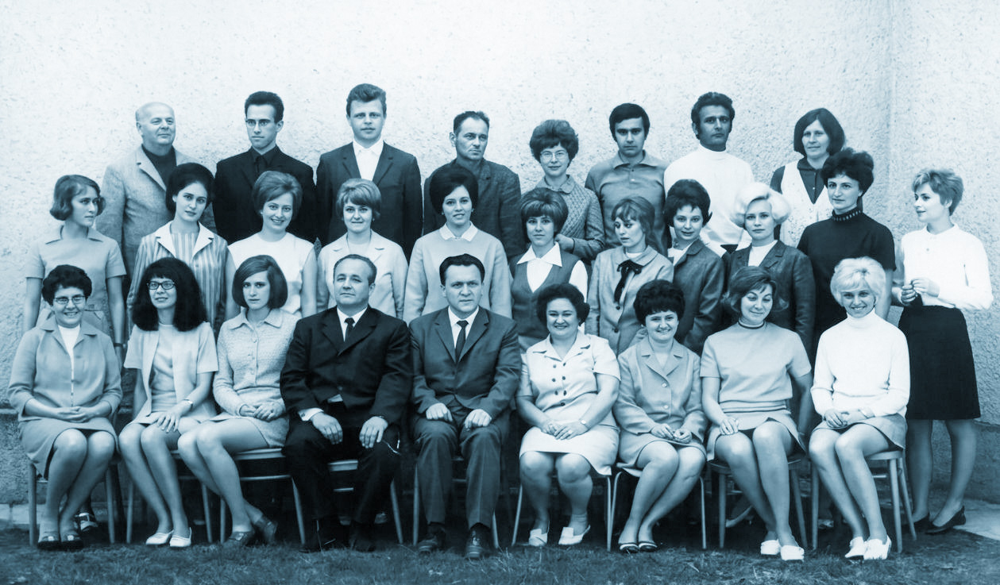
věnovat tolik času „historii jednoho experimentu“. Wichterlovo gymnázium totiž navazuje nejenom na JSŠ založenou v roce 1956, ale i také na experiment, který vznikl v roce 1968. Že mám pravdu?
Měrka Máte. Ale mějte se mnou, pane kolego, prosím, ještě trochu trpělivosti. Rád bych totiž na závěr kapitoly přidal pár zajímavých poznámek. Zaprvé: ministrem školství, který posvětil vznik osmiletých gymnázií, byl Vladimír Kadlec. Člověk, který se stal v roce 1977 jedním z prvních signatářů Charty 77. Jeho jméno myslím stojí za připomenutí. Zadruhé: většina kantorů zrušeného osmiletého gymnázia doplnila řady našeho sboru. A protože Karel Pinkas si pro svůj projekt vybral opravdu ty nejlepší z nejlepších, byla to skutečně vítaná posila. Na náš ústav zamířili profesoři Kala a Čech, dále pak profesorky Černá, Záškodná, Lhoťanová, Pasková, Petro, Šelleová nebo Rusinová. Normalizace tak sice zabila experiment, ale nás paradoxně posílila.
Nezdařil Poslouchejte, pane kolego, teď mě něco napadlo. Vždyť ona se zánikem Pinkasova gymnázia musela uvolnit nová školní budova na ulici Aleše Hrdličky, viďte? Komu vlastně připadla?
Měrka No, myslel jsem, že vám to už došlo. Tu budovu jsme přece získali my! Ve školním roce 1970/71 jsme si již počtvrté v naší historii museli sbalit saky paky, opustit novostavbu na ulici Pokorného a vydat se vstříc novému sídlu. Spolu s kantory se pochopitelně přesouvali i žáci, kteří v důsledku nejrůznějších školských reforem tvořili skutečně neobvykle pestrou směsici. Většina tříd byla pochopitelně gymnaziálních, ale čtyři třetí ročníky sdružovaly ještě maturanty středně vzdělávací školy. A to nebylo všechno. Experiment sice administrativně zanikl, ale zůstalo po něm osm tříd, které bychom dnes nazvali prvním a druhým ročníkem vyššího gymnázia. Ty jednoduše zůstaly na Hrdličkárně a počkaly si, až za nimi dorazí celý náš tehdejší ústav. Tím vznikla opravdu veliká škola, jež v mnohém předznamenala dnešní Wichterlovo gymnázium.
Nezdařil No to musel být opravdu pěkný guláš. Divím se, že se v tom současníci vůbec vyznali. Kolik studentů jsme vlastně od té doby měli?
Měrka Podle kroniky se jich v budově na ulici Aleše Hrdličky ve školním roce 1970/71 sešlo přesně 657. Pro srovnání: dnešní Wigym má žáků 689.
18) Jak jsme přišli do jiného stavu a v 16 letech porodili
Nezdařil Kolego, já nejsem žádný demograf, ale jedna věc mě při pohledu na ta čísla přece jenom napadla. Obyvatelé Nové Ostravy se vesměs nastěhovali do svých nových domovů v 50. a 60. letech. Populační vlna tsunami byla tak enormní, že se sotva stačily stavět nové a nové budovy základek. V 70. letech absolventi těchto škol dosáhli jinošského věku a ti chytřejší „synci a děvuchy“ chtěli studovat dál. Ale naše škola si po zániku experimentu nadále uchovávala monopolní postavení prvního a jediného porubského gymnázia. Pokud jsme se neměli za pár let stěhovat na nějaký menší stadion, anektovat další budovy, nebo přistavět pár pater, tak ta situace nemohla být dlouhodobě udržitelná.
Měrka Máte pravdu, ale trošku vás vyzkouším. Podívejte se na webové stránky Gymnázia Olgy Havlové a v záložce Historie školy zkuste zapátrat, jak jejich gymnázium vzniklo.
Nezdařil Už tuším, kam míříte. Počátek jejich ústavu je tam zachycen jedinou mlhavou větou: „1972 – založení gymnázia – začíná jako malá škola s devíti třídami.“ To mi hlava nebere. Představte si, že do prvního ročníku čtyřletého studia naberete devět tříd. Třídy by měly označení 1. A, 1. B, 1. C, 1. D, 1. E, 1. F, 1. G, 1. H a 1. I. Tento start up nazývají kolegové z Havlovky „malou školou“? To je něco jako skromná večeře o 16 chodech nebo stručná čtyřhodinová porada. Vždyť by to gymnázium muselo mít za čtyři roky přes 1100 studentů! Věta o založení malého gymnázia s devíti třídami mi připomíná delfskou věštkyni Pýthii.
Měrka To je přesné. Delfská
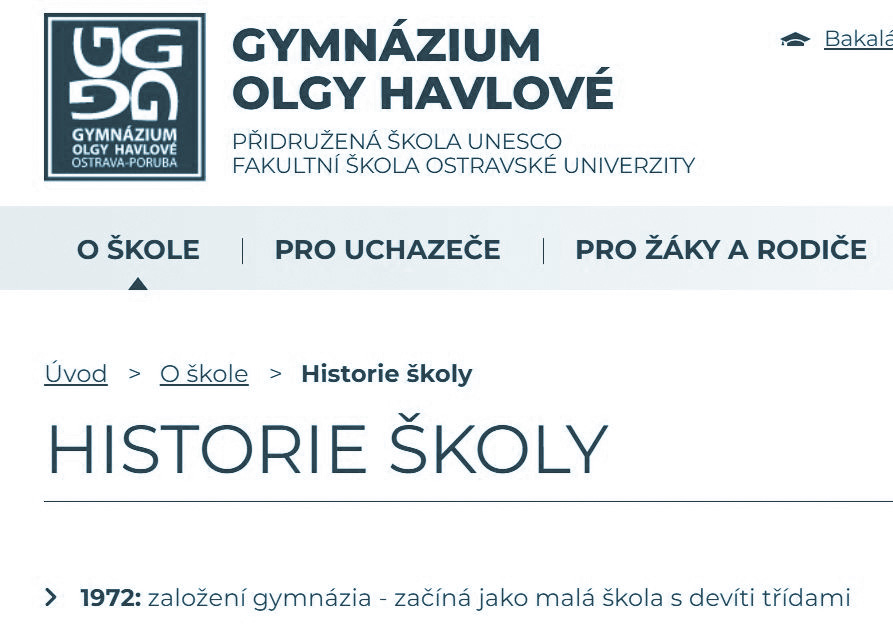
věštkyně fetovala nějaké výpary vycházející ze skalní pukliny a halucinovala jako Chat GPT: „Překročíš-li řeku Halys, zničíš velkou říši.“ „Založíš malou školu o 36 třídách.“
Nezdařil A protože z takových kratochvílí kolegy z Havlovky snad nepodezíráte ani vy, zajímalo by mě vaše vysvětlení oné podivné věty z webovek.
Měrka Já bych vyšel té vaší demograficky přesné poznámky. Zkrátka generace Gottwaldových a Zápotockého dětí na počátku sedmdesátek opouštěla základky a v Porubě měla k dispozici jediné gymnázium, jehož kapacita byla limitovaná velikostí budovy na ulici Aleše Hrdličky. Dneska je tam
ZŠ a škola bude mít nějakých 600 žáků. Tisíc lidí do tohohle baráku zkrátka nedostanete, ani kdybyste je do z tříd natlačil po čtyřiceti. Měl se tak opakovat příběh, který jsme už jednou popsali. Škola se nastěhovala do zbrusu nové budovy, ale po dvou letech tato přestala kapacitně stačit.
Nezdařil A, tady se opakuje příběh našeho vzniku na ulici Komenského. Ani jsme se v té tlačenici neohřáli a už nás hnali pryč do budovy na Thälmannce. No tak ven s tím, kam nás zase přesunuli?
Měrka Nic jste nepochopil, pane kolego. Nikam nás nevystěhovali, ale museli jsme z těla svého vyvrhnout plod, konkrétně některé třídy druhých a třetích ročníků. A právě ty se staly jádrem dnešního GOH.
Nezdařil Ahá, už to chápu. Žádných devět tříd prváků a potenciální růst na tisíc hlav, ale projekt mnohem skromnější. Pět starších tříd od nás, k tomu přijmout čtyři první ročníky a rázem ta podivná věta z webovek GOH dává mnohem lepší smysl. Poslyšte, a můžeme my vlastně napsat, že jsme porodili již v šestnácti letech? Jestli ono to není trošku kontroverzní.
Měrka A proč by mělo být? Dnes se koneckonců soudí, že panenka Marie povila zhruba v patnácti, tak jaképak copak. Pokud bychom navíc pokračovali v porodní analogii, bude to mít docela zajímavé následky.
Nezdařil Vy patrně narážíte na skutečnost, že danou optikou je Wichterle matkou Olgy Havlové, která je pak zároveň vnučkou Komenského, viďte? Uznávám, že tohle vysloveně evokuje zápletku Cimrmanova Záskoku. Přijde mi ale divné, že se dcerunka ke své matce na webovkách nehlásí. Přitom by každoročně měla z Havlovky na Wigym přicházet delegace s pugétem. Třeba na den matek.
Měrka Byla by to dobrá recese. Ale žijeme ve stavu kolektivní historické amnézie. Podívejte, my tady nejsme od toho, abychom se snažili ustavovat nové tradice, přestože pro pár kytek a nějakou tu flašku ročně by Havlováků neubylo, ale abychom tu zpřetrhanou kontinuitu připomínali.
Nezdařil A dá se vlastně ta poznámka o narození GOH ověřit z nějakého nezávislého zdroje? Abychom svá tvrzení neopírali jenom o jednu větu z internetu. Udělat něco podobného náš student, tak mu oba pořádně vyčiníme.
Měrka To víte, že dá. Nahlédl jsem do naší kroniky. Alfréd Lubojacký lapidárně konstatuje toto: „Školní rok 1972/73 započal dělením školy na dvě gymnázia tak, že na Hrdličkově ulici zůstalo 21 tříd a na Thälmannově ulici měla být vytvořena škola o devíti třídách.“
Nezdařil Výborně, to sedí. Analýza historických pramenů a jejich zasazení do dějinného kontextu patří k základní výbavě poctivého historika! Dejte na mě, tenhle náš text se jednou bude v seminářích dějepisu používat jako modelový příklad profesně vyzrálého přístupu ke studiu minulosti! Vyčetl jste z kroniky ještě nějakou zprávu o naší dceři?
Měrka Nevím, zda je do tak důležité, ale když jinak nedáte. Naše dcerunka se hlásila o věno.
Nezdařil O věno? Už od nás přeci dostala několik tříd a nepochybně také mateřské požehnání, tak co by ještě chtěla? Ložní prádlo a sadu příborů?
Měrka Tak v prvé řadě byli na novou školu staženi někteří naši učitelé. Jejich jména s pečlivosti sobě vlastní uvádí ve své kronice letopisec Petrus. Byli to: Hana Lukášová, Miroslav Šajnar, Eva Němcová a Květa Šustková. Není bez zajímavosti, že dvě posledně jmenované v letech 1973–1992 novou školu dokonce řídily. A pak se také samozřejmě dělil inventář. Dceři jsme zkrátka museli vydat i nějaké učební pomůcky.
Nezdařil Cože? Snad se to nedotklo i předmětové sbírky dějepisu? Které nástěnné mapy nám Havlovka uloupila? Starověkého Řecka? Slovenského národního povstání? Já bych podal restituční nároky!
Měrka Pane kolego, uklidněte se. Dodnes chráním jako oko v hlavě starou inventární knihu, do které naší předchůdci od konce 60. let zapisovali položku po položce každou novou učební pomůcku. A mohu vás ubezpečit, dějepisáři nové škole nedali nic. Zachránili jsme i sadu fotografií s názvem „Dějiny KSČ v obrazech“.
Nezdařil Tak zrovna tuto jedinečnou didaktickou pomůcku bych naší dceři věnoval a ještě poděkoval. Tak mě ale napadá: ve které školní budově nalezla dceruška azyl?
Měrka Vy, kdybyste tak jednou dával pozor… Vždyť jsem vám před chvílí citoval zápis ředitele Alfréda Lubojackého ze školní kroniky. Tam se jasně uvádí: 21 tříd zůstalo na Hrdličkově ulici a nová škola vznik la na ulici Thälmannově. Doplním jenom číslo popisné – 669.
Nezdařil Thälmannova ulice 669? Ale, ale to je přece naše adresa! Co má tohle znamenat? Nespletl jste se? Ve svém věku už byste na to měl právo.
Měrka Nechte si ty své mladické drzosti. Dcera nám opravdu zasedla naše minulé i budoucí místo. Ale obsadila jen třetí podlaží, protože ve zbytku budovy ještě fungovala základka. To se ale mělo brzy změnit: od září roku 1973 se „Havlovka“ přestěhovala přes ulici do školní budovy, o níž jsme si povídali v jedné z prvních kapitol.
Nezdařil No to už je lepší. Nechte mě, abych to dokončil, tentokrát mířím na jisto: Gymnázium Hello!
Měrka No vida. I vy se někdy můžete pěkně trefit. Budoucí GOH se skutečně přestěhovalo přes ulici na číslo popisné 491, kde dnes sídlí vámi zmiňované gymnázium. Když se ale náš ústav v roce 1974 přesune na Thälmannovu ulici č. 669, vznikne jeden onomastický problém.
Nezdařil Onomastika, to je nějaká nová pomocná věda historická? Nikdy jsem o ní neslyšel.
Měrka Onomastika se zabývá proprii, tedy vlastními jmény. S pojmenováním těch dvou gymplů stojících na jedné ulici, nesoucí mimochodem jméno německého komunisty, nastal problém. Jak ty dvě vzdělávací instituce v komunikaci od sebe odlišit?
Nezdařil No, mohli jsme přijmout čestné názvy. My Leninovo gymnázium, oni zase třeba Gymnázium Naděždy Krupské. Aspoň by to zůstalo v rodině.
Měrka Tedy vy máte někdy děsivé nápady, přestože historicky jen nevalně ukotvené. Tehdy se totiž ještě čestné názvy školám neudělovaly. A tak se ustálilo označení Velká a Malá Thälmannka.
Nezdařil No tak aspoň že my jsme byli velcí a oni ti malí. Dcera nám tak nemohla přerůst přes hlavu. Onomastika je vlastně docela zábavná věda.
19) Nástup normalizace a odcházení Alfréda Lubojackého
Měrka Alfréd Lubojacký byl ředitelem naší školy až do roku 1973. Na úvod konstatujme, že uhájit ředitelský post na počátku normalizace znamenalo projít všemi stranickými prověrkami. Nebývalo to tehdy samozřejmostí. Připomeňme si třeba, jak dopadl ředitel „experimentu“ Karel Pinkas.
Nezdařil To je nepochybně pravda. Co kariéru Alfréda Lubojackého vlastně ukončilo? Šlápnul někomu na kuří oko nebo snad po vzoru hostinského Palivce prohlásil, že mouchy pokálely obraz státního prezidenta?
Měrka Tak především mu bylo v roce 1973 pěkných 66 let, což znamenalo, že již šestým rokem přesluhoval. Na starobní důchod jste měl totiž tehdy nárok okamžikem dovršení šedesátky. Jeho odchod proto asi neměl výrazně politickou konotaci, přestože jedna kaňka by se našla. Tu si ale schovám až na konec kapitoly.
Nezdařil V sedmdesátkách se chodilo do důchodu už v šedesáti? To by se vám, kolego, líbilo, ne? Mohl byste na svém záhonku sít ředkve, a především nemusel sepisovat dějiny Wichterlova gymnázia.
Měrka Tak zní to hezky, ale vzhledem k tomu, že se tehdy střední délka mužského života pohybovala kolem 66 let, asi bych toho již příliš nezasel…
Nezdařil Aha. No…tak raději rychle zpátky k věci. Ředitelováním pana Lubojackého jsem se zabýval v minulé hodině věnované šedesátým letům. A jisté je, že byl kantory, tedy svými podřízenými, vnímán veskrze pozitivně. Chci věřit, že si to na konci svého působení nepokazil. Že ne?
Měrka Jsem přesvědčený, že pan ředitel se snažil ústav, a především pedagogický sbor uchránit před nejhoršími pohromami. Ale těžko pro toto tvrzení budeme hledat důkazy ve školní kronice, kterou vedl až do roku 1973. Klima
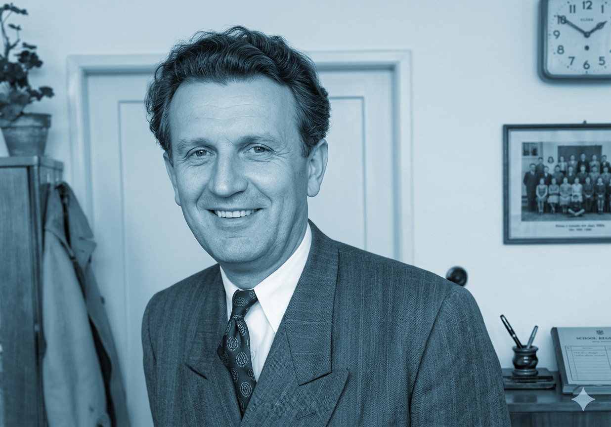
na škole každopádně zhoustlo. Tu podivnou atmosféru jeden z pamětníků charakterizuje takto: „Panovala taková informační mlha, pohybovali jsme se spíš v dohadech a podezřeních.“
Nezdařil Dohady a podezření o čem? To zní spíš jako něco z Kafkova Procesu.
Měrka Kafkárna, to jste řekl přesně. Když pozorně listuji těmi Lubojackého kronikářskými zápisky z posledních let jeho ředitelování, cítím z nich únavu a lehkou rezignaci. 21. srpen 1968 musel být pro jeho víru uhlířskou velmi těžkou zkouškou. O dění na škole tehdy zapsal dvě podivné věty: „Školní rok začal velmi vzrušeně. V narušeném prostředí proběhl celkem klidně.“
Nezdařil To tam fakt je? Připo míná mi to Járu Cimrmana. Ten také dokázal zastávat stanovisko, který vzápětí sám vyvrací.
Měrka Ale ono je to vlastně svým způsobem geniální. Pouhými dvěma větami přesně pojmenoval schizofrenní stav, jímž se vyznačovala tehdejší doba. Vlastně s ním docela soucítím, protože se na konci své profesní dráhy pral se situací, ve které by se nikdo z nás ocitnout nechtěl.
Nezdařil Počkejte, já jsem se ho přece nechtěl dotknout. Chápu, že navigovat mezi Skyllou stranických požadavků a Charybdou vlastního svědomí muselo být v té době nesmírně obtížné.
Měrka To máte rozhodně pravdu. A nutno říct, že pan Lubojacký nejspíš dokázal manévrovat velice obratně. Pokud mohu soudit, snažil se především zmírnit škody, které by znamenaly pohromu ne přímo pro něho, ale pro celou školu. Dneska se tomu odborně říká DAMAGE CONTROL. Ze vzpomínek pamětníků jsem se například dozvěděl, jak školou rezonovala smrt Jana Palacha. Na vlastní oči jsem zhlédnul amatérský film pořízený v lednu 1969 na lyžařském kurzu jakési třídy našeho gymnázia. Je na něm vidět bílá, sněhem pokrytá stráň a kantoři držící se svými studenty tryznu za Palacha. Jeho čin oslovil mladou generaci evidentně silněji, než Akční program KSČ nebo 2000 slov.
Nezdařil Abychom se zase drželi zásad historické práce, dá se o té Palachově tryzně něco dohledat ve školní kronice?
Měrka Něco málo jsem našel: „V době palachiády znovu se vzdemula vlna vzruchů vzedmutá novinami, rozhlasem, televizí… Nebyla uspořádána panichyda (sic!) vedením školy, jako na okolních školách.“
Nezdařil To je velmi zajímavá a zase dvojsmyslná formulace. Autor nepopírá, že nějaké smuteční obřady se na našem gymnáziu odehrály, zároveň se od nich distancuje a prohlašuje, že on nic takového neorganizoval.
Měrka Znovu zdůrazňuji, že pan Lubojacký nad školou rozprostřel ochranný deštník a vždy se pokoušel pedagogický sbor chránit. V archivu města Ostravy je uložen dokument s názvem Zhodnocení školního roku 1969/70. Dovolte mi, abych z něho citoval: „Podle mých zjištění i dotazů u rodičů a rozhovorem s profesory nedošlo na škole k napadání stranických funkcionářů a ke špinění našich spojenců ze strany členů profesorského sboru.“
Nezdařil Kdybych měl daný zápis nějak interpretovat, tak řeknu, že jeho dikce není nikterak bojovná a příliš dobře proto nezapadá do zjednodušeného obrazu ředitele– normalizátora. Na nikoho přímo neukazuje a nesnaží se (řečeno dnešním slovníkem) o proaktivní přístup. Text by se dal možná shrnout slovy: „Zde vše v pořádku, netřeba sem zaměřovat pozornost.“
Měrka Na druhé straně dokázal být pan Lubojacký i útočný, ale ostří svých výpadů směřoval spíše k nadřízeným orgánům, které podle jeho názoru neposkytovaly pedagogům dostatečnou metodickou podporu. Jako češtináře mě zaujala jeho filipika adresovaná Severomoravskému krajskému pedagogickému ústavu. Opět cituji: „SKPU ve svém metodickém listu věnovaném maturitním otázkám je zcela poplatný metodám z roku 1968. Ve svém diletantském návrhu se dále nabízejí spisovatelé jako Holub, Březovský, Vyskočil, Kříž, Blažek, Uhde, Topol, Suchý a Šlitr a jiní, kteří se podíleli na rozkladném procesu v roce 1968.“
Nezdařil V tom výčtu postrádám snad jen Ludvíka Vaculíka a Václava Havla. Působí to na mě, jako by se na jedné straně snažil chránit své lidi a na straně druhé tento svůj postoj vyvažoval plamennými deklaracemi a hyperkorektními výstupy na témata obecná. Jak to říkal Reinhard Heydrich? „Čech je jako cyklista. Navrch se hrbí, ale dole šlape.“
Měrka Šťasten, kdo tuto dobu nezažil. Chcete, abych vám o Alfrédu Lubojackém řekl pro změnu nějakou veselejší historku?
Nezdařil Sem s ní. Já přímo miluji veselé historky, pokud to tedy nepadá na můj účet.
Měrka Já jsem těch vtipných vyprávění slyšel více a nevím, které vybrat. První příhoda nás přenese do počátků 60. let, kdy naše JSŠ sdílela budovu na Thälmannově ulici se základkou. No a oběma ústavům řediteloval pan Lubojacký. Dokážete si představit poradu školní instituce, která zahrnuje 1. a 2. stupeň osmiletky a k tomu naše tříleté „gymnázium“? Ty schůze musely být nekonečné. Pane kolego, odpovězte mi upřímně, nudil jste se někdy na pedagogické poradě?
Nezdařil Já vám odpovím nepřímo. Znáte kolegu Roberta Fulghuma? Ten někde napsal, jak seděl na poradě pedagogického sboru. Ta se nekonečně táhla a on upřel pohled na plastovou lžičku od kávy a přemýšlel, zda by se s ní dokázal podříznout, aby jeho utrpení skončilo. Svá slova bych formuloval opatrně: „Robertu Fulghumovi dobře rozumím.“
Měrka A přesně tak se táhla jedna pedagogická porada na Thälmannce před nějakými 65 lety. Diskuse pedagogů se zasekla na tématu dozoru na školních záchodcích. Pan Lubojacký se po celou dobu strašně nudil, do vzrušené debaty nijak nezasahoval. Otočil se zády ke sboru a zíral z okna. Když už se v emotivní diskuzi vystřídali všichni vyučující, ředitel s pohle dem upřeným stále kamsi k obloze, shrnul debatu legendární větou: „A pořád prší.“
Nezdařil Lubojacký, stejně jako pan Tomšík, dokázal rozlišit věci podstatné od nepodstatných a zůstat nad věcí. Ta historka je výborná. Připomíná mi jednu skvělou židovskou anekdotu. Znáte to, jak umírá starý moudrý rabín a kolem postele se sejde celá rodina…
Měrka Nemáme čas, kolego. Druhá historka je také výborná a já jsem ji slyšel z úst starších kolegů a kolegyň v různých variantách. V 70. letech byl už Lubojacký ve věku ostříleného harcovníka, k čemuž patří i jistý stoický nadhled. Zatímco jiní ředitelé ostravských středních a základních škol se snažili vrchnosti vyhovět co nejrychleji a nejservilněji, zachovával si náš ředitel stone face. Tvář hráče pokeru. Když z Krajského národního výboru nebo od jiného řídícího orgánu přišla urgentní žádost o vyplnění tabulky nebo „příkaz k provedení opatření“, Lubojacký to řešil originálním způsobem. Uhádl byste, jak?
Nezdařil No pověřil tím nějakého podřízeného, třeba sekretářku. Ta to pak za něj sepsala, vyřídila a možná i podepsala.
Měrka Kdepak. Víte, tehdejší ředitel neměl ve zvyku přenášet své povinnosti na ostatní. I tu kroniku školy si ostatně psal sám. Já vám to prozradím. Obálku i s jejím obsahem hodil do koše.
Nezdařil Pokud mluvíte o koši spamovém, tak máme s panem Lubojackým konečně něco společného. Tuto jeho metodu praktikuji dlouhodobě a přiznám se, že tam někdy přesouvám i korespondenci zasílanou vedením školy – jak to má předmět typu „Nabídka vzdělávacích kurzů katedry gender studies“, letí to jak Raška.
Měrka Spamový koš v roce 1971? Myslete trošku. Mluvím pochopitelně o obyčejném koši na odpadky! No, ale ať dokončím tu historku, protože její pointa stojí za to. Na námitky svých zástupců, že se takové jednání může v budoucnu vymstít, reagoval pan ředitel údajně takto: „Když budou opravdu něco závažného potřebovat, ozvou se znovu.“
Nezdařil Poslouchejte, to opravdu nebyla vůbec špatná anekdota. Přiznám se, že tímto poněkud punkovým přístupem k úřední zvůli si mě ředitel ještě více získal.
Měrka Ale pozor, ona to nebyla žádná lenost. Dnes bychom nejspíše řekli, že pan Lubojacký představoval průkopníka metody označované jako INBOX ZERO. Mazat, prioritizovat a zachovat neotřesitelný klid. Je to ochrana před nervovým zhroucením a totálním vyhořením.
Nezdařil Víte co, kolego? My tady tlacháme, čas běží a stránky narůstají. Mám pocit, že je načase tu kapitolu o našem pozoruhodném třetím šéfovi nějak pěkně zakončit. Máte nápad jak na to? Abychom to jenom tak násilně neutnuli.
Měrka To víte, že mám. Všiml jste si, že významné osobnosti často svůj odchod z dějinné scény završí nějakým bohulibým činem? Nějakým gestem, na které pamětníci vzpomínají se slzami v očích?
Nezdařil Třeba rozdají svou prezidentskou výplatu kameníkům, jak to učinil Antonín Zápotocký, nebo v posledních dnech svého prezidentování vyhlásí amnestii jako Václav Klaus? Anebo se jednoduše zastřelí jako Adolf Hitler. To byl zvláště bohulibý počin.
Měrka Nebo Marie Stuartovna, která před popravou rozdala své šperky svým věrným služebným. Tedy s tou Klausovou amnestií jste ale trošku ujel, pane kolego, ale to si vysvětlíme osobně. Jak jste však určitě pochopil, Alfréd Lubojacký se se školou rozloučil ve velkém stylu. V roce 1973 ve třídě 4. F (třídní profesorka Eva Šellová) úspěšně odmaturoval Pavel Filip.
Nezdařil Pane kolego, to má být jako ta profesní pointa našeho třetího ředitele? To myslíte vážně? Vždyť zrovna v roce 1973 maturovalo sedm tříd a úspěšných absolventů byly cca dvě stovky.
Měrka Vysvětlím to poněkud podrobněji. Pavel Filip byl velice nadaný žák. Zajímala ho především matematika, a když z toho předmětu maturoval, přišly se na něj prý podívat dokonce i kolegyně jazykářky. Ale celá škola věděla, že… nu že je tady jistý problém. Jeho tatínkem totiž nebyl nikdo jiný než známý ostravský spisovatel Ota Filip, autor románu Cesta ke hřbitovu. A právě ten se stal na prahu normalizace jedním z nemnoha ostravských disidentů. Dokonce byl za své politické postoje v letech 1970–1971 vězněn.
Nezdařil Nepovídejte. Já jsem si vždycky myslel, že Husákův režim dával v první polovině sedmdesátek svým odpůrcům více méně pokoj.
Měrka Tak, pro Prahu by to platilo. Ale na Ostravsku, v ocelovém srdci republiky a tradiční komunistické baště, byl nástup normalizace přímo raketový. To, co pražskému undergroundu a disentu procházelo až do roku 1976, by bylo u nás nemyslitelné. Politické procesy tady začaly už na počátku 70. let, akorát, že to Pražáci málo vědí. Rád bych čtenářům osvěžil paměť. Rok 1971: soudní proces proti členům ostravského Divadla Waterloo: čtyři členové odsouzeni k nepodmíněným trestům od devíti měsíců do dvou let. Další čtyři členové téhož souboru mohli mluvit o klice: dostali jenom podmínečné tresty.
Nezdařil Už v sedmdesátém prvním? To museli být teda pěkní borci. Co provedli? Zahráli snad dramatizaci Orwellova románu
1984 na prknech divadla Zdeňka Nejedlého nebo uspořádali nějaký ten protisovětský happening přímo na náměstí Lidových milicí?
Měrka Ale co vás nemá. Nic tak dramatického se nestalo. Zkrátka se s pár desítkami dalších lidí sešli na akci, která se konala na soukromém statku v Leskovci a tam u piva zpívali něco ze své autorské tvorby. Konkrétně šlo o písničky ze hry „Syn pluku“, kterou dopisovali pod vlivem srpnových událostí.
Nezdařil Aha. Myslím, že si texty těch písniček dokážu docela dobře představit. A taky si umím představit, co se asi dělo dál. Někdo je prásknul, viďte?
Měrka Přesně tak. Následovalo vyšetřování souboru a soud za napsání divadelní hry, která podle rozsudku „hrubým způsobem urážela spřátelenou socialistickou zemi a její bratrskou pomoc v srpnu roku 1968“. Byl to vlastně první normalizační proces tohoto druhu. A protože Stb nezahálela, nezůstalo jenom při tom. Tvrdá pěst tzv. spravedlnosti dopadla i na ostravského disidenta Otu Filipa, který byl za „podvracení republiky“ odsouzen k nepodmíněnému trestu v délce 18 měsíců.
Nezdařil To byla to naprosto šílená doba. Když mladý Pavel Filip maturoval…
Měrka Když mladý Filip maturoval, jeho otce už sice z kriminálu pustili, ale měl cejch největšího kontrarevolucionáře na Ostravsku.
Nezdařil Předpokládám, že jako takový byl pod neustálý policejním dohledem.
Měrka No, ten si nemohl ani odskočit naproti přes ulici pro cigarety, aby za sebou netáhl alespoň dva fízly. Pokládám proto za naprosto nemyslitelné, že by o tom ředitel naší školy nevěděl. A přesto nad disidentovým synem držel ochrannou ruku. Nejen že umožnil Pavlovi odmaturovat, ale vlastnoručně podepsal doporučení pro studium na Matematicko-fyzikální fakultě Univerzity Karlovy, kam byl také přijat.
Nezdařil To je tedy docela frajeřina. Když navíc vezmeme v úvahu, že celoživotní komunista Alfréd Lubojacký s politickými názory Oty Filipa pravděpodobně nesouhlasil… Tím spíš je třeba ocenit jeho odvahu postavit se normalizační praxi.
Měrka Dodejme, že proti praxi, která byla zločinná. Trestat děti za skutky jejich rodičů… Pan ředitel si za tento postoj sice odnesl stranický trest, ale zato mohl do důchodu odcházet s čistým stolem i čistým svědomím.
Nezdařil Krásně jsme tuto kapitolu ukončili, pane kolego. Možná se už trapně opakuji, ale historie přináší nejedno překvapení.
20) „Šedodennost“ normalizace
Nezdařil Pane kolego, když učím v dějepise všechny ty Přemyslovce, Jagellonce a Habsburky, napadá mě jedna nejspíš kdysi kacířská myšlenka. Historie se přece neodehrává jenom v trůnních sálech. Velké většině „národa“ bylo vlastně jedno, kdo zrovna seděl na stolci a vydával příkazy. Tak mě napadá, že by bylo hezké zabrousit i do dějin každodennosti našeho gymnázia. Víte, co myslím? Podívat se na to, jak vlastně vypadal všední den kantora „Velké Thälmannky“ v 70. a 80. letech 20. století.
Měrka Myslím, že jste poměrně přesně pojmenoval problém, který mě při tvorbě tohoto textu už nějakou dobu trápil. Možná jsme se dosud až příliš věnovali osobnostem ředitelů, až příliš jsme zkoumali, jak velké dějiny dopadaly na bedra šéfů a pramálo se zabývali životy běžných učitelů. Musíme zkrátka svůj pohled alespoň na chvíli odtrhnout od krajských tajemníků jediné strany, gymnaziálních ředitelen a podívat se na bláto a prach cest, po nichž bylo kráčeti našim předchůdcům.
Nezdařil To jste řekl krásně. Upřemež pozornost na dění v podhradí a prozkoumejmež životy lidí, nacházejících se na spodních patrech potravinového řetězce státní správy. Českou literaturu jsem nikdy nemusel, ale vybaví se mi ještě název jedné prózy Boženy
Němcové – Na zámku a v podzámčí. Jak to v tom podzámčí našeho gymnázia v časech normalizace vypadalo?
Měrka Vyjděme z konkrétních reálií. Ve školní kronice je nádherná fotografie pedagogického sboru z roku 1981.
Nezdařil Pane kolego, neujel jste tady trošku? Vždyť my své předchozí vyprávění skončili rokem 1973 a tudíž nás od osmdesátého prvního dělí ještě osm let. Víte, co všechno se dá za takovou dobu stihnout? Víc než čtvrtina třicetileté války například!
Měrka To si samozřejmě dobře uvědomuji, ale náš sbor byl v normalizačním bezčasí celkem stabilizovaný. Kam byste taky chtěl z toho marasmu utéct? Domníváte se, že to bylo na „Matičáku“ či snad na gymnáziu v Hrabůvce lepší?
Nezdařil A to máte zase pravdu. Vždycky jste sice mohl jít po havlovsku válet sudy někde do pivovaru, ale pokud se vám nechtělo opouštět kantorské řemeslo, změnou působiště byste si příliš nepolepšil. Tak ukažte. Co zajímavého jste na tom snímku našel?
Měrka Na fotografii z roku 1981 vidím starou gardu Wichterlova gymnázia. Většinu z nich jsem měl možnost poznat po svém nástupu osobně a věřte mi, že na ně vzpomínám v dobrém. Dneska už nikdo z nich neučí a mnozí z nich už bohužel ani nejsou naživu…
Nezdařil Nechci jitřit vaše city, ale upřímně, není divu. Vždyť byl ten snímek pořízen před pětačtyřiceti lety! Ale víte co? Zkusíme ho publikovat v almanachu, ať si můžou čtenáři absolventi taky užít trošku nostalgie.
Měrka Dobrý nápad! A pokud se nám navíc povede jej vpravit přímo do textu, nebudou ani muset listovat. Pojďte blíž, ať na to taky vidíte, protože vám teď ukážu, jakého mám pamatováka. Odrecituju všechna jména jako vyňatá slova po m! První řada nahoře zleva: Dáša Beerová, Marta Černá, Lubomír Roth, Antonín Dragoun, školnice Kordulová, Lubomír Müller, Alena Dvořáková, Marie Hegedüsová, Dana Drápalová, Dagmar Petro. Petrovka to vám byla skvělá ženská, když jsem na gympl nastoupil, ona…
Nezdařil Neodbíhejte, druhá řada zleva.
Měrka Druhá řada zleva: Jiřina Sumarová, Dušan Martinek, Eva Martinková, Květoslava Svobodová-Hradečná, Šárka Ličková, Věra Šmajstrlová, Marie Dohnálková, Vlasta Dvořáková, Jaroslava Fischerová, Emile Tomisová, Zdeněk Moravec. Víte, jak jsem se na náš gympl vůbec dostal? Zdeněk, skvělý chlap, byl zvolen do úřadu starosty v Háji ve…
Nezdařil Pane kolego, důrazně vás upozorňuji, abyste neodbíhal.
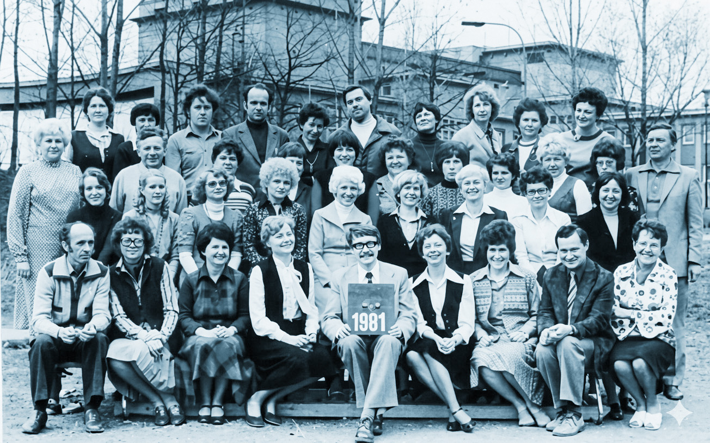
Třetí řada.
Měrka Polosedící třetí řada zleva: Jarmila Kučová (učila druhým rokem), Jarmila Skotnicová-Pisánská, Eva Stachová (toho času ještě ne Davidová), Dagmar Olbertová, Pavla Rusinová, Alena Novotná, Jarmila Pasková, Marie Šípková, Helena Lipčíková. Posledně jmenovaná mi poslala moc pěknou vzpomínku, kterou uveřejňujeme v…
Nezdařil Já chápu, že ve vás pohled na fotografii vyvolává řetěz asociací, ale vraťme se ke čtvrté řadě:
Měrka No, tak jo. Čtvrtá řada zleva: Václav Tvarůžka, Eva Kukulková, Milada Pirná, Pavla Záškodná, zástupcové ředitele Kamil Štěpán a Dagmar Jiroutová, Daniela Svobodová, Luděk Strejček a Vlasta Lhoťanová. Víte, pane ko lego, jak se k nám Luděk Strejček dostal? Když v roce 1968 na své domovské škole podepsal 2000 slov, tak byl…
Nezdařil Nepochybuji, že by ta historka mohla být zajímavá, ale my tady provádíme inventuru pedagogického sboru. O tom Strejčkovi mi můžete popovídat na dozoru. Dopočítal jsem se, že na prahu 80. let měla „Velká Thälmannka“ kolem 40 kantorů.
Měrka V 70. a 80. letech se počet „výchovných pracovníků“, jak se tomu tehdy říkalo, skutečně pohyboval kolem 40. Připomeňme jen, že jádrem sboru byli kantoři bývalé SVVŠ doplnění o kolegy ze zrušeného „experimentu“. Navíc do školy přibyli další, kteří nemohli kvůli prověrkám dále setrvávat na svých původních pracovištích. Jednalo se o Zdeňka Moravce a zmiňovaného Luďka Strejčka.
Nezdařil O panu Moravcovi se občas zmiňujete, ale zapomněl jsem…
Měrka Zdeněk k nám přibyl ze SVVŠ ve Vítkovicích. Ta škola normalizátorům ležela zvlášť v žaludku, a nakonec se rozhodli ono doupě kontrarevolucionářů rozmetat. Pan Moravec byl jediným členem sboru, kterého postihla největší forma stranického trestu. Nazývalo se to vyloučení a byla to jakási komunistická forma exkomunikace. Politický rozsudek smrti.
Nezdařil Ale na naší škole byli i jiní bývalí členové KSČ, kteří byli ze strany vyhozeni. Já tomu nerozumím. Nemohl byste to vyjádřit srozumitelněji?
Měrka Při stranických prověrkách vám členství mohlo zaniknout dvěma možnými způsoby. Vyloučením, nebo vyškrtnutím. Pokud vás potkalo to druhé, stranické orgány na vás pohlížely jako na člena, který v roce 1968 zbloudil. Pokud jste se ale choval alespoň trochu loajálně, nechal vás režim na pokoji. Potíže mohly mít třeba vaše děti s přijetím na gymnázium. No a vy jste měl po kariéře. Mohl jste působit jako řadový kantor, ale na nějaký postup jste mohl zapomenout.
Nezdařil Co jste teda o panu Moravcovi zjistil?
Měrka My jsme spolu rádi a dlouho debatovávali, ale na tyto věci jsem se ho nikdy neměl odvahu zeptat. On nebyl z těch, kdo by ze sebe dělal disidenta, nebo se vracel k ústrkům, jimž byl vystaven. Z písemností uložených v archivu je zřejmé, že ředitel Lubojacký nad ním držel až do svého odchodu ochrannou ruku. Ve zprávách o činnosti školy, které se posílaly nahoru, píše, že u pana Moravce opakovaně prováděl hospitace. Konstatuje, že hodiny byly odvedeny profesionálně, a že v nich neshledal žádné politické pochybení. V jedné zprávě dokonce vyslovuje domněnku, že pan Moravec pravděpodobně reflektoval své pomýlené názory z roku 1968.
Nezdařil Na mě ten ředitel Lubojacký začíná působit stále sympatičtěji. Na prahu normalizace se všichni zavrtávali do svého soukromí a on se snažil toho pana Moravce na škole udržet. Což se mu nakonec podařilo.
Měrka Jenže po příchodu Balcara se Moravcovo postavení zkomplikovalo. Zřejmě ta direktiva přišla shora a pan Balcar jí nedokázal čelit. Kolega Moravec byl zbaven třídnictví a dostal absurdní ban.
Nezdařil Ban? Vy už mluvíte jako generace Alfa. Čeho dalšího se ten zákaz týkal?
Měrka Bylo mu zapovězeno učit dějepis s výjimkou pravěku a starověku v 1. ročníku. Ale on to nesl bez jakéhokoliv bolestínství.
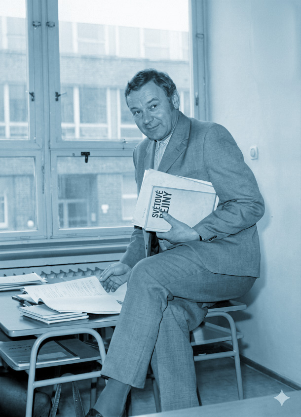
A navíc se časem stal pro nového ředitele nepostradatelný.
Nezdařil Jak, prosím vás? To mu každé ráno vařil kafe?
Měrka Pan Moravec mi v něčem připomínal Masaryka. Na jedné straně intelektuál, aristokrat ducha, jehož znalosti ve všech směrech překračovaly rozhled gymnaziálního učitele. Byla radost vést s ním disputace. Zároveň v sobě měl i cosi plebejského, co mu umožňovalo získat si respekt lidí prostých. Když potřeboval ředitel zajistit organizaci nějaké brigády, svěřil to panu Moravcovi.
Nezdařil Což bylo víceméně pořád: sběr brambor, slámy, chmelové brigády.
Měrka On to dokázal zařídit a především s těmi „jezeďáky“ najít společnou řeč a pro naše studenty vyjednat i důstojné podmínky. Pokud tedy šlo o brigádnickou činnost a LAS, naše škola byla pravidelně hodnocena jako nejlepší v SMK. Což pan Balcar ve svých zprávách o činnosti školy také nikdy nezapomněl zdůraznit. A dokonce připsat zásluhu panu Moravcovi, Strejčkovi nebo Tvarůžkovi.
Nezdařil Kolego, nějak jsme se u toho pana Moravce zasekli, i když to byla zajímavá osobnost. Normalizační doba byla v některých ohledech skutečně krutá. A máme vůbec představu, kolik kantorů se v době normalizace těšilo přízni strany? Jinými slovy se ptám, kolik bychom v tom čtyřicetičlenném sboru napočítali komunistů? Už jsme naznačili, že stranické prověrky na začátku normalizace jejich počty dosti zredukovaly.
Měrka No to si pište. Z hlediska KSČ bychom mohli hovořit o vysloveném kataklyzmatu. Z těch bezmála čtyřiceti lidí tvořilo na počátku normalizace „zdravé jádro strany“ pouhých pět, později přibyl jeden kandidát. U 13 členů pedagogického sboru bylo členství naopak zrušeno a jeden byl, jak jsme už konstatovali, ze strany dokonce vyloučen.
Nezdařil Počkejte, hned to spočítám. To máme, to máme… Nevíte, kam jsem dal mobil? A, tady je.
Takže před prověrkami byla ve straně téměř polovina učitelů, zatímco poté jich tam zbylo přesně 12,5 %. To je tedy pořádný sešup. Ale nebýt organizovaným komunistou s sebou, myslím, neslo i určité výhody. Zatímco straníci debatovali na schůzích, rozpracovávali závěry sjezdů strany, úkoly pětiletky, nestraníci mohli jít na pivo a povídat si protistátní anekdoty. Jako třeba tuhle. Dotaz pro Rádio Jerevan: „Kdy bude u nás vybudován komunismus?“
Měrka Netuším, dám se poddat.
Nezdařil Odpověď Rádia Jerevan: „Až budou mít všichni všeho dost.“
Měrka To je výborný fór. Ale domnívám se, že my bychom měli během normalizace všeho dost tak do dvou týdnů. Ten systém byl totiž nastaven tak, aby ideologii nikdo neunikl. Straník nebo nestraník, to bylo prašť jako uhoď. Slyšel jste někdy o jednotném systému politického vzdělávání?
Nezdařil Hmmm, ne. To bylo něco jako dnešní webináře placené z šablon?
Měrka No, když se nad tím tak zamyslím… Ale ne, žerty stranou. Nazývalo se to ideově politické vzdělávání (IPV) a jednalo se o promyšlený způsob, jak ideologii inkorporovat do vědomí učitelů.
Nezdařil Inkorpo… Co?
Měrka Inkorporace podle vzoru buzerace. Bližší detaily vám hned rád prozradím, protože jsem si vše skutečně podrobně nastudoval. Zaprvé, nemyslete si, soudruhu, že si ta povinná školení jen odsedíte a během výkladu soudruha lektora si budete luštit křížovku z Vlasty.
Nezdařil To by mě ani nenapadlo, sám mám v marxismu-leninismu jisté mezery a docela rád bych si doplnil vzdělání.
Měrka On by vás ten sarkasmus přešel, kdybyste se dozvěděl, že na konci školení budete muset absolvovat patnáctiminutový pohovor před komisí složenou z členů ZO KSČ, ZO ROH, soudruha ředitele nebo jeho zástupce a samozřejmě soudruha lektora. Z každého pohovoru se vypracovával zápis.
Nezdařil No to muselo být báječné, když vás kolegové, se kterými jste se dennodenně potkával na chodbách, takhle kádrovali.
Měrka Prostudoval jsem Metodické doporučení Krajského pedagogického ústavu v Olomouci z 14. února 1977. Soudruzi Milan Možíš a Karel Hájek doporučují, aby se závěrečné pohovory konaly v soudružském ovzduší.
Nezdařil Cožpak my dva, my bychom to už nějak skouleli. Máme oba humanitní vzdělání a práci s abstraktními koncepty, které se použitým jazykem i složitostí vyrovnají tomu marxistickému, do nás to dlouhá léta cpali na vysokých školách. Ale lituju třeba matikáře nebo fyzikáře. Jejich hlavní talent leží přeci jenom poněkud jinde, takže pro ně musely být podobné pohovory mnohem náročnější.
Měrka Možná si až příliš fandíte. V roce 1977 bylo stanoveno sedm základních okruhů. Byl to: 1. Všestranný rozvoj socialistické společnosti. 2. Úkoly a cíle politiky strany. 3. Rozvoj a zdokonalování politického systému socialistické společnosti…
Nezdařil Aha. Tedy nikoliv vzletné teorie a diskuse, ale spíše generické kecy, jejichž prostřednictvím měli účastníci rituálně potvrdit svou loajalitu k tehdejšímu systému. Taková verbální obdoba prvomájových průvodů a vyvěšování vlaječek v měsíci československo-sovětského přátelství. Přiznám se, že z toho se mi trošku dělají osypky.
Měrka A teď si vezměte, že před rokem 1977 byli naši kolegové nuceni nejenom absolvovat pohovor, ale také vypracovat písemné elaboráty na dané téma. Narazil jsem na ně v archivu a musím říct, že tedy stojí za to.
Nezdařil Ale nepovídejte. Ukažte. Nalistujte mi nějakou obzvláště šťavnatou či přímo pitomou práci.
Měrka Pozor, tady není cílem vysmívat se kolegům! Na to nezapomínejte.
Nezdařil Ale vždyť já vím. Pro ně to muselo být nesmírně ponižující a jistě to brali jako povinnou daň, kterou platili za své rozhodnutí zkompetentňovat žáky… Směju se spíše absurdnosti doby, která je nutila produkovat podobné texty. Tak už mě nenapínejte a povězte mi, jaká témata tehdy vlastně rozpracovali.
Měrka Tak schválně poslouchejte, na co se mi podařilo narazit. Přečtu vám jenom názvy jednotlivých prací: „Postavení dělnické třídy za kapitalismu“, „Všeobecná krize kapitalismu, využití poznatků politické ekonomie v hodinách angličtiny a ruštiny“, „Realizace názorné agitace v podmínkách školy – její využití k prohloubení výchovy k vědeckému světovému názoru“, „Aplikace poznatků politické ekonomie při vyučování chemie“, „Boj proti buržoazním přežitkům a za socialistický životní styl v předmětech mé aprobace“… Mám pokračovat?
Nezdařil Pane bože, jenom to ne. Najednou mi psaní almanachu připadá jako čiré požehnání. Jaký to mělo vlastně rozsah? Myslím, jestli stačilo načmárat dvě strany, pak přetrpět pohovor a bylo hotovo, nebo bylo potřeba tvořit poněkud delší elaboráty?
Měrka Průměrná délka textu byla někde kolem 8–10 stran strojopisu, tedy žádný příspěvek na web, který spíchnete za přestávku v kabinetě.
Nezdařil Strašné. Ještě něco si na kantory bývalý režim přichystal?
Měrka Ale to víte, že ano. Hodnotila se i vaše angažovanost, a to nejenom na pracovišti, ale i ve volném čase. Mohl jste se třeba přihlásit do Večerní univerzity marxismu-leninismu, působit jako lektor, zapojit se do komise výzdoby a okrašlovat školu k výročí Vítězného února či Velké říjnové socialistické revoluce, nebo se třeba angažovat v osvětových přednáškách pro veřejnost a pomoci tak formovat její světový názor. To vše bylo sledováno a hodnoceno. V ideálním případě měla ideologie prostoupit váš každodenní život skrz naskrz.
Nezdařil Poslyšte, na mě z toho padá tíseň. Co si s tím naši kolegové a kolegyně vlastně počali? Jak to snášeli?
Měrka Já bych s dovolením odcitoval Petruse Smolacia: „Protože skutečné osobnosti jsou osobnostmi za všech okolností (…) a svoboda je spíše vnitřním stavem duše, mohla si i v nesvobodném prostředí celá řada lidí zachovat svou svobodu vnitřní.“
Nezdařil To je pěkně a vznosně řečeno, ale mám pocit, jako by to trošku lakovalo ten tehdejší marasmus na bílo. Člověk se sice mohl stáhnout do jakési vnitřní emigrace, ale zároveň musel mnoha drobnými akty neustále demonstrovat svou vnějškovou loajalitu k systému.
Platil daň v podobě života ve lži a podle mého také musel časem poněkud zcyničtět. Ale já už mám zase tendenci filozofovat. Pojďme raději dál a přejděme od velikých myšlenek k nějakým všedním dennodenním radostem i strastem nebohých kantorů a především studentů, na ty bychom neměli zapomínat.
21) Přijímací zkoušky na Thälmannku
Měrka V kronice jsem našel zajímavou poznámku. Normální čtenář by si jí možná ani nevšiml, ale my přece z pramenů dokážeme leccos vyčíst. Jste, kolego, připraven? Něco vám přečtu a na závěr položím otázku. „Velká pozornost byla věnována propadávání žáků, zejména (…) žákům z dělnických a rolnických rodin. Pomoc těmto žákům byla dvakrát v roce vyhodnocována.”
Nezdařil Otázku klást nemusíte, protože podivnost oné citace je zřejmá na první pohled: žáci byli na škole rozděleni do několika kategorií na základě svého původu. A těm, kteří pocházeli z dělnicko-rolnického prostředí, musela být věnována zvláštní pozornost. Kdybych si měl tipnout proč, tak řeknu, že jejich třídní profil představoval v očích tehdejšího establishmentu záruku, že je doma rodiče nenakazili buržoazními manýry. U takových totiž měla být vyšší šance, že vyrostou v uvědomělé budovatele socialismu. Nadřízeným orgánům se proto musel pravidelně hlásit jejich prospěch, a pokud nedosahoval požadovaných kvalit, byl oheň na střeše. Mohli za to kantoři. Mám pravdu?
Měrka Bohužel máte. Marxistický třídní boj měl v očích komunistické věrchušky penetrovat i středoškolské vzdělávání. Myslím ale, že tento fakt nikoho příliš nepřekvapí.
Nezdařil Poslouchejte, a jak vlastně byly nastaveny přijímací zkoušky na náš gympl? Měli větší šance na přijetí ti, kteří se mohli pochlubit dobrými studijními předpoklady, nebo spíše ti se správnými kádrovými posudky?
Měrka To je těžká otázka, protože agendu z přijímacího řízení jsem v těch kartonech nenašel. Pokusím se ale jeho průběh zrekonstruovat na základě několika zachovaných fragmentů. První, co na naši školu spolu s každou přihláškou ke studiu přišlo, bylo tzv. komplexní hodnocení.
Nezdařil To je něco na způsob formativního hodnocení? Procesu, který moderní pedagogika chápe jako monstranci hodnou pozvedávání? Nechce se mi ani věřit, že by byli v socialistickém Československu až takto pokrokoví!
Měrka Jste zase naprosto vedle. Komplexní hodnocení dorazilo na naši školu automaticky z příslušné základky. Tento dokument nesepisovali žáci, ani jejich zákonní zástupci, nýbrž samotní pedagogové. Připravil jsem anonymizovanou verzi jednoho takového lejstra, abyste si udělal představu. Vyčerněné obdélníky skrývají citlivé údaje. Komplexní hodnocení na Janu Novákovou vypracovával třídní učitel, ale podepisovali ho…
Nezdařil Podepisovali ho ředitel školy, výchovný poradce a zástupce SRPŠ i ObNV.
Měrka Přesně tak: má to více podpisů než Mnichovská dohoda.
Nezdařil S tou Mnichovskou dohodou jste to trefil docela přesně. Jeden papír rozhodl o osudu státu a druhý zase o budoucnosti absolventa základní školy.
Měrka Z komplexního hodnocení se o žákovi dozvíte spoustu zajímavých informací.
Nezdařil Třeba to, kde a kdy se Jana Nováková narodila, jména a příjmení jejich rodičů, což jsou koneckonců údaje, které máme v Bakalářích zaneseny i dnes.
Měrka To máte pravdu. A kdyby zůstalo jenom u toho, bylo by vše zcela v pořádku. Když se ale začtete dál, narazíte hned na velmi problematickou pasáž: slovní hodnocení uchazečky o studium. Nejde ani tak o to, že je již z podstaty věci subjektivní. Kamenem úrazu jsou zde především jisté citlivé informace, hrající při konečném rozhodová
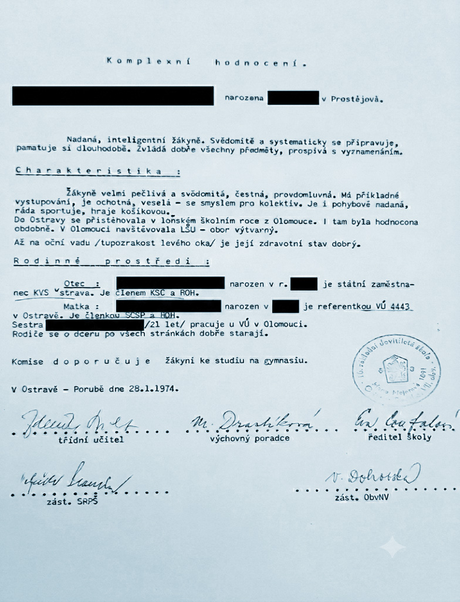
ní o přijetí či nepřijetí klíčovou roli. Vidíte je tam?
Nezdařil Slečna, Jana Nováková, je pravdomluvná a čestná, byť je tupozraká na levé oko. To ovšem její šance nijak nezmenšuje. Aha, už to vidím. Tou nejdůležitější součástí hodnocení jsou pravděpodobně informace o politické angažovanosti rodičů, viďte?
Měrka Přesně. Slečna Nováková má vcelku štěstí. Její rodiče sice nejsou dělnického původu, ale otec je členem KSČ, pracuje na Krajské vojenské správě v Ostravě a matka se také angažuje v SČSP a Revolučním odborovém hnutí. Není sice členkou KSČ, ale z Dodatku komplexního hodnocení leze vyčíst, že…
Nezdařil Tak Komplexní hodnocení mělo ještě Dodatek?
Měrka Ano a z toho Dodatku jsem vyčetl, že matka Jany Novákové nebyla členkou strany ani do roku 1968, tudíž z ní pod vlivem srpnových událostí nemohla být vyškrtnuta ani vyloučena. To šance na přijetí nepochybně zvyšovalo. Navíc má Jana Nováková další plusové body: „nenavštěvovala hodiny náboženské výchovy“, což by byl tehdy těžký hřích. Dodatek komplexního hodnocení je zakončen formulí, která rozhodla o vašem budoucím osudu.
Nezdařil Abrakadabra? Izbuška, izbuška, staň k lesu zadom, ko mne peredom? Jakou formuli máte na mysli?
Měrka Tuto: „Komise doporučuje žákyni ke studiu na gymnáziu.“
Nezdařil Ach tak. A ne každý z uchazečů měl takovou kliku. Předpokládám, že když byla vaše matka vyloučena ze strany, otec vyškrtnut a příbuzenstvo se po roce 1968 rozprchlo do exilu, nemělo skoro cenu k přijímacím zkouškám ani chodit. Nezáleželo na tom, že jste matematiku zvládl s virtuozitou Richarda Faynemana, když vaši rodiče a příbuzní byli renegáti. Poslyšte, dalo se to nějak zfalšovat? Mohl jste s tím komplexním hodnocením nesouhlasit?
Měrka Komplexní hodnocení představovalo interní dokument a byl byste rád, kdybyste do něj mohl alespoň nahlédnout. Ale rozporovat ani zpochybňovat jste ho v žádném případě nemohl. Pokud jste ovšem v dotaznících malinko zalhal a zapřel dejme tomu členství otce v KSČ před rokem 1968, mohlo by vám to při troše štěstí možná projít.
Nezdařil To by si ale dovolil jen málokdo. Lidé totiž měli, a podle mého soudu dosud mají, tendenci poněkud přeceňovat či přímo mytologizovat vševědoucnost tehdejší komunistické strany. S tou to ovšem zdaleka nebylo tak horké. Především je třeba si uvědomit, že státní ani stranický aparát v té době ještě nedisponoval počítači a veškeré údaje byly uloženy pěkně fyzicky v kartotékách. Probírat se takovými hromadami papíru a ověřovat každý údaj každého uchazeče o studium, by si tak nutně vyžádalo přímo absurdní časovou investici. Předpokládám proto, že když jste zapřel tetičku, která si v roce 1969 udělala jednosměrný výlet do Švýcarska, mohlo se na vás usmát štěstí.
Měrka Mohlo, pokud jste se o tom neprořekl a pokud jste neměl horlivého domovníka, který by to na vás příslušným úřadům agilně naprášil.
Nezdařil No a jak vlastně vypadaly přijímací zkoušky na naše gymnázium?
Měrka I to jsem dohledal. Dělaly se, stejně jako dneska, z češtiny a matematiky. Podařilo se mi dokonce najít zadání přijímacích zkoušek z mateřštiny. Uchazeči zapisovali své odpovědi do záznamových archů, jen na rozdíl ode dneška se vše vyhodnocovalo ručně. Chcete, abych vás vyzkoušel z jazyka českého? Na očích vám vidím, že ano. Tady je jedna otázka, na níž měla Jana Nováková najít odpověď: „Určete druh přídavného jména Leninovy.“
Nezdařil Víte dobře, že mám k české mluvnici vztah asi jako burlak k Leningradu. Víme o sobě, ale střetáváme se jen opravdu velmi výjimečně. Ale ať je po vašem. Jedná se pochopitelně o zájmeno přivlastňovací. Ovšem… co když je v tom skryt nějaký zákeřný politický chyták? Copak si může vůdce sovětských bolševiků něco přivlastnit? Kapitalista Salomon Mayer Rothschild, ten vlastnil v Ostravě doly, železárny a koksovny, co ale mohl vlastnit Lenin? Nene, dneska mě nedostanete. Slovo Leninovy bude nejspíš zájmeno komunistické.
Měrka Vy jste nevyčerpatelnou studnicí fórů. Ale teď si to raději shrňme: Ve složce uchazeče máme přihlášku ke studiu, komplexní hodnocení, dodatek ke komplexnímu hodnocení, životopis, na ten jsme pozapomněli, záznamové archy přijímaček z češtiny a matematiky.
Nezdařil Nic víc vysvětlovat nemusíte, protože dál už je to jednoduché. Ředitel Balcar zkrátka pověsil na dveře ředitelny cedulku NERUŠIT a jal se probírat těmi šanony.
Měrka Kolego, opět jste nic nepochopil. Ředitel školy neměl pravomoc, aby kohokoliv na školu přijal a když už jsme u toho, tak ani vyloučil. Škola totiž neměla právní subjektivitu, a proto všechny složky s Balcarovými návrhy byly předkládány kam?
Nezdařil Jak jsem jen mohl udělat tak banální chybu! Ředitel předkládal veškerou dokumentaci Odboru školství SM KNV. Byl to Krajský národní výbor, který vynesl definitivní verdikty, nikoliv tedy náš ředitel.
Měrka Ano! Z dnešního pohledu to zní téměř neuvěřitelně. Když si uvědomíte, že ředitel byl vlastně jen pošťákem, který zabalil podklady a poslal na KNV… Teprve tam se rozhodovalo, kdo bude přijat a kdo dostane divokou kartu.
Nezdařil Termín divoká karta je sice ze sportovní branže, ale tady jste ho myslím použil úplně dokonale. KNV často upřednostňoval uchazeče z dělnických rodin bez ohledu na počet bodů získaných v testech z jazyka českého a matematiky. Dělnický původ, to bylo eso, jež mělo sílu přebít téměř vše ostatní. Není proto divu, že se k nám tehdy mohli ve větších počtech dostat i studenti s poněkud limitovanými kognitivními schopnostmi. Ti pak na gymnáziu logicky prospívali jen s obrovskými potížemi a pedagogové jim museli věnovat „zvýšenou pozornost“.
Měrka Pravda. Jen ve školním roce 1972/73 bylo podle naší kroniky individuálnímu či skupinovému doučování těchto žáků věnováno 1500 hodin.
Nezdařil Tak se mi zdá, jako bychom si tím naším povídáním docela dobře připravili půdu pro další podkapitolu. V běžném povědomí je totiž zafixována představa komunistického ředitele jako všemocného vládce, jako démona, který má v rukou osudy žáků a profesorů. Ve skutečnosti ale připomínal spíš středověkého fojta nebo lokátora, který byl pouhým vykonavatelem vůle vyšší vrchnosti.
Měrka Pane kolego, trefil jste to přesně. To je geniální historická paralela.
22) Čtvrtý ředitel Jaromír Balcar
Nezdařil Uf. To byl tedy pořádně krušný exkurz do každodennosti sedmdesátých let. Pojďme se raději zase věnovat něčemu, nebo spíše někomu jinému. Zajímalo by mě, co se vám podařilo zjistit o Jaromíru Balcarovi. To byl přeci jenom člověk, který se stal ředitelem v roce 1973 a v této funkcí setrval až do roku 1990. Toho prostě nemůžeme vynechat. Tuším ale, že tady budeme kráčet po velmi tenkém ledě.
Měrka To máte tedy pravdu. Ale vezměme to hezky popořádku. Čtvrtý ředitel na mě působí jako nejtajemnější postava v dějinách našeho ústavu. Tajemství všech tajemství, abych citoval Dan Browna. Když jsem o něm u pamětníků zjišťoval něco konkrétního, dostalo se mi odpovědi: „O Balcarovi ti nic nenapíšu.“
Nezdařil Vaše utajené zdroje s vámi odmítly spolupracovat? A to jste nenašel žádný způsob, jak je rozmluvit? Třeba jim slíbit pár wigymáckých propisek nebo je nechat na dvě hodiny o samotě s 3D tiskárnou? Nebo na ně třeba trošku zatlačit – nějaké to kompro bychom v archivu jistě našli…
Měrka Poslyšte, my sice píšeme o normalizaci, ale to neznamená, že budete chytat její manýry. Kompro… Že vám není stydno.
Nezdařil Promiňte, promiňte, asi jsem se skutečně nechal poněkud strhnout dobovou atmosférou. Ale vážně vám nikdo nic neřekl?
Měrka Jeden zdroj mi například poskytl skutečně velkou spoustu detailních informací, ovšem s jedinou výjimkou. A tou je právě
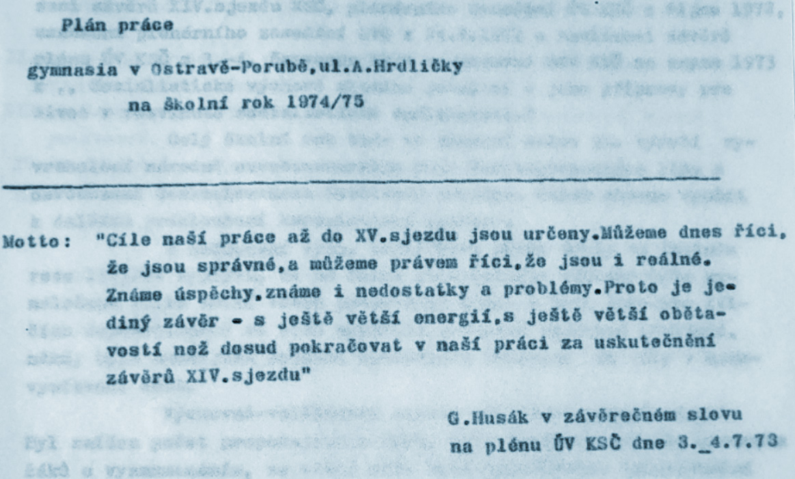
Jaromír Balcar. On na mě zkrátka působí jako paní Columbová, jestli mi rozumíte.
Nezdařil To víte, že rozumím. Těch 69 dílů s detektivem Columbem přímo miluju, ale dnešní generace třeba netuší, o čem mluvíte.
Měrka Paní Columbová, jak to jen mladým vysvětlit? Představte si influencera, který má miliony lajků, a přesto nikdy neukázal svůj obličej, nikde nenajdete jeho fotku a nikdo vlastně neví, jestli vůbec existuje.
Nezdařil Takže vlastně něco jako Bielefeld.
Měrka Bielefeld? Teď vám asi nerozumím. Co ten s tím má společného?
Nezdařil Ale nic, to je jenom takový fór, který se už od devadesátek šíří německým internetem. Říká se tomu Bielefeldverschwörung, neboli „Bielefeldské spiknutí“. Celý vtip spočívá v tom, že je existence tohoto města označována za propracovaný komplot elit či chcete-li konspirační teorií. No řekněte, byl jste někdy v Bielefeldu? Znáte odtamtud někoho? Nebo ještě lépe – potkal jste už vůbec někoho, kdo by Bielefeld osobně navštívil?
Měrka No… to ne.
Nezdařil Tak vidíte. Ale zpátky k panu Balcarovi. Máme evidentně co do činění s ředitelem tajemným jako hrad v Karpatech. A víte, že mi to až zase tak nevadí? Řešení podobných záhad totiž tak trochu patří k mým koníčkům. Pojděte, pokusíme se tu oponu jeho tajemství nějak poodhrnout.
Měrka Obávám se, že v tomto případě moc úspěšní nebudeme.
Kdyby psal vlastnoručně alespoň školní kroniku, tak jako jeho předchůdci, mohl bych ji analyzovat. Textová syntax dokáže leccos napovědět.
Nezdařil Tak se chytíme třeba ikonografického materiálu. Jak vlastně vypadal? Rychle, nalistujte nějakou fotku pedagogického sboru. Mám zkušenost, že šéfy škol najdete v první řadě uprostřed.
Měrka Pár fotografií jsem prozkoumal a našel na nich všechny vyučující, zástupce, s jedinou výjimkou.
Nezdařil Aha. S výjimkou Jaromíra Balcara, co? To jsem si mohl myslet. Ale přece to nemůžeme jenom tak snadno vzdát. Neříkejte mi, že jsme beznadějně uvízli na mělčině a nemáme se vůbec o co opřít. To bychom totiž narazili na tzv. temné období, tedy na něco, co všichni historikové z duše nenávidí.
Měrka Temné období, pojmenoval jste to docela přesně. Ale nebojte se, však já to taky nevzdal a kontaktoval jsem další pamětníky.
Nezdařil A zjistil jste, že si nikdo na nic nepamatuje, co?
Měrka Zjistil jsem, že pan Balcar byl typem ředitele, který trávil skoro všechen čas ve své pracovně a téměř nikdy nevyrážel takříkajíc do terénu. Dveře ředitelny bývaly vždy pevně zavřené: Po rajónu své školy se neprocházel, hospitacemi své pedagogy neobtěžoval.
Nezdařil Takovou nehospitační činnost by dnes mnozí brali všemi deseti. Ale ta jeho historická nezachytitelnost je opravdu zarážející. Tím spíš, že jsem na začátku kapitoly vymezil jeho ředitelování léty 1973–1990, což činí plných 17 let. To je v případě Wigymu absolutní rekord, který jen tak někdo nepřekoná.
Měrka Jen to řekněte, že vám délkou panování připomíná Františka Josefa I.? Sedmnáct ředitelských let Balcarových nemůžeme samozřejmě srovnávat s 68 lety panování císaře rakouského. Ale něco mají ti dva společného: ztělesňovali celou dějinnou epochu. Epochu, ve které se zdánlivě nic významného nedělo, státní systém vypadal jako monolit, a pak přišel tektonický zlom. Během krátké chvíle se všechno sesypalo. A ještě jedna paralela mě napadla. Balcar, stejně jako Jeho Apoštolské Veličenstvo, se cítil nejlépe ve své pracovně. Na levé straně pracovního stolu lejstra vyřízená, na pravé nevyřízená.
Nezdařil Nebylo to naopak? Ale já obdivuji každého úředníka, který rozumí své profesi, dokáže vyplňovat tabulky, dotazníky a zvedat telefony. Já to tak nesnáším! To všechno pan Balcar dělal s potěšením?
Měrka Běžnou agendu školy ponechával zástupcům, jeho prací byla komunikace s řídícími orgány KNV, KV KSČ. On by takový PR komunistický manažer.
Nezdařil Možná to bude znít směšně, ale škola, která nechtěla mít nahoře problémy, přesně někoho takového potřebovala, ne?
Měrka Dovolte, abych citoval slova pamětníka té doby, Petra Poláška. Maturoval ve třídě 4. D v roce 1975 a výměnu na ředitelském postu v roce 1973 nesl těžce: „Jen prosím, abyste tam napsali pravdu o Lubojackém, byl super. Dokud tam byl, vůbec jsme nevěděli, že je normalizace. Balcar, to bylo zlé.“
Nezdařil Oceňuju vaši práci s pamětníky. Ale je to už přes půlstoletí, co když se ten pamětník mýlí, a všechno bylo jinak? Znáte ten výrok připisovaný Vilému Prečanovi „lže jako pamětník“?
Měrka Pane kolego, Petr Polášek není jen absolvent, ale také náš bývalý kolega. V devadesátkách u nás učil němčinu. Jeho svědectví bych nezpochybňoval. Navíc jsem od něho obdržel krásnou fotku z roku 1971 nebo 1972. Je na ní zpodobněn se dvěma spolužáky před budovou školy na ulici A. Hrdličky. Račte si ji nalistovat a prohlédnout. Povšiml jste si něčeho?
Nezdařil Počkejte, tohle že je fotka z dob československé normalizace? Tohle že jsou studenti gymnázia? Vždyť ty dlouhé vlasy byly tehdejší optikou vnímány jako import kapitalistického západu, záležitost nehygienická a neestetická. Ti tři jsou, dobovou terminologií
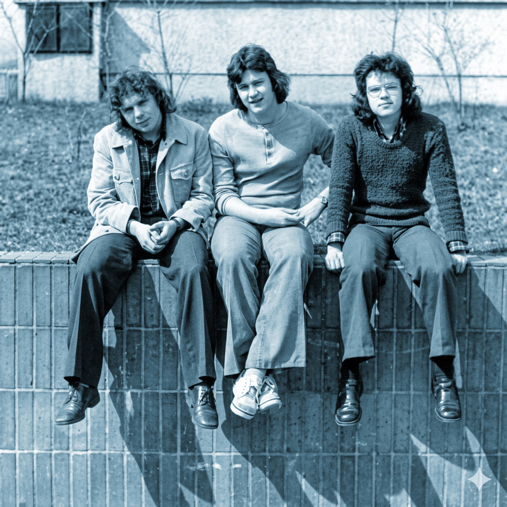
řečeno, odpudivé máničky. „Kdo máš dlouhý vlas, nechoď mezi nás“, jak se tehdy říkalo.
Měrka Máte pravdu, že nástup normalizace přinesl éru postřižin. Nikoliv Hrabalových, ale Husákových a bohužel také Balcarových.
Nezdařil To ostatně ale nebylo nic nového. Dlouhovlasá, nonkonformní mládež existovala jak za protektorátu, tak v letech 50., ale i v letech 70. a 80. Psal jsem o tom ostatně svou rigorózní práci. Má 253 stran. Víte, kdo to byly potápky?
Měrka Ano, ano, jste moc šikovný, ale vraťme se raději zpátky k panu Balcarovi. Slíbili jsme si, že se nebudeme do nikoho navážet, tedy ani do něj. Ale to, co ještě s vypětím všech sil Lubojacký zadržoval, mělo do školy naplno vstoupit právě v časech Balcaro vých. Není třeba pochybovat, že tlak na tehdejší ředitele musel být enormní. Ale ani on nebyl postavou jednorozměrnou. Zatímco na jedné straně vykazoval značnou loajalitu, na druhé straně vím, že i on se občas dostával do konfliktů s „věrchuškou“. Jestlipak tušíte, podle jakých kritérií byla práce ředitele posuzována?
Nezdařil Podle počtů absolventů přijatých na vysokou školu? To asi ne. Podle úspěchů v soutěži „Co víš o Sovětském svazu”? Za choreo v prvomájovém průvodu? Nebo snad byl rozhodující počet studentů zapojených do Svazu československo-sovětského přátelství?
Měrka Samá voda. Já vám to prozradím, protože byste na to sám nikdy nepřišel. Víte, co to bylo směrné číslo? To byla povinná kvóta, která zavazovala gymnázia a střední školy dodat každoročně určitý počet maturantů na vojenské VŠ. V této náborové kampani se ředitel musel sám osobně angažovat. Zval si studenty jednotlivě do své pracovny a snažil se je přesvědčit, aby takříkajíc navlíkli zelenou.
Nezdařil To mi připomíná povídku Šimka a Grossmanna „Jak jsem si volil povolání“. Tam se ovšem jednalo o nábor do dolů. Já vám kousek ocituji, můžu? „Jednoho dne ráno po zvonění vstoupil do třídy učitel Kotek, pohladil mě po temeni a šeptl: »Přijedou soudruzi z Ostravy pozvat tě mezi sebe. Mnoho štěstí,« a ukápl mi velkou slzu na žákovskou knížku. Dveře se otevřely, vstoupil ředitel, za ním pak tři havíři se čtyřmi kahany a začali nám vyprávět o sluníčku a krásách přírody. Několik minut hovořili o Tatrách, pak v myšlenkách zalétli na Dubrovník a nakonec se jako by mimochodem zeptali, kdo z nás se půjde učit horníkem. Nikdo nezvedl ruku. Pouze já jsem povstal a otevřel ústa k řeči. Pan učitel mě zarazil, ohlédl se na ředitele a sykl: ‚To je moje dílo, pane řediteli. Doufám, že nyní si mé práce povšimnete a osvobodíte mne od ponižující dřiny na školním pozemku. Nenávidím rýč a krtky!‘“
Měrka Poslyšte, to je výborná satira.
Nezdařil Viďte? A jak se vlastně řediteli dařilo naplňovat řady československé lidové armády?
Měrka Jak kdy. Ve školním roce 1979/80 se například směrné číslo naplnit nepodařilo, protože se nenašel jediný zájemce. V následujícím školním roce se už ale na ředitele usmálo štěstí: podařilo se získat hned tři zájemce o studium na VVŠ.
Nezdařil Z nuly na tři? To je výrazné zlepšení, pan ředitel to jistě poznal na prémiích.
Měrka Pro ředitele musela být ta směrná čísla noční můrou. Jednoho roku to mělo dokonce skončit pořádným průšvihem.
Nezdařil Co horšího, než nenaplnění směrného čísla mohlo ředitele potkat?
Měrka Došlo k tomu v roce, kdy zemřel Leonid Iljič Brežněv.
Nezdařil Vy mě zase zkoušíte? V roce 1982.
Měrka Správně. V tomto roce se Rudá planeta spolu s pěticípými hvězdami v souhvězdí Srpu a kladiva dostaly do nešťastné konstelace s padesátkou hvězd na americké vlajce. Betlémská hvězda navíc vstoupila do 10. domu. Tohoto roku pan Balcar opět žádného studenta vojenské vysoké školy neulovil. A co hůř, jeden z absolventů podal přihlášku na teologickou fakultu, kam byl také přijat.
Nezdařil To je výborná historka. Dokážu si ředitele představit, jak zvedá sluchátko červeného telefonu a na druhé straně je sám rozlícený tajemník Severomoravského krajského výboru KSČ Miroslav Mamula: „Soudruhu, k…a, co dělají ti tvoji učitelé v oblasti ateistické výchovy? Směrné číslo jste nenaplnili. Proboha, soudruhu, co tam děláte? Vyvodím z toho nejpřísnější závěry.“
Měrka Nepochybuji o tom, že nějak podobně to probíhalo. Ale průšvihy podobného typu nemohl ani sebeuvědomělejší ředitel odvrátit. Znáte tu historku o The Plastic People of the Universe na naší škole? Já jsem ji slyšel od pamětníků mnohokrát v nejrůznějších verzích.
Nezdařil Vy mi chcete namlu vit, že undergroundová kapela PPU hrála v tělocvičně našeho gymnázia? Nebo se ředitel Jaromír Balcar obrátil na Ivana Magora Jirouse, aby Plastici na půdě uspořádali výchovný koncert pro mládež? To bych tedy chtěl toho pamětníka, co vám tohle nabulíkoval, osobně potkat. Proti němu by byl vzorem historické uměřenosti i Václav Hájek z Libočan.
Měrka Ale ne, ta historka vlastně ani nesouvisí s hudbou, nýbrž s kondolenčními archy. Léta 1982–1985 byla v Sovětském svazu érou velkých státních funusů. S nostalgií vzpomínám, jak tehdy odcházeli…
Nezdařil Brežněv, Andropov, Černěnko. Generální tajemníci KSSS tehdy padali jak mouchy v továrně na biolit. Ale jak to souvisí s Plastiky?
Měrka Hned se k tomu dostanu. Ve vestibulu naší školy potřikrát visel portrét zesnulého a studenti byli vybízeni, aby se v doprovodu vyučujícího dostavili po jednotlivých třídách stvrdit svůj hluboký zármutek podpisem do kondolenčního archu.
Nezdařil Dokážu si představit ty tehdejší články v novinách: „Žáci gymnázia na Thälmannově ulici spontánně projevili svou soustrast s odchodem velkého syna sovětského lidu a neúnavného obránce světového míru.“
Měrka Pane kolego, všechna čest, vy byste mohl psát úvodníky do Rudého práva Anno Domini 1982. No a při jedné z těch smutečních tryzen se kdosi ze studentů do kondolenčního archu podepsal jako PLASTIC PEOPLE OF THE UNIVERSE. Tlustou fixou!
Nezdařil Z dnešního hlediska skvělý fór, ale předpokládám, že se tehdy kondolenční archy posílaly na KV KSČ, takže to hrozilo velkým průšvihem.
Měrka Máte naprostou pravdu. Kdyby se toho tehdy domákla Státní bezpečnost, mohla na našem gymnáziu rozkrýt protistátní organizaci tvořenou učiteli i žáky gymnázia. Židle pod Jaromírem Balcarem by se silně zakymácela.
Nezdařil A jaké to nakonec mělo důsledky?
Měrka Pane kolego, podařilo se mi sehnat autentické svědectví účastníka tohoto střetu. Jmenuje se Balcar.
Nezdařil Jakže? Vy jste se dostal ke vzpomínkám samotného ředitele? A pak že nemáme pořádnou pramennou základnu! To je přeci zásadní průlom.
Měrka Uklidněte se pane kolego. Nejedná se pochopitelně o Jaromíra Balcara, ale o jeho jmenovce Balcara Martina, který maturoval v roce 1986. Jeho svědectví o incidentu v almanachu přinášíme, tak si to račte v rámci samostudia přečíst.
Nezdařil Bez obav, to si nenechám ujít. Ale něco vám řeknu. Dneska ta historka možná působí poněkud směšně, ale tehdy museli mít nahnáno jak kantoři, tak i jejich žáci, natož pak ředitel. Ono to vlastně pěkně koresponduje s obrazem, který jsme prozatím načrtli: role ředitele nebývala v dobách normalizace právě záviděníhodná. Dnešní terminologií bychom řekli, že měl plnit úlohu středního managmentu: musel se tvářit, že souhlasí s příkazy shora a zároveň přesvědčovat ty dole, že jsou tyto správné, žádoucí a proveditelné.
Měrka Tomu se v korporátní hantýrce říká „sandwich management“, tedy řídící článek mezi kladivem shora a kovadlinou zdola. V jedné anekdotě se praví, že takový manager musí fungovat jako transformátor. Shora dostává napětí 100 000 voltů, ale dolů musí pustit právě tolik, aby to nikoho nezabilo.
Nezdařil Zajímalo by mě, nakolik plnil ředitel Balcar tuto roli zodpovědně, a zda se mu někdy povedlo pustil do kantorů takříkajíc plnou voltáž.
Měrka No, jednou k takovéto situaci došlo, jak mi pod podmínkou anonymity prozradil nezávislý zdroj.
Nezdařil Sem s tím. Jestli to bude nějaké obzvláštní pikantérie, možná se i dostaneme na první stranu Seznam Zpráv.
Měrka Pochybuji, že by to dnes někoho z novinářů zajímalo. Podotýkám, že pro následující tvrzení nemám oporu v písemných pramenech, ale jedná se o očité svědectví pamětníka. Něco by se snad dalo dohledat v archivech KV KSČ, ovšem takový masochista zase nejsem. Zkrátka: někdy na přelomu sedmdesátek a osmdesátek dospěl soudruh Miroslav Mamula, tedy krajský tajemník KSČ na Ostravsku a přední normalizátor našeho regionu, k závěru, že Ostrava je rudé město, které půjde příkladem samotné Praze. Vydal proto direktivu požadující, aby studenti při maturitách dbali na patřičný dress code.
Nezdařil Já v tom neshledávám nic závadného a se soudruhem Mamulou bych souhlasil. Nemůžete přece na zkoušku dospělosti dorazit v roztrhané mikině. Ostatně si nepamatuji, že by se někdo takhle k maturitám vyšňořil.
Měrka Nechte mě domluvit. Tím dress codem měla být svazácká košile a svazácká šlajfka, tedy uniforma SSM.
Nezdařil SS mládeže, jak se tehdy říkávalo. Blůzy, odvážně nepodléhající módním vlivům, byly světle modré, kravaty rudé a zdobené logem organizace. Kolikpak mladých soudruhů a soudružek zvedlo tuto hozenou rukavici?
Měrka Několik málo snaživců se sice našlo, ale výsledek bychom mohli označit přímo za fiasko. Proti ředitelské direktivě, respektující přání Miroslava Mamuly, totiž povstala široká lidová fronta maturantů. K rebelii se navíc připojili i jejich rodiče a prarodiče, ať už se rekrutovali z řad proletariátu, rolnictva, či z příslušníků pracující inteligence.
Nezdařil To je hezká revolta. Přijde mi jenom zvláštní, že se lidé dokázali spojit v odporu proti takto marginálním věcem, ale ty podstatnější nechávali jen tak proplouvat kolem bez vážnější reakce.
Měrka Jestli ono to nebude právě tím, že se jednalo o marginálii. Vzpěčovat se svazáckým košilím, to ještě prošlo. Ale přijít někam s transparentem „Soudruha Mamulu plesknout přes papulu“, to byste se rychle se zlou potázal. Mimochodem, snaha o tento maturitní dress code se skutečně nikdy neujala, v 80. letech byla odpískána.
Nezdařil Tak alespoň nějaký úspěch občanské společnosti. Na každý pád se nám pěkně ukázalo, proč byla pozice normalizačního ředitele mnohdy velmi obtížná. Copak o to, že jste nedokázal uspokojit všechny, to ostatně nejde ani dnes a budoucnost na tom nejspíš nic nezmění. Spíše jde o skutečnost, že ať už jste byl ve vztahu s věrchuškou sebeloajálnější, někdy jste ten průšvih zkrátka odvrátit nedokázal.
Měrka To máte pravdu. Každoroční zkouška rudým ohněm začínala pro ředitele vždy na jaře, když maturanti rozmísťovali do výloh obchodů na Lenince, dnes Hlavní třídě, svá maturitní tabla.
Nezdařil Počkejte, co mohlo být zrovna na tomhle tak konfliktního? Tedy samozřejmě chápu, že kdyby se studenti oblékli do roztrhaných režných halen, pomazali si tváře blátem a celé tablo vkusně zarámovali heslem „Sovětský svaz náš vzor“, měla by místní prokuratura žně. Ale tak nějak předpokládám, že maturanti dostali patřičné instrukce, aby zbytečně neprovokovali, tvářili se slušně atd. Další bariéru navíc přirozeně tvořili vedoucí provozoven, v jejichž oknech měla být tabla vystavena. Ti totiž určitě nestáli o žádné problémy a nějaké pokusy o protirežimní satiru by jistě nedopustili. Já bych se toho na místě ředitele nebál.
Měrka Pane kolego, vy nejspíš nechápete, s jakou až inkviziční důkladností byla maturitní tabla zkoumána některými horlivými deprivanty z Leninovy líhně.
Nezdařil Jo takhle to myslíte. Už asi rozumím. Mladí intelektuálové jsou vždy podezřelí z nějaké té rafinované ideové diverze, neboť je to tak nějak jejich třídní přirozenosti, viďte? Samozvaný kapitán Kloss večer natáhnul na rukáv pásku Lidových milicí, do kapsy vložil cvikr spolu s bonzáckým zápisníčkem a statečně vyrazil na obhlídku. Jakoupak měli podobní sémiotici amatéři úspěšnost?
Měrka Podívejte, když se dostatečně snažíte, najdete něco vždycky. A to i v případě, že autor neměl žádnou provokaci v plánu, ba se přímo snažil, aby bylo jeho dílo v tomto ohledu neprůstřelné. Pak už stačilo jen přičinlivě zvednout telefonní aparát a informovat ředitele o výsledcích svého pátrání.
Nezdařil Dovolím si spekulovat, že Alfréd Lubojacký by to zřejmě podobným udavačům rovnou položil, zatímco pan Balcar volil poněkud jinou taktiku: tablo nechal v tichosti odstranit, aby tak předešel jakýmkoliv možným nepříjemnostem.
Měrka V otázce přístupu ředitele Balcara máte úplnou pravdu. Potenciálně nevhodné kousky byly skutečně z výloh promptně odstraňovány, přestože my bychom na nich dnes neshledali vůbec nic závadného. Jistě si dokážete představit, jak to pak muselo na 35 maturantů iritovat, a co si asi pomysleli o režimu, který jim zcenzuroval jejich společné dílo, jehož tvorbou nezřídka strávili mnoho hodin.
Nezdařil Můžeme toto povídání doložit nějakým konkrétním příkladem?
Měrka Stalo se v osmdesátkách. Třída vyrobila vkusné tablo, všichni pěkně oblečeni, žádný punk. Nahoře byly kukačkové hodiny doplněné nápisem: „Je za pět minut dvanáct.“
Nezdařil Čímž nejspíš chtěli studenti naznačit, že se maturity kvapem blíží a jim takříkajíc hoří koudel u zadku.
Měrka A teď to zkuste interpretovat optikou člověka, pro nějž je odhalování protikomunistických jinotajů milovaným koníčkem.
Nezdařil Tak počkejte… V oblečení to nebude, to byste zmínil nějakou anomálii. V samotných studentech nejspíš taky ne, tudíž se bude potřeba zaměřit na ony hodiny. Víte co? Myslím, že to mám! „Soudruhu řediteli, tady na tom vašem tabletu, nebo nástěnce, nebo co to jako má vlastně být, chybí jakoby pět minut do dvanácté. Jak je to myšleno? Jakože někomu zvoní hrana? Co tím chtěli ti vaši darebáci studující za dělnický prachy jako naznačit? Komu jako zvoní? Jako nám? Poctivým komunistům jakože odtikávají poslední minutky? Soudruhu nezahrávej si! Tydlencty semínka kontrarevoluce je třeba vyplít hned v zárodku, jinak se nám to tu rozšíří jak americký brouk! Koukej s tím něco dělat, nebo to poženu vejš! Se soudružským pozdravem míru zdar! Znepokojený milicionář.“
Měrka Myslím, že jste to docela trefil. Další diverzní akci tak bylo zabráněno díky nepolevující bdělosti zástupců porubského lidu.
Nezdařil Poslouchejte, ať byl, jaký byl, on to ten ředitel Balcar opravdu neměl jednoduché.
Měrka To tedy rozhodně neměl.
Ale zase z něj nedělejme mučedníka. Na své židli seděl dobrovolně a mohl z ní kdykoliv odejít.
Nezdařil To jsem taky neměl v úmyslu. Jenom se nám znovu a znovu ukazuje, že ani on nebyl postavou jednorozměrnou. Podařilo se vám o něm zjistit ještě něco dalšího?
Měrka Myslím, že nejlíp se cítil ve své ředitelně, když začal sepisovat mnohostránkový elaborát s názvem „Rozbor výsledků výchovně vzdělávací práce“ nebo „Hodnocení práce školy“ či „Hodnocení stavu mravní výchovy“. V Archivu města jsou takovýchto hlášení uloženy desítky a nepochybuji, že se spolu se svými zástupci ředitel na těchto textech osobně podílel. Jsou to materiály nesmírně nudné, plné dobové frazeologie, ale pro historika nesmírně zajímavé. Musím ale bez špetky ironie uznat, že ta hlášení jsou vypracována naprosto vzorně v souladu s dobovou metodikou. Muselo to zabrat hodiny práce, a přitom je to taková blbost.
Nezdařil No vida, že se vám podařilo získat nějakou písemnost, kterou můžeme panu Balcarovi přisoudit. Zatímco o panu Lubojackém jsme mluvili jako o schopném managerovi, pan Balcar byl spíše než co jiného výkonným úředníkem. Nu i takoví lidé jsou potřeba. Jenom nevím, zda přímo na postu ředitele školy… Ale pojďme dál. Naše předchozí povídání o šéfovi budoucího
Wichterlova gymnázia jsme zakončili vtipnou historkou o „Lubojackého metodě“. Nemáte něco podobně veselého také o řediteli Balcarovi?
Měrka V Archivu města Ostravy jsem našel jeden dotazník, který museli ředitelé vyplňovat. Vrchnost požadovala přesné statistiky týkající se počtu žáků, absence, výchovných opatření, počtu snížených známek z chování…
Nezdařil To mi nepřipadá vůbec vtipné, takovéto statistiky musejí ředitelé odevzdávat i dnes.
Měrka Počkejte, ten fór teprve přijde. Zadavatelé dotazníku chtěli vědět, kolik důtek, kolik podmínečných vyloučení a snížených známek z chování gymnázium udělilo v daném školním roce či jaký byl průměrný prospěch žactva, zvláště pak maturantů. To všechno by se dalo pochopit. Ale součástí dotazníku byl i kvalifikovaný odhad, kolik podmíněných a nepodmíněných vyloučení, popřípadě kázeňských trestů hodlá škola udělit v následujícím období.
Nezdařil V následujícím školním roce? Jako že po něm chtěli, aby si jenom tak tipnul nebo naopak vyslovil socialistický závazek stran dvojek z chování? To jste si vymyslel, že? To přeci nemůže být pravda.
Měrka Kolego, vycházím striktně z historických pramenů. Jak říkával historik Josef Pekař, na ty já jsem velký ras. Domnívám se, že tento dotazník přesně ilustruje mentalitu a uvažování stranických aparátčíků. Když mohli odhady sklizených brambor nebo vyválcovaných profilů odevzdávat zemědělci nebo Vítkovické železárny Klementa Gottwalda, proč by podobná čísla nemohl dodat pan ředitel Balcar?
Nezdařil To je neuvěřitelné. Sociální inženýrství vyhnané až za hranici absurdity. Tím dotazníkem jste mě ale vlastně nejenom šokoval, nýbrž i trochu pobavil. Ani normalizátoři to nemívali lehké a řediteli Balcarovi není co závidět.
Měrka Souhlasím s vámi.
23) Naše poslední stěhování
Nezdařil Pane kolego, co kdybychom se ještě zastavili u našeho posledního stěhování, které z nás, porubských nomádů, konečně učinilo kantorstvo usedlé?
Měrka Souhlasím. Z pedagogických sběračů, kteří své cennosti jako učebnice, pravítka, křídy a houby ukládali do papírových krabic a přenášeli z místa na místo, vyvinula se evolučně kultura pedagogů neolitických. I mohli jsme konečně vybalit didaktické pomůcky z kartónů a směle prohlásit: „Zde zapustíme kořeny své.“
Nezdařil Předpokládám, že si však většina kantorů příštích pár let radši zcela nevybalila, neboť řeči
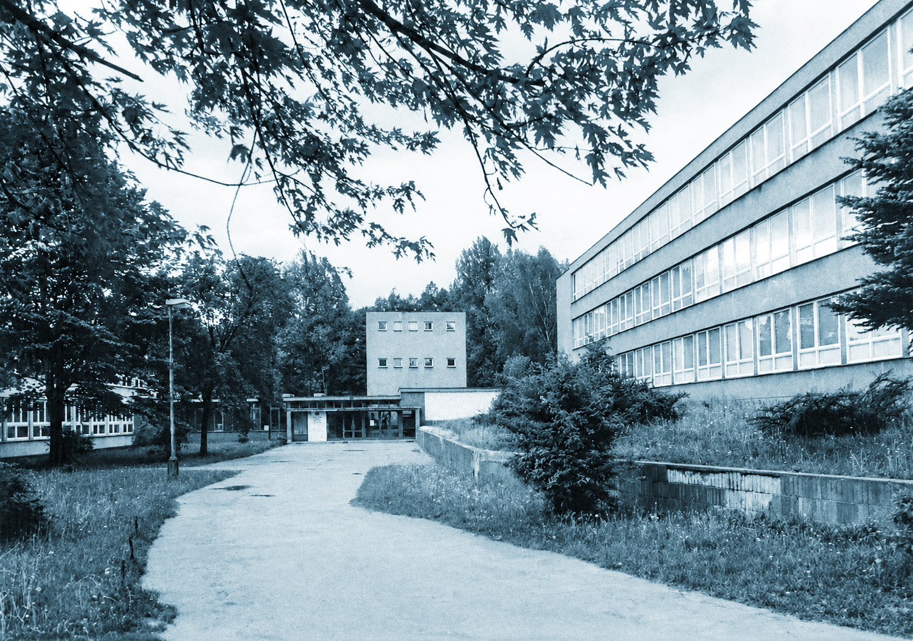
o zapouštění kořenů v souvislosti s naší školou nezazněly poprvé. Ale protože my víme, že na další stěhování již nedošlo, můžeme pokračovat ve vznosném tónu starých kronikářů: „I nastala chvíle, kdy jsme se po patnáctileté diaspoře vrátili do země zaslíbené, totiž do našeho původního domova. Zahodili jsme krabice, stali se mentálními zemědělci a do neorané půdy mladých mozků začali zasévat símě vzdělání. To jsme pak zalévali naší trpělivostí a potem…“
Měrka Pane kolego, vy jste tak patetický, až se mi z toho trošku zamlžily oči. Dovolte, abychom se vrátili ke strohým faktům. Stěhovali jsme se pětkrát. Všimněte si, že jsem ve vaší předchozí hodině dával pozor, a tak hbitě odrecituji všechna naše přechodná bydliště: První adresa Komenského 668, druhá adresa Thälmannova 669, třetí adresa Čkalovova 942, čtvrtá adresa Pokorného 1284, pátá adresa Hrdličky 1638, šestá adresa Thälmannova 669.
Nezdařil Zcela správně, píšu vám za jedna. To mi evokuje Tolkiena: „Wigym, aneb Cesta tam a zase zpátky“. Dokázal byste žactvo donutit k tomu, aby si těch pět adres zapamatovalo?
Měrka Prosím vás, k čemu by to bylo? Vždyť taková znalost se neuplatní ani v AZ–kvízu. Navíc já měl dost starostí s tím, abych si je všechny zapamatoval sám. Protože mi to zpočátku příliš nešlo, vymyslel jsem si na to takovou mnemotechnickou pomůcku.
Nezdařil Jsem zvědav, s čím přijdete. Víte, že si ještě pamatuju jednu takovouto říkanku z chemie? „BĚžela MAGda KAňonem, SRazila BAnán RAmenem.“
Měrka Netušil jsem, že chemici mají také slabost pro dadaismus. Co ta báseň znamená?
Nezdařil To je přece druhá svislá řada kovů alkalických zemin: Be, Mg, Ca, Sr, Ba, Ra.
Měrka Aha. No tak já jsem vymyslel něco podobného: KOmenský TAké ČAsto POtkával HRDého TAtrmana v EXilu
Nezdařil Je mi to jasné: Komenského, Thälmannova. Čkalovova, Pokorného, Hrdličky, Thälmannova, dnes Čs. exilu.
Měrka Přesně tak. A když jsme to tak hezky uvedli, můžeme se pustit do povídání o pátém stěhování našeho ústavu.
Nezdařil Předpokládám, že bychom se mohli odpíchnout od zápisů ve školní kronice. Takovou událost totiž nešlo nechat jenom tak bez povšimnutí.
Měrka Však z ní také budeme vycházet. Dočtete se tam, že k samotnému přestěhování došlo na konci školního roku 1974/75 a bylo to komplikované.
Nezdařil Ani se nedivím. Představa, že by bylo možné všechny ty lavice, skříně a pomůcky nechat například jenom tak odnosit žáky z jedné budovy do druhé, je silně naivní. Vždyť ty baráky dělí nějakých 2,3 kilometru vzdušnou čarou! A pokud bychom se museli držet na zemi, dělá to dokonce přes tři kilometry.
Měrka Váš odhad je naprosto správný. Pouhý přesun z jedné budovy do druhé by nám klidnou chůzí trval jednu vyučovací hodinu. A protože gymnázium nedisponovalo nákladními vozy, musely se o součinnost žádat orgány nadřízené, tedy ObNV a ObVKSČ. Jakmile ale všechny ty Tatrovky, Liazy, valníky, žebřiňáky a kdo ví, co ještě přijely, běželo už všechno jako na drátkách. Koneckonců kantoři byli k tomuto nomádskému způsobu života vycvičeni.
Nezdařil Já se teď nedávno stěhoval z jednoho porubského bytu do druhého. Poněkud tmavší dvojpokoják po dědovi jsem vyměnil za luxusní třípokojový byt po rodičích. Přetahat všechny ty věci byl horor jako od Hitchcocka. Na to konto mě ale napadlo, zda jsme si tím stěhováním vlastně polepšili? A hlavně – proč nás už popáté přesouvali?
Měrka To je otázka, na kterou jsem hledal odpověď také. Školní budova na ulici Aleše Hrdličky našim potřebám v zásadě vyhovovala. Byla to zbrusu nová pavilonová škola trošku připomínající současnou budovu Gymnázia Olgy Havlové. Musel jsem zavrhnout svou původní hypotézu, že příčinou našeho posledního stěhování byla nedostačená kapacita zařízení. V posledním školním roce na Hrdličce jsme měli 572 žáků a jistě by se do ní vešla nejméně jedna další třída.
Nezdařil A navíc, kdyby ta budova kapacitně přestala vyhovovat, jistě by se dala ještě přistavět.
Měrka Přesně tak. Taková přístavba byla mimochodem realizována v pavilónové škole na Gymnáziu Fr. Hajdy v Hrabůvce. Takže příčina stěhování musela být v něčem jiném. Tipl byste si, v čem?
Nezdařil Na vedoucích postech, tedy na Odboru školství KNV se v důsledku čistek obměnila stranická nomenklatura a noví soudruzi se chtěli zapsat do dějin školství nějakou další reformou?
Měrka To byl výborný tip. Ale vážně: já vám napovím, jistě vám to dojde. Zrekapitulujme si naše povídání. Odešli jsme z budovy na ulici Komenského, která pak sloužila základce, odešli jsme z ulice Thälmannovy, odkud nás vypudila další základka…
Nezdařil Myslím, že začínám pomalu chápat. Třetí základkou ve vzdálenosti několika stovek metrů pak byla budova na ulici Gustava Klimenta, kde dneska sídlí Jazykové gymnázium Pavla Tigrida… A teď mi to docvaklo definitivně: populace nejstarších porubských obvodů začala stárnout a tři budovy základek v tak malém prostoru byly nadbytečné, zatímco na „sedmaku“, kde jsme tehdy sídlili, naléhavě potřebovali budovu pro nejmladší žactvo.
Měrka Bingo! Myslím, že jsme úspěšně rozklíčovali záhadu a příčinu našeho posledního stěhování. Ještě vám prozradím, že areál naší staronové budovy skýtal další, prozatím neznámou výhodu, z níž jsme začali těžit až pět let po našem posledním stěhování. Ale dovolte, abych si toto malé tajemství nechal na některou z příštích kapitol.
Nezdařil No prosím. Jen se trochu bojím, abyste to do té doby nezapomněl. Dohledal jste v pramenech, kdy se vlastně myšlenka znovu školu přestěhovat zrodila?
Měrka To už nikdy spolehlivě nezjistíme. Ale něco zajímavého jsem přece jen objevil. Jedná se o Balcarův komentář k čerpání rozpočtu za rok 1974. On zdůvodňuje, proč nevyčerpal prostředky v položce 111.
Nezdařil Komentář k čerpání rozpočtu byl papír, který se posílal na Odbor školství a musel zdůvodňovat všechny investice a vícenáklady, že? Ale co znamená ta tajemná položka 111? To byla nějaká tajná šifra?
Měrka Podle všeho se jednalo o nákup drobného investičního majetku a provádění oprav a údržby školy. Ředitel ty prostředky nevyčerpal a zdůvodňuje to argumentem, který stojí za odcitování. „Protože nebyly provedeny mnohé opravy, nebyl čerpán ani spotřební materiál. Vždyť ani nyní nemáme jistotu, že se naše škola nebude stěhovat.“
Nezdařil „Nemáme jistotu, že se škola nebude stěhovat.“ To je tedy bomba, ředitel o stěhování školy musel něco tušit už v roce 1974 a uvažuje docela rozumně. Nač vrážet čas, energii a peníze do opravy baráku, ze kterého vás možná zase vystrnadí?
Měrka V lednu už pan Balcar skutečně něco tušil, ale neměl ještě nic černé na bílém. Zato my máme jistotu, že myšlenka na stěhování školy se rodila už v roce 1974. Oficiálně se to kantoři gymnázia dozvěděli až na poradě dne 24. května 1975. Opět cituji: „Ředitel seznámil přítomné s rozhodnutím o přestěhování školy. Škola se přestěhuje na Thälmannovu ulici tak, aby výuka od 1. 9. mohla být zahájena na novém působišti.“
Nezdařil Pane kolego, já mám tu scénu našeho posledního stěhování přímo před očima. Naši dávní předkové, conquistadoři, kteří pro nás v lítých bojích zabírají nová území. Nebo spíš staronová.
Měrka Já to zase vidím jako bitvu na Helmově žlebu, když už jste zmínil toho Tolkiena. Zbytky poražené armády základní školy se stahují z hlavní budovy přes hřiště a prchají dvorky soukromých domků na Hradčanech.
Nezdařil Poslyšte, když už jsme u těch armád, povedlo se někdy naší škole prolomit magickou hranici 1000 studentů?
Měrka Přesné statistiky přenechme kolegům v roce 2036, kteří na to budou mít nástroje vyšší generace AI. Zkoumal jsem to postaru a došel k závěru, že maximální kapacita školy byla něco málo přes 800. V roce 1980 jsme měli 23 tříd a 824 studentů, což je pravděpodobně historické maximum. Odpověď tedy zní – tisícovku jsme nikdy nedali.
Nezdařil To je škoda. Ale tak aspoň máme před sebou ještě nějaké mety. Chce to jenom přistavět patro a…
Měrka …a internovat všechny památkáře, kteří nám po oznámení podobného plánu nepochybně zahájí protestní hladovku přímo ve vestibulu.
Nezdařil To je dobrý nápad. Jak by se zachoval Martin Strakoš, absolvent naší školy, ale také historik architektury a památkář?
Měrka To by mě také docela zajímalo.
24) Procházka školou na přelomu 70. a 80. let
Nezdařil Pane kolego, jak ta naše budova někdy kolem roku 1980 vlastně vypadala? Co bychom viděli, kdybychom do ní měli tehdy možnost vstoupit?
Měrka Máme obrovské štěstí, zrovna jsem objevil škvíru v časoprostoru, kterou se můžeme protáhnout do minulosti.
Nezdařil Už ji vidím, tak seriál Červený trpaslík nelhal – škvíra ve stázi je přímo před námi, račte vstoupit, já popojdu až po vás.
Měrka Už jsme na místě. Pěkně to tu vyfukuje. Jen doufám, že po prohlídce školy najdeme průlez zpátky do současnosti, nerad bych tady uvázl natrvalo. Já jsem ty osmdesátky jednou prožil a o žádné déjà vu nestojím. Na chodníku před školou vidím jméno Johna Lennona. Je napsáno křídou, někdo se ho snažil smazat. Myslím, že jsme se přenesli do prosince 1980 a stojíme přímo před školní budovou na Thälmannově ulici. Co vidíte?
Nezdařil Já především slyším školní zvonek. Je přesně 7:50. Zvoní na první hodinu, a to je první zajímavé zjištění. Na naší škole se vyučování zahajuje deset minut před osmou i v roce 1980. No, ale vidím, že exteriér budovy se do roku 2026 příliš nezmění. Ostatně bude památkově chráněna, takže polystyrénového zateplení či výstavbě vkusných lodžií zůstane ušetřena. Zaostřuji svůj zrak na průčelí. Počkejte… Už to mám. Vidím ceduli GYMNASIUM a stříbrného dvouocasého lva se slovenským znakem na hrudi, kde červený oheň v modrém poli připomíná Sloven ské národní povstání. Vidím i tu pěticípou hvězdu levitující lvovi nad hlavou.
Měrka To je docela výstižný popis heraldicky zpackaného státního znaku z roku 1960. Ale neztrácejme čas. Vstupujeme do vestibulu a v průčelí mezi dvěma dveřmi, jimiž se vchází na hřiště, vidíte co? Zamlžily se mi brýle.
Nezdařil Vidím, vidím bustu velikou, jejíž předloha rudých hvězd se dotýká. Marx, Engels, Beatles, to je můj rytmus.
Měrka Ani Marx, ani Engels, natožpak Lennon. Nápověda jest na soklu – KG. Vám to nic neříká?
Nezdařil Ale to víte, že ano. Kdo kdy viděl Marxe nebo Engelse oholeného? Já si jenom zažertoval na účet vašeho oftalmologického handicapu. Shlíží na nás první dělnický prezident, který byl ze Stadic povolán přímo na knížecí, pardon, prezidentský stolec.
Měrka Ne ze Stadic, ale z Dědic, ale vidíte dobře. Průčelí vestibulu vévodí Klement Gottwald.
Nezdařil Když si představíte, že první, koho při příchodu do školy spatříte, je Gottwald… Já bych z toho měl depresi celé pondělí. A to se jinak do práce těším! Viděl jste třeba někdy tu zeleně brčálovou stokorunu s Klémou? To vám byla taková ohavnost, že… Víte co, ať to trošku odlehčíme. Chcete si poslechnout jednu veselou historku spojenou s Klementovou bustou?
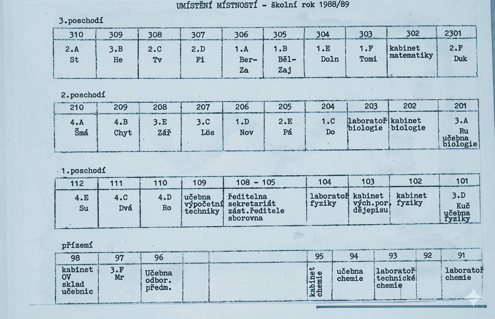
Měrka Na mě ten vestibul taky působí ponuře. Jako obřadní síň krematoria. Tak sem s ní, rád se pobavím.
Nezdařil Pamětníci mi prozradili, že jednoho nejmenovaného dne kdosi na podstavec busty připsal před iniciály KG číslovku 1.
Měrka Závaží o hmotnosti 1 KG. To je výborné. Připomíná mi to legendární scénu ze hry Caesar Voskovce a Wericha, kde jednu postavu zavřou do vězení za jedno jediné slovo napsané na zeď. Papulus totiž za jméno BRUTUS doplnil slůvko KRADE. Předpokládám, že pachatel nebyl nikdy odhalen. Pane kolego, kde je ta busta teď? Nenašli bychom ji někde ve skladu? Rád bych si ten jeden kilogram potěžkal a pohlédl do té oduševnělé tváře.
Nezdařil Podle mých informa cí byl BRUTUS, pardon, KLÉMA, odcizen. Mělo se tak stát v době sametové revoluce, kdy jedna z kolegyň Gottwalda takto originálně detronizovala. Podle důvěrných zdrojů se jednalo o profesorku E. K., která si vyčíhala okamžik, kdy byl vestibul liduprázdný, a odnesla si státníka jako trofej domů. Prý pak dlouhou dobu zdobíval krbovou římsu na její chalupě.
Měrka To je výborná historka. Kolegyně musela mít smysl pro humor. Dokážu si představit, že bych v té době mohl něco podobného také spáchat. Zatímco František Ferdinand d’Este měl na Konopišti hromady loveckých trofejí, já bych měl doma Gottwalda. Asi bych ho umístil do svého příbytku úlevy, kam si občas chodím odpočinout od radostí rodinného života. Pane kolego, co kdybychom teď oba pohlédli vlevo, pod schodištěm je takový malý výklenek jako stvořený pro výstavku výtvarných prací. Jednou tam bude třeba Ladův Betlém, o Velikonocích pak zase vajíčka a na zeleném osení budou skotačit zajíčci. Co tam vidíte teď?
Nezdařil Vidím, vidím bustu velikou, že by další státník?
Měrka Uhodl jste to přesně. Druhá busta patří Vladimíru Iljiči Leninovi. A nad ní heslo: „Lenin teď víc než dřív žije a bude žít, jsa naším vědomím, silou a zbraní“.
Nezdařil To heslo vymyslel ředitel školy Balcar?
Měrka To je verš z Majakovského, ale nechtějte, abych vám tady dělal přednášku o ruském futurismu.
Nezdařil Sémantický obsah této výzdoby je mi zřejmý. Je to poselství adresované všem příchozím, že je na nás spolehnutí, je to štít, kterým se gymnázium alespoň částečně kryje před rozmary komunistických inkvizitorů.
Měrka To jste řekl moc pěkně, ostatně k podobným závěrům došel i Václav Havel v Moci bezmocných. Nuž, postupujme školou dál. Tím úzkým schodištěm nemůžeme. Je to schodiště učitelské, vyhrazené toliko členům pedagogického sboru. Studentům je přísně zapovězeno tudy procházet. Vydejme se proto po schodech vlevo.
Nezdařil Tak tady v roce 2026 budou sídlit výtvarkáři. Počkejte na chvíli, já přečtu cedulky na kabinetu a zjistím, kdo tu uměnu v roce 1980 učí. Ale co to, šálí mě zrak?
Měrka Žádnou výtvarnou výchovu tady nenajdete, tady sídlí kabinet a učebna odborných předmětů. Zkratku ZVOP vám vysvětlím v další kapitole, nemáme času nazbyt. Vezměte za madlo bílých dvojkřídlých dveří. Máme štěstí, někdo je zapomněl zamknout.
Nezdařil Dveře do jídelny se v průběhu výuky zamykaly? Jak se pak žáci dostávali do levé části budovy, když byla jídelna zarýglovaná a na úzké učitelské schodiště nemohli ani vkročit?
Měrka No jak asi? Museli to vzít opačným schodištěm kolem laboratoře chemie. Ale nezdržujte, musíme rychle dál. Jakmile projdeme zmiňovanými dveřmi, můžete si prohlédnout působivou výstavku.
Nezdařil „Sláva hrdinným sovětským partyzánům a osvoboditelům naší vlasti!“ Není to síň tradic? Pokud vím, tu musela mít povinně každá škola. Koukám, že ta naše je věnována Slovenskému národnímu povstání. To bychom se možná mohli vloupat do šaten a někomu tematicky ukrást boty, co říkáte?
Měrka Vy patrně narážíte na komunistického mučedníka Jana Švermu, kterému během povstání jakýsi vykuk odcizil obuv a on pak zahynul při pochodu tatranskou sněhovou bouří.
Nezdařil Přesně tak. Během procesu s vedením protistátního spikleneckého centra chtěli tento zrádný akt přišít Rudolfu Slánskému, ale nakonec z toho sešlo. Poslyšte, pane kolego, nezůstaneme na oběd? Docela mi vyhládlo. Ale teď koukám, že se ten náš refektář poněkud proměnil… Síň tradic je jedna věc, ale kudy se jde k výdejnímu okénku?
Měrka Na oběd nezůstaneme. Já vám to sdělím rovnou, ať to máme za sebou. Místo, kde právě stojíme, to místo žádná jídelna není.
Nezdařil Cože?
Měrka Tak ještě jednou. Tohle jídelna není. A dovolte mi navíc konstatovat, že byste ji nenašel ani na Domečku, ani nikde jinde.
Nezdařil Nevymýšlíte si? No to mi tedy hlava nebere. Ale máte pravdu, teď to vidím. Místo odbočky vedoucí k háčkům na batohy tu máme jenom dvoje dveře, které vedou do normálních učeben! A tady! Podívejte se! Tam, kde máme v roce 2026 přípravnu jídel, je sklad učebnic a kabinet, na kterém visí jména Dušana Martinka a Václava Tvarůžky. No, to není možné. A jak se tady vyučující a studenti potom stravují?
Měrka Ta historie stravování na naší škole je natolik komplikovaná, že s ní možná budou mít potíže i mnozí pamětníci. Protože jsme neměli „zařízení školního stravování“, museli jsme hledat azyl někde poblíž. Jako by se tím opakovala ta naše bludná anabáze po porubských školách. V průběhu let se naši žáci stravovali na Malé Thälmannce, to bylo přes ulici, pak v restauraci Beseda, která sídlila v prostorách dnešní prodejny Hruška. Vyzkoušeli jsme i maminčinu kuchyni na ZŠ Komenského, stejně tak jako obědovou gastronomii Základní školy na Fučíkově, dnes Porubské. Jindy jsme se zase chodili nadlábnout do jídelny na Střední škole Zdeňka Matějčka. Počítám-li dobře, je to celkem pět různých lokací…
Nezdařil Poslyšte, to přeci přesně odpovídá našim pěti adresám.
Měrka Máte dobrý postřeh. Od kolegů vím, že tento systém stravování byl, vančurovsky řečeno, poněkud nešťastný. Nebo spíš přímo jako z nočních můr. Žactvo se totiž muselo do jídelen přemisťovat organizovaně, tedy za asistence pedagogického doprovodu.
Nezdařil To muselo být opravdu výživné. Pane kolego, já vím, že času není nazbyt, ale co kdybychom se ještě šli podívat do našeho kabinetu ve druhém patře? Vím, že je to možná vůči čtenářům trošku sobecké, ale mě by zkrátka nesmírně zajímalo, jak to tam v roce 1980 vypadá. Mám už ten obraz úplně v hlavě. Žádné počítače, ve vzduchu se vznáší vůně starého papíru a oblaka cigaretového kouře, na stole stohy neopravených písemek a hrnky s kafem… Víte, co myslím? Já bych tam jenom tak nakouknul a hned budu zpátky. Co vy na to?
Měrka No, jen si poslužte. Já půjdu hned za vámi.
Nezdařil Tak rychle nahoru. Dvě patra zvládneme jako nic. Ještě pár posledních schodů a jsme tady. Uf. Snad nebude zamčeno. Ale počkejte… no to snad… Vždyť já tady žádný kabinet nevidím! To přeci není možné!
Měrka Uklidněte se, pane kolego. Náš kabinet zkrátka ještě neexistuje. To jste nevěděl? Vznikne až v 90. letech přepažením rohové třídy.
Nezdařil A to jste mi nemohl říct rovnou? Já tu funím jako Kratochvílová a nic z toho.
Měrka Mohl, ale byl bych tím ochuzen o radost ze sledování vašich atletických výkonů. Vždycky když se snažíte pospíchat, klátíte se po chodbách jak hulman. Na každý pád se teď přepněte do poněkud nenápadnějšího modu. Musíme se totiž proplížit ředitelským patrem a nepřipoutat pozornost pana Balcara, který dozajista sedí zavřený ve své pracovně. Já zkusím univerzálem otevřít sborovnu. Snad bude pasovat i v osmdesátkách.
Nezdařil Neuvěřitelné. Ten klíč se opravdu chytá!
Měrka A je otevřeno. Račte laskavě nahlédnout.
Nezdařil Tak to je největší překvapení, já zírám, vy zíráte. Ta sborovna je tak velká, že se do ní vejde klidně celý pedagogický sbor i s technickým personálem. Kam se ta sborovna v roce 2026 poděje?
Měrka Zaberou ji kanceláře Wichterlova gymnázia. V roce 1980 má gympl jenom jednu kancelář a jednu sekretářku. Paní Markovou, která musí stačit na všechnu práci sama.
Nezdařil Sama? Opravdu sama? Jedna jediná ženská? To se mi nějak nezdá. Vždyť dneska jsou na sekretariátu dámy hned tři a nezdá se mi, že by trávily svou pracovní dobu zrovna lakováním nehtů a čtením Cosmopolitanu. Chcete říct, že byla administrativní zátěž v dobách normalizace až o tolik nižší než dnes?
Měrka Byl i nebyla. Jak se zdá, klidné doby přejí byrokracii, která s časem nevyhnutelně nabobtnává. Ministerští úředníci, nemajíce na práci důležitějších věcí, plodí lejstro za lejstrem. Už jenom proto, aby touto činností vzbudili iluzi nepostradatelnosti jejich vlastní pozice. Vždycky se mi v této souvislosti vybaví citát Sira Humphreyho: „Britská státní správa je v podstatě největší a nejúspěšnější charitativní organizací na světě. Zaměstnáváme statisíce lidí, kteří by jinak byli nezaměstnaní a nutili by stát k vyplácení dávek, zatímco my jim místo toho dáváme smysluplnou práci – jako je například sepisování oběžníků o tom, jak snížit počet úředníků.“
Nezdařil To máte asi pravdu. Normalizační zahnívání bylo pro úředního šimla jako stodola plná ovsa. 90. léta sice přinesla určité rozvolnění, ale jakmile se rozbouřené vody uklidnily, začala administrativní zátěž zase růst. Ale že by až tak moc? Vážně, nechtějte mi namluvit, že bylo za Husáka 3× méně papírování.
Měrka Pane kolego, jsem ten poslední, kdo by se stavěl do role obhájce Husákovy normalizace. Abyste pochopil, proč v roce 1980 stačila na hladký chod školy pouhá jedna paní Marková, musíte si uvědomit, že srovnání s rokem 2026 je v zásadě nemožné. Gymnázium totiž tehdy ještě nemělo právní subjektivitu.
Nezdařil Ach tak. No to jste měl říct rovnou. Mnohé úkony, které si dnes škola zajišťuje sama, byly zkrátka v roce 1980 delegovány na nadřízené orgány. Tak proto ten zarážející rozdíl v množství úřednic.
Měrka Přesně tak. Nazval bych to komunistickým outsourcingem. Ale pozor, dávejme bacha… „Houstone, máme problém.“ Právě se otevírají dveře ředitelny. Vidím siluetu, gymnastický krok, to nemůže být nikdo jiný než Jaromír Balcar. A míří přímo k nám. Jak mu odpovíme, až se nás zeptá, co tu pohledáváme?
Nezdařil No po pravdě mu řekneme, že tady pracujeme, totiž budeme pracovat v 21. století.
Měrka Svatá ty prostoto, vy byste mu klidně předal i to naše povídání. Ale my nemůžeme měnit historii, pamatujte si to. Máme kliku, škvíra ve stázi se otevřela přímo před námi, mizíme do roku 2026.
Nezdařil To bylo jen o fous, pane kolego. Škoda, že jsme nestihli návštěvu Domku.
25) Uhelné prázdniny 1979
Měrka Pane kolego, znáte ten starý vtip z doby totáče? Soudruhu, vyjmenujte čtyři největší nepřátele socialistického zřízení.
Nezdařil Wall Street, Vatikán, Svobodná Evropa a Pavel Tigrid. Mám to dobře?
Měrka Chyba. Čtyři nepřátelé socialismu se jmenují: jaro, léto, podzim a zima. V této kapitole si budeme povídat o nezapomenutelné zimě roku 1979, která vešla do dějin jako uhelné prázdniny.
Nezdařil O těch jsem už něco slyšel, ale já si na ně nevzpomínám. Přesně si ovšem vybavuji, jak jste v Archivu města Ostravy jásal, když jste objevil k tématu nějaké zajímavé písemnosti.
Měrka Především, já jsem na rozdíl od vás ten kolaps naší ener getiky v časech reálného socialismu zažil na vlastní kůži. Pamatuji si, že to začalo na Silvestra 1978. Obyvatelstvo ČSSR se chystalo na příchod Nového roku. Neodmyslitelnou součástí tohoto rituálu byl tehdy televizní přijímač. Všichni se těšili na silvestra s Vladimírem Menšíkem. Silvestr hravý i dravý se to jmenovalo. Byla to kaskáda humoru, tance…
Nezdařil Pane kolego, nechci vás rušit ve vašich evokacích, možná jste už měli barevnou televizi a vybavíte si, jakou barvu měly šaty Jiřiny Bohdalové, ale…
Měrka Dobře, přejdu k meritu věci. Nic nenasvědčovalo tomu, co se v noci z 31. prosince 1978 na 1. ledna 1979 mělo stát. V posledním dnu roku 1978 panovala příjemná teplota kolem 10 stupňů. A pak nastal teplotní sešup, jaký nikdo nepamatoval. V některých místech teplota za 24 hodin poklesla až o 30 °C. Chlapi, kteří si dávali vychladit lahváč na balkon, na Nový rok mohli sbírat leda střepy. Pivo v láhvi totiž během několika hodin zamrzlo a explodovalo. Změna počasí byla neočekávaná a neuvěřitelně rychlá.
Nezdařil Doufám, že nás ušetříte meteorologických rozborů. Nechci nic slyšet o výrazném teplotním rozhraní nad střední Evropou. Já bych se chtěl dozvědět, jak se ta kalamita promítla do chodu školy.
Měrka Energetika ČSSR se brzy ocitla na pokraji blackoutu. Z dnešního pohledu je to neuvěřitelné, ale na Ostravsku došlo uhlí. A nejen na Ostravsku.
Nezdařil Cože? Vy chcete říct, že na Sahaře došel písek a v Ostravě nebylo uhlí? Horníkům byla zima a začali stávkovat? O tom jsem nic neslyšel.
Měrka Nikdo nestávkoval. Paradox je v tom, že v Ostravsko-karvinském revíru byly k dispozici přímo haldy vytěženého uhlí, ale přesto nebylo v elektrárnách a teplárnách čím přikládat do kotlů. Uhlí totiž zmrzlo na kámen a nebylo ho možné naložit ani vyložit. A to nebyla jediná komplikace.
Nezdařil To si dokážu představit. Zamrzly vodní cesty, autobusáci ani kamioňáci nenastartovali, protože jim v nádržích ztuhla nafta, bylo ohroženo vytápění bytů, dodávky teplé vody, kolabovala železnice.
Měrka Přesně tak. Abych parafrázoval Karla Marxe: „Československem obcházelo strašidlo, strašidlo blackoutu.“ Sibiřské mrazy totiž měly trvat po celý leden 1979. Bylo nutno udržet v chodu alespoň klíčovou infrastrukturu a odstavit vytápění veřejných místností jako kin, restaurací. A také škol.
Nezdařil Tak, co jste v těch papírech našel? Je tam něco zajímavého?
Měrka Dovolte, abych se pochlubil, v Archivu města Ostravy jsem učinil průlomový objev. Ne nápadný dokument zasunutý mezi stohy zápisů z porad by nepozorný badatel přehlédl, ale já…
Nezdařil Nenapínejte, co jste objevil?
Měrka Všiml jste si, že nenadálé pohromy nebo dějinné střihy nikdy nepřicházejí jako blesk z čistého nebe? Jsou předznamenávány spoustou nenápadných indicií. A já jsem jednu takovou objevil. Je to dokument z 12. prosince 1978 s názvem Politicko-organizační opatření k palivo-energetické situaci. Jedná se o interní směrnici školy signovanou ředitelem, ZV ROH a ZO KSČ. Tímto nařízením se zakazuje v době energetické špičky používat ve škole elektrické přímotopy, meotary a všechny další spotřebiče, včetně vařičů v kabinetech. Nařizuje se i redukce hodin odpoledního vyučování, aby se omezila spotřeba elektrické energie.
Nezdařil To energetické opatření odkrývá ten propastný rozdíl mezi propagandou a realitou. Navenek se všichni tvářili, že závěry sjezdu KSČ plní na 120 %, ale skutečnost byla jiná. Na Ostravsku energeticky náročný těžký průmysl narazil na meze svého růstu.
Měrka Přesně tak. Já se domnívám, že to opatření nevzniklo jako spontánní rozhodnutí našeho gymnázia. Bylo vynuceno shora a museli ho iniciovat odborníci, kteří věděli, jak zranitelná naše energetika je. Ta byla na Ostrav sku na pokraji klinické smrti už na sklonku roku 1978 a Silvestr ji jenom dorazil.
Nezdařil Co jste objevil dalšího? Pochlubte se.
Měrka Ve středu 20. prosince 1978 na pedagogické poradě vydává ředitel Balcar pokyny pro činnost pedagogů v období Vánoc. Školstvím tehdy rezonovala jedna dnes už zapomenutá školní reforma, které jsme se věnovali na jiném místě. Pedagogové si tak měli znovu prostudovat projekt nové školské soustavy, třídní maturitních ročníků měli zpracovat komplexní hodnocení žáků–absolventů.
Nezdařil A po Novém roce se už neučilo, všichni zůstali doma, že?
Měrka Také jsem si to myslel, ale bylo to trochu jinak. Do školy se nastupovalo už v úterý 2. ledna 1979. Dokážu si představit, jak někteří žáci „flexili“, tedy chlubili se, co dostali k Vánocům. Takovým velkým snem byl kazetový magnetofon nebo americké džíny z Tuzexu.
Nezdařil No a ředitel svolal mimořádnou pedagogickou poradu, která měla na programu jediný bod, a to kolaps naší energetiky a jak mu čelit.
Měrka Pravdu máte jen napůl. Porada byla opravdu 2. ledna svolána, ale týkala se docela běžných provozních záležitostí školy. Zástupkyně Kukulková seznámila vyučující s opatřením OŠ SmKNV proti pedikulóze, kolega Strejček informoval vyučující o termínech LVVZ.
Nezdařil Vysvětlím zkratky: Odbor školství Severomoravského krajského výboru, LVVZ jsou lyžařské kurzy a pedikulóza – to je zavšivení.
Měrka Je to docela zvláštní, ale v dějinách se tento jev často opakuje. Na palubě Titaniku se tančí, zatímco do jeho útrob se už žene voda.
Nezdařil Na palubě našeho gymnázia se mají lovit vši, zatímco…
Měrka Zatímco ve velínech našich energetiků musely už tou dobou houkat všechny alarmy. Rozhodnutí uzavřít všechny školy včetně vysokých muselo přijít někdy v pátek 5. ledna. Sobotní Rudé právo pak na první straně přináší docela nenápadnou zprávičku s titulkem Mimořádné školní prázdniny. Konstatuje se v ní, že školy jsou uzavřeny od pondělka 8. ledna, a to prozatím do 14. ledna.
Nezdařil To slovo prozatím nakonec znamenalo skutečně do 14. ledna?
Měrka To slovo prozatím mohlo v dobách reálného socialismu znamenat leccos. Víte, co bylo jednotkou dočasnosti? Jeden furt, to se týkalo dočasného umístění sovětských vojsk v Československu. Mimořádné prázdniny nakonec trvaly celé tři týdny a ukončeny byly dne 29. ledna 1979.
Nezdařil No, když si vzpomenu na dočasné uzavření škol za Covidu… Poslyšte, jak ty mimořádné prázdniny vlastně probíhaly? Přešlo se na distanční výuku, nebo žáci mohli celý měsíc chillovat?
Měrka Distanční výuka v roce 1979? Bez internetu, bez počítačů a bez mobilů? Vždyť tehdy byla luxusem pouhá pevná telefonní stanice.
Nezdařil No, třeba mohl studentům doručovat pracovní listy soudruh pošťák. Druhý den by je kolegové přinesli opravené na poštu, přidali k nim nové zadání a hotovo.
Měrka Poslouchejte, na tohle Československá pošta neměla kapacity ani v případě, že by jí soudruh Brežněv poslal na výpomoc dvě divize Rudé armády. Vaše řešení by generovalo logistické problémy takových rozměrů, že by se z nich zbláznil snad i Santa Claus. Takže nehloupněte a poslouchejte. Objevil jsem totiž ještě jednu perličku. První den mimořádných prázdnin, tedy v pondělí 8. ledna, přineslo Rudé právo celkem humorný úvodník.
Nezdařil Je mi sympatické, že komunističtí funkcionáři dokázali kalamitě čelit humorem. Tak se se mnou podělte. Já vtipy miluji.
Měrka Ten úvodník je myšlen smrtelně vážně, vtipný je tím dobovým kontextem. Titulek úvodníku zní Dětem to nejlepší.
Nezdařil Tak to se povedlo. Oni snad měli ty úvodníky předpřipravené na celý rok dopředu a vůbec je nenapadlo, jak komicky to heslo může vzhledem k situaci působit.
Měrka Ale ptal jste se, zda mládež celý měsíc zahálela. Těžko to rekonstruovat. Videopřehrávače neexistovaly, vysílání Československé televize bylo vzhledem k energetické situaci omezeno, hospody zavřeny. Pokud jste měl brusle, mohl jste s kamarády hrát hokej. Stačilo jen najít nejbližší rybník, „bo bruslak byl všude“. Pan ředitel Balcar na hodnotící poradě konstatoval, že se „žáci zúčastnili odklízení sněhu a pomáhali i na dalších úsecích národního hospodářství“. Zaujalo mě, že si dovolil i lehkou impertinenci vůči kantorům, neboť na stejném místě poznamenal: „Je trochu zarážející, že v tomto období byli žáci aktivnější než mnozí pedagogičtí pracovníci.“
Nezdařil No, ti pedagogičtí pracovníci byli většinou matkami a otci a museli své pedagogické úsilí zaměřit na výchovu vlastního dorostu, jenž zůstal doma. Jak se vlastně zvládla uzavřít klasifikace za 1. pololetí? A netrvalo to pololetí druhé do konce července?
Měrka Všechno se nakonec stihlo. První pololetí bylo ukončeno 14. února, kdy také proběhla hodnotící pololetní porada. Vyučující byli instruováni, aby při klasifi kaci uplatňovali tzv. komplexní hodnocení.
Nezdařil Neboli aby trochu přimhouřili oči a zohledňovali i známky z předešlého období. Rozumím tomu dobře?
Měrka Pochopil jste to správně. Druhé pololetí bylo tedy o něco kratší, ale vše se stihlo do konce června 1979. Klasifikační porada za 2. pololetí proběhla ve standardním termínu 26. června 1979.
Nezdařil Děkuji vám za vzornou práci s písemnými prameny, uhelné prázdniny jste vylíčil docela zajímavě.
Měrka To ovšem zdaleka není konec. Škola sice po 29. lednu začala fungovat, ale vyučovalo se v jakémsi nouzovém režimu. Provoz školských zařízení byl upraven pokynem ministerstva školství, další pokyny vydal OŠ SM KNV. Školy začínaly s vyučováním až v devět hodin. Mělo to pragmatický důvod: Ráno mezi 6:00 a 8:30 docházelo k obrovským špičkám v odběru elektřiny (továrny startovaly provoz, lidé svítili doma), a tak se posunutím provozu škol mělo ulehčit naší energetice.
Nezdařil Dokážu si představit, jaké komplikace to způsobilo: výuka se prodloužila do pozdních odpoledních hodin, žáci nestíhali odpolední kroužky, kolegyně s dětmi řešily problém, jak vyzvednout včas děti ze školky.
Měrka Zásah do chodu školy musel způsobit nevoli jak studentů, tak i kantorů. Jistá rozjitřená atmosféra je zřetelná i ze zápisu z porady z 2. 2. 1979. Profesorka Martinková vyzvala kolegy, aby „byli k sobě tolerantní a neviděli jen své osobní zájmy, ale i zájmy ostatních vyučujících“. Konfliktní situace zřejmě nastávaly v souvislosti s požadavky na úpravu rozvrhů. Ještě jedné věci jsem si povšiml. Víte, že totalitní režimy jsou trošku paranoidní? Že mají pořád pocit, že je někdo nebo něco ohrožuje? Od roku 1979 to nebyli jen „ztroskotanci a samozvanci“ z Charty 77, američtí imperialisté, ale také počasí. Ta paranoia se přenesla i do dalšího školního roku.
Nezdařil Nepřeháníte? Jak jste to poznal?
Měrka K posunutí začátku vyučování totiž došlo i v zimě následujícího školního roku. Vyplývá to ze zápisu z porad, kdy ředitel udílí školnici přísné instrukce nepouštět žáky do školní budovy před 8:45.
Nezdařil Já to vidím jako živý obraz. Houf studentů toužících po vzdělání se dobývá v 7:49 do školní budovy a školnice je smetákem vytlačuje ze dveří.
Měrka Nevím, zda vás to bude zajímat, ale narazil jsem ještě na jeden energetický problém. Čistě soukromý, tedy týkající se pouze naší budovy. Ta, jak víme, byla otevřena v roce 1957 a projektant navrhl na svou dobu velmi progresivní podlahové přímotopy. Budova tedy nebyla vytápěna radiátory, ale topení bylo skryto přímo v podlahách.
Nezdařil Dneska je to docela trendy, ale pokud se do tohoto počinu stavaři pustili už v roce 1957, všechna čest.
Měrka Jenže je v tom háček. Někdy na počátku 80. let dostaly ty přímotopy nějakou trombózu. Ve třetím patře sedávali studenti v zimních bundách, protože topení nefungovalo.
Nezdařil To byla docela havarijní situace. Dokážu si představit, že oprava těch přímotopů by vyžadovala vysekat sbíječkami betonové podlahy ve třídách a hledat příčinu závady.
Měrka Představujete si to dobře. Proto bylo rozhodnuto vzdát se přímotopů a na hlavní budově provést komplexní rekonstrukci. Ta začala v květnu 1982, kdy byla budova osazena radiátory, dále se pokračovalo pracemi na rozvodech, a nakonec byla celá soustava připojena na výměník školy.
Nezdařil Zůstaly po těch přímotopech nějaké stopy?
Měrka Vy jste si nikdy nevšiml těch nepoužívaných ventilů na chodbách školy? Sloužily k odvzdušnění těch původních přímotopů. Kdyby je dnes školník vzal flexou a zarovnal s omítkou, nic by se nestalo. Protože dnes už nikdo netuší, k čemu ty ventily slouží, respektive sloužily, raději je všichni obcházejí s posvátnou úctou. Co kdybyste je vzal rozbrušovačkou a z trubky začala tryskat voda?
Nezdařil Tak, záhada ventilů je rozluštěna. Já kolem nich chodím už asi tak sto let a nikdy jsem nezjistil, k čemu měly sloužit. Studium historie přináší nejedno překvapení.
Měrka Ale není to překvapení poslední. Na paměť uhelných prázdnin byl zaveden jeden rituál, který se udržel dodnes. Dám vám hádanku. „Dvakrát do roka lidi irituji, když rafiky hodin kvůli mně štelují.“ Co to je?
Nezdařil Nějak vám to rytmicky, pane kolego, nesedí, ale vaši hádanku jsem rozlouskl. Je to zavedení letního času.
Měrka Uhádl jste to přesně. Na paměť uhelných prázdnin byl zaveden letní čas. Stalo se tak 1. dubna 1979. To není apríl, to je historický fakt. Studium historie zkrátka přináší nejedno překvapení
26) Zombie Zdeňka Nejedlého aneb Vstali noví bojovníci
Nezdařil Pane kolego, název této kapitoly se mi hrubě nelíbí. Jsem ten poslední, kdo by velebil reálný socialismus, ale přece jen nemůžete srovnávat léta Husákovy normalizace s lety 50. Neujel jste trochu?
Měrka Já vím, ale berte to prostě jako nadsázku. V době normalizace se samozřejmě z politických důvodů nepopravovalo, to víme oba. Ovšem žádná idylka to tedy taky nebyla. Dostat se do báně za své přesvědčení, to jste mohl za Husáka raz dva.
Nezdařil No to bych prosil. Ivan Magor Jirous si ve vězení odkroutil osm a půl roku, Petr Uhl dokonce devět, Václav Havel kolem pěti let.
Měrka Pane kolego, nemusíte argumentovat pražskými disidenty. Pro své politické přesvědčení se za mříže dostali i dva naši ex kolegové. První z nich se jmenoval Jaromír Šavrda. Ten si odseděl více než čtyři roky. Druhý, Vladimír Liberda, ten učil na „experimentu“, byl odsouzen ke dvaceti měsícům nepodmíněně. Ale to jsme poněkud odbočili. Osudům těchto dvou vězňů svědomí jsme se ostatně věnovali v našich předchozích almanaších.
Nezdařil Vy rád odbočujete, proto dovolte, abych opakoval svou otázku. Není to srovnání 50. let s lety 70. a 80. přece jen poněkud přehnané?
Měrka My tady nesepisujeme dějiny poválečného Československa, ale zabýváme se historií našeho gymnázia, potažmo českého školství. Věřte mi, že jsem si to pořádně nastudoval, a jsem pevně přesvědčen, že na přelomu sedmdesátek a osmdesátek došlo k něčemu, co mělo české školství vrhnout o třicet let nazpět. Opravdu, tehdy povstali zombie Zdeňka Nejedlého, kteří našli způsob, jak gymnázia zničit. A také asi posté reformovat celou naši vzdělávací soustavu.
Nezdařil Přepokládám, že podle hesla Sovětský svaz, náš vzor.
Měrka Máte naprostou pravdu. Pane kolego, pokud si to dobře pamatuji, vy jste se narodil v orwellovském roce.
Nezdařil Máte dobrou paměť. Světlo světa jsem skutečně poprvé spatřil Léta Páně 1984. Ale jak to souvisí s reformou vzdělávání?
Měrka Samotný akt vašeho narození s tím pochopitelně nemá nic společného, ale ten rok… To už je jiná. Víte, normalizátoři se na počátku 70. let ještě neodvažovali skokově zasáhnout do chodu českého školství. Už jsme o tom ostatně mluvili – československá společnost zkrátka stále měla v čerstvé paměti srpen 68 a cílem tehdejším mocipánů bylo vášně spíše tlumit, nikoliv je rozjitřovat nějakými nepopulárními veletoči. Jednotlivé změny byly proto zaváděny postupně.
Nezdařil Tomu se tuším říká salámová metoda.
Měrka Nebo také vaření žáby. Nu, a právě v roce vašeho narození, tedy v roce 1984, byl osud československého školství definitivně zpečetěn.
Nezdařil Nepřehánějte, kolego. Obraty jako „definitivně“, „natrvalo“ nebo „na věčné časy“ nutno brát v našem historickém kontextu s rezervou. Předpokládám, že to bylo na pět let, protože po listopadu 1989 ta reforma vzala za své.
Měrka Máte naprostou pravdu, rok 1989 naštěstí úsilí normalizačních reformistů zastavil. Ty škody, které tzv. Projekt napáchal na generaci Husákových dětí, jsou ale nedozírné. Já bych to klidně neváhal zařadit ke zločinům komunismu. Těmi obětmi totiž nebyli jen nepohodlní jednotlivci, ale celé populační ročníky.
Nezdařil Pořád jste mi ovšem neprozradil, co konkrétně mělo v roce 1984 zpečetit osud našeho školství? Už jste něco naznačil, ale myšlenka zůstala nedokončena.
Měrka Možná jsem to explicitně neformuloval, ale hádám, že vy už stejně tušíte.
Nezdařil No, z předchozího toulání dějinami československého školství vím, že ty největší pohromy mají zpravidla podobu zákonů, které někdo schválí, někdo oštempluje a podepíše.
Měrka To je výborná odpověď. Máte vlastně pravdu. Tím přelomem byl Zákon č. 29/1984Sb., který podepsal předseda federální vlády ČSSR…
Nezdařil To byl v roce 1984 Štrougi. Znáte ten vtip o Štrougalo vi, jak jede se svým řidičem a srazí na vesnici prase?
Měrka Znám. O Lubomíru Štrougalovi ostatně kolovala spousta výborných anekdot. Až zas někdy půjdeme na pivo, pár vám jich povím. Teď si ale raději poslechněte pasáž zmiňovaného zákona, která se věnovala gymnáziím. Pozor, začínám. „Gymnázium je všeobecně vzdělávací polytechnickou školou poskytující i odbornou přípravu.“
Nezdařil Cože? Poly… Poly… polygrafická škola? Polyteistická? Já jsem to slovo nepochytil.
Měrka Ne polyteistická a polytechnická. To je rozdíl dost podstatný. Polytechnická a odborná škola znamená, že gymnázia se měla stát takovými hybridními průmyslovkami. Posílení technických předmětů na úkor těch humanitních. Republika nepotřebovala takové hloubavé intelektuály, jako jsme my dva, ona potřebovala nějaké součástky, které by bylo možno okamžitě zapojit do soukolí našeho socialistického hospodářství.
Nezdařil Už to chápu. Proč by taky měl skladník ve šroubárně umět číst Vergilia v originále, že? Co by si s tím taky počal?
Měrka Přesně jste to pojmenoval. Výtvarná a hudební výchova, stejně jako latina a další humanitní předměty, šly do útlumu. Přednost měla výuka ZVOP. Ale k tomu se teprve dostaneme. Já vám ještě do čtu tu pasáž o gymnáziích, jo? Tak poslouchejte. Kde jsem to skončil: „Polytechnická škola. Připravuje ke studiu na vysokých školách (…) včetně povolání dělnických.“
Nezdařil To není možné, tomu nevěřím, to jste si vymyslel. Gymnázium má připravovat frézaře, skladníky nebo svářeče?
Měrka Ale ano. Cílem nejspíš bylo smazat rozdíly mezi gymnázii a odbornými školami. Maturant, který nenastoupil k vysokoškolskému studiu, měl být okamžitě upotřebitelný ve výrobní praxi. Naopak intelektuál, řekněme budoucí medik, se měl v rámci polytechnické výuky seznámit i s prací manuální, aby k ní necítil odpor a dokázal ocenit i práci vládnoucího proletariátu.
Nezdařil Dobře to měli vymyšleno. Jednu věc musím uznat: komunisté správně tušili, že by s plošným zrušením gymnázií, jak to udělal dědek Nejedlý v roce 1953, asi nepochodili, a tak to zkusili jinak. Nepozorovaně, pomalu a konečným výsledkem měla být transformace gymnázií na polytechnické školy. To by tak hrálo studovat literaturu, filozofii nebo jiné neproduktivní obory, které jsou dobré leda tak k tomu, aby jimi mrhali čas synci z buržoazních líhní kontrarevoluce. Jen pěkně ke strojům a k soustruhům! Poslyšte, to opravdu připomíná padesátá léta. Hned jsem si vzpomněl na kampaň, která pod heslem „povaleči z kaváren, do polí a továren“ útočila na tehdejší intelektuály a úředníky.
Měrka To máte tedy pravdu. Ale pozor! Onen zákon se netýkal pouze gymnázií, nýbrž dopadl na vzdělávací systém jako celek. Další jeho obětí se staly například devítiletky.
Nezdařil A víte, že mě to ani nepřekvapuje? Koncepce základního vzdělávání se v téhle zemi zkrátka měnila jak svatí na orloji. Do čtyřicátého osmého národky a měšťanky, od roku 1953 osmileté střední školy, po reformě roku 1960 základní devítileté školy… Co přišlo tentokrát? Ne, nechtě mě hádat. Že ona se znovu vrátila éra osmiletek?
Měrka Zásah, potopeno. Uhádl jste to naprosto přesně. Já vám to přečtu. V zákoně se praví: „Základní škola má osm ročníků; ročníky první až čtvrtý tvoří první stupeň základní školy, ročníky pátý až osmý druhý stupeň základní školy.“
Nezdařil Pane kolego, omlouvám se vám. Zpočátku jsem si opravdu myslel, že to vaše srovnání 50. a 80. let kulhá na obě nohy. Ale máte pravdu. Osmiletky místo devítiletek, devalvace gymnázií zakotvená v zákoně z roku 1984, to je opravdu návrat do padesátek. O tom prostě nemůže být sporu.
Měrka Je to smutná tečka za liberálními 60. lety, jež přinesla do československého školství řadu pozitivních změn. Mezi ně počítám právě zmiňované zřízení základních devítiletých škol a znovuobnovení gymnázií. V rámci snahy o „normalizaci poměrů v naší zemi“ však bylo nutné tyto reformy zaříznout. Pokud rokem nula budeme nazývat rok 1968, musíme konstatovat, že to trvalo dlouhých 16 let.
Nezdařil Ještě jedna věc mě napadla. Chápu dobře, že zřízením osmiletek žáci vykonávali povinnou docházku jen osm let místo dřívějších devíti?
Měrka Ne, nemáte pravdu. To je další zajímavá věc. Na jedné straně máme osmiletky, ale povinné vzdělání bylo desetileté. Cituji vám zase literu zákona: „Povinná školní docházka trvá deset let. Žáci ji plní v základní škole a v prvním a druhém ročníku střední školy.“ Což vlastně znamená, že žáci našeho gymnázia studiem v 1. a 2. ročníku teprve dovršovali základní desetiletou docházku.
Nezdařil Ten školní rok 1984/85 musel znamenat pedagogický armageddon i pro naši školu. Teprve teď mi to došlo. Nastoupili k nám ne jeden ročník, ale ročníky dva. Poslední absolventi devítek a žáci osmých tříd, protože základky musely povinně zrušit deváté třídy. To muselo být peklo.
Měrka Vidíte, na to jsem se pamětníků zapomněl zeptat, ale leccos o tom lze dohledat ve školní kronice. Tam najdete opravdu perly. Jedna je ze školního roku
1984/1985. Kronikářka nemohla samozřejmě napsat, co si pedagogové o nové koncepci myslí, a tak to zaznamenala velmi opatrně: „U mnohých vyučujících se projevila nedůvěra v účinnost nové koncepce. Tato nedůvěra byla posilována i nejednotným výkladem Projektu a rozpornými názory lektorů při přípravě podle jednotlivých předmětů.“
Nezdařil To je opravdu krásný eufemismus. Dokážu si velmi živě představit tu frustraci pedagogů, když někdo do jejich práce hází vidle. Ale já jsem se ptal na ta děcka, která k nám nastupovala z osmých tříd. Nechyběla jim ta devítka? Nemuseli učitelé během jednoho roku odučit učivo deváté třídy ZŠ a zároveň prvního ročníku čtyřletého gymnázia?
Měrka V kronice o tom najdete několik poznámek. Učitelé to řešili na poradách, někteří absolvovali školení zaměřená právě na tuto problematiku. V následujícím školním roce 1985/86, kdy se podle nové koncepce učili žáci 1. a 2. ročníků, se v kronice dočteme, že „numerické výpočty jsou slabinou“ a „někteří žáci mají problém s formulováním myšlenek“.
Nezdařil Jinými slovy plavali v matice a neuměli se vyjadřovat na úrovni odpovídající studentům gymnázia. Kdybych měl být zcela upřímný, jedinec s takovýmto hendikepem se u nás vyskytne občas i dnes. Ale zatímco nyní je to spíše v důsledku přijímačkové loterie, kdy statisticky zanedbatelné procento uchazečů prokáže mimořádně šťastnou ruku při náhodném tipu správných odpovědí, tehdy šlo ponejvíce o selhání systému vzdělávání. Vy ale jste naznačoval, že rok 1984 byl až završením normalizačního vývoje školství. Kdy a čím to vlastně začalo?
Měrka Začátek by se dal hledat v polovině 70. let. Právě tehdy spatřila světlo světa koncepce nazvaná Další rozvoj československé vzdělávací soustavy.
Nezdařil Předpokládám, že v kabinetech či kuloárech se používalo poněkud méně kostrbaté, a především kratší označení. Mám hádat?
Měrka Tuším, co se vám teď honí hlavou, takže raději ne. Ale jinak máte pravdu. V běžném kantorském slangu se mluvilo o Projektu nebo Nové koncepci.
Nezdařil Já bych to spíš na základě již řečeného nazval Nová antikoncepce. Jejím hlavním, i když nevyřčeným, cílem bylo zamezit, aby školství zrodilo samostatně myslící bytosti…
Měrka Nebo intelektuály, kteří by, stejně jako v roce 1968, dali do pohybu nějakou další „kontrarevoluci“. Rozhodujícím momentem pro spuštění projektu byl na našem gymnáziu školní rok 1980/81. A teď se vlastně dostáváme ke způsobu, jak měla ta polytechnizace velké
Thälmannky probíhat. Říká vám něco zkratka ZVOP?
Nezdařil Já mám přece ty internety, jak říkával kolega Smolacius. Zjistil jsem, že zkratka ZVOP znamená Zkoušky vloh ovčáckých psů. Smyslem těchto zkoušek je posouzení vloh psa k pasení ovcí. My jsme se měli stát nějakou kynologickou stanicí?
Měrka Kuš Švejku! ZVOP je zkratka Základů výroby a odborné přípravy. Nejedná se přitom o vyučovací předmět, ale o jakýsi balíček technických oborů, které prostupovaly výukou ve všech čtyřech ročnících gymnaziálního studia.
Nezdařil No a co se konkrétně učilo?
Měrka Na našem gymnáziu to vypadalo takto: v prvních dvou ročnících se učil nějaký společný základ, pak už následovala specializace. Žáci volili mezi základy strojírenství, základy technické chemie a základy ekonomiky a organizace.
Nezdařil Tak technickou chemii by naši lučebníci možná zvládli, ale kde vzal gympl strojaře?
Měrka To bylo další úskalí Projektu. Na gymnázium jsme museli nabrat odborníky z ostravských závodů, kteří pak tyto předměty vyučovali.
Nezdařil Předpokládám, že měli pedagogické vzdělání nebo alespoň pedagogické minimum.
Měrka Právě že ne. Do škol sice nastupovali inženýři nabití zkušenostmi z praxe, ale naprosto nepolíbení pedagogikou nebo didaktikou. Já jsem ZVOP zažil na vlastní kůži na gymnáziu v Hrabůvce. Mezi těmi třemi nebo čtyřmi vyučujícími, které jsem poznal, byl jen jeden obdařen přirozeným pedagogickým talentem. On dobře věděl, že z nás, gympláků, žádné stavaře neudělá, a velmi dobře přizpůsobil své hodiny našim limitovaným kognitivním schopnostem. Teoretické pasáže dokázal vždy odlehčit nějakými historkami ze své praxe. My jsme se na ty jeho hodiny těšili. Jednu jeho příhodu si ostatně pamatuju dodnes. Když se stavěl vysílač na Lysé hoře…
Nezdařil Zadržte, nás už tlačí čas a já musím na oběd. Dopovíte mi to na dozoru. Ostatně sám jste zmiňoval, že stavebnictví se na našem gymplu vůbec nevyučovalo. Ale teď mě napadá…jak je to vlastně možné? Jak to, že jste si v Hrabůvce mohl klidně zvolit stavebnictví a u nás studenti takovou možnost neměli? Vždycky mi přišlo, že symbolem normalizace byla spíše glajchšaltizace než snaha o různorodost.
Měrka Hodně záleželo na tom, s jakými výrobními podniky uzavřela gymnázia dohody. V těchto závodech pak vykonávali studenti i oborové praxe. My, tedy velká Thälmannka, jsme spolupracovali například s Moravskými chemický mi závody, závodem 15 Nové huti Klementa Gottwalda a dokonce i se dvěma odbornými školami.
Nezdařil Ach tak. Byla to novinka, pro kterou zatím neexistoval jednotný metodický mustr, natož pak systematická příprava vyučujících, a proto se školy musely postarat samy. Našel jste o tom ZVOPu něco ve školní kronice? Myslím zajímavého.
Měrka Našel jsem kritický komentář z roku 1981. Já to odcituji doslova: „Zavádění nové koncepce má své problémy. Výuka externími pracovníky – vzhledem k potřebám školy – se projevila jako málo efektivní.“
Nezdařil Přesně o tom jste mluvil. Sebelepší znalosti jsou k ničemu, když je neumíte předat. Jak to škola vyřešila?
Měrka Vyřešilo se to tak, že šikovnějším odborníkům byl nabídnut plný pracovní úvazek a možnost doplnění pedagogického vzdělání. Na jaře 1983 se ze ZVOP poprvé maturovalo. A počet těch studentů nebyl právě malý. Bylo to 43 maturantů, kteří si zvolili jeden ze tří předmětů. Výsledky ovšem nebyly příliš uspokojivé: ze základů strojírenství a technické chemie činil průměr kolem 2.5. Abych vám to dal trošku do kontextu, studijní průměr školy činil ve stejném období 1.93. Tlak na maturitu ze ZVOP však během dalšího období přesto stále sílil. Podařilo se mi na příklad zjistit, že v roce 1988 byla maturita ze ZOVP na některých gymnáziích dokonce povinná. To se nám ale naštěstí vyhnulo.
Nezdařil My, humanitní intelektuálové, se k ZVOPu stavíme poměrně negativně. Nejsme ale přece jen trochu zaujatí? Nepřinesla ta reforma naší škole náhodou třeba také něco pozitivního?
Měrka Každá mince má dvě strany, takže nějaká pozitiva bych přece jen našel. Pro potřebu výuky ZVOPu bylo zapotřebí vybudovat odborné učebny. A protože hlavní budova byla plná až k prasknutí, stál před ředitelem nelehký úkol. Kde sehnat další prostory? Uvažovalo se dokonce, že by výuka ZVOPu probíhala na elokovaném pracovišti.
Nezdařil Elokovaném, nebo alokovaném pracovišti?
Měrka Nebudeme se pouštět do lingvistických šarvátek. Jedna z variant počítala s možností, že by studenti docházeli na výuku ZVOPu do nějakých odborných učeben mimo areál naší školy.
Nezdařil To si ani nedokážu představit – ztracené hodiny strávené v dopravních prostředcích. Když si navíc uvědomíte, že se naši studenti stravovali v elokovaných jídelnách. Jo, a ještě si navíc vemte ty pedagogické dozory! Hrůza pomyslet.
Měrka No a tady se právě dostáváme k tomu pozitivnímu rezultátu. Naše gymnázium v roce 1980 zabralo Domeček a zřídilo odborné učebny tam.
Nezdařil Cožpak Domeček nepatřil k hlavní budově školy od nepaměti? Vždyť stojí na našem pozemku, ne?
Měrka To jsem si donedávna myslel také, ale všechno bylo jinak. Domeček byl nejspíš stavěn jako budova pro polytechnickou výuku, neboť se v něm původně nalézaly dílny a školní družina. Sloužil ale pro potřeby ZŠ na Komenského ulici a také základky, která v 60. letech sídlila v budově naší školy. V letech 70. však budova pravděpodobně chátrala a využívala se jenom sporadicky. Dlužno dodat, že geniální nápad získat budovu na školním dvoře přednesl na provozní poradě 13. 3. 1979 kolega Dušan Martínek.
Nezdařil Předpokládám, že to pedagogové jednohlasně schválili a pověřili školníka, aby vzal rozbrušovačku, odvrtal zámky a anektoval budovu ve jménu lepších zítřků.
Měrka Takovou partyzánštinu by si nikdo nedovolil. Muselo se to dotáhnout po právní stránce převodem majetku do naší gesce. Jednalo se především s MěNV a argument, že „prostory naléhavě potřebujeme k realizaci nové koncepce“, musel být klíčový. Odborné učebny by se tak mohly vybudovat přímo v areálu školy. Ovládnutí Domečku navíc umožnilo ve školních letech 1980/81 a 1981/82 navýšit kapacitu školy o čtyři třídy, tedy o nějakých 120 žáků.
Nezdařil A nějaké další výhody ZVOP našim žákům nepřinesl?
Měrka Domnívám se, že přínosem byla oborová praxe v ostravských podnicích, během níž se žáci dokázali lépe zorientovat na své budoucí cestě. A ještě jeden nezamýšlený přínos mohl ZVOP přinést. Technickým high-endem počátku 80. byl psací stroj. Tehdy ještě nikdo netušil, jak důležitá bude pro budoucnost schopnost psát všemi deseti. I to se však někteří studenti v rámci ZVOPu mohli naučit a určitě se jim to vyplatilo.
Nezdařil To mi povídejte. Když vidím našeho kabinetního kolegu Toma Hrabce ťukat do klávesnice s kadencí strojní pušky, doslova blednu závistí. Jakou další zajímavost z výuky ZVOPu na naší škole jste vypátral?
Měrka Zajímavé třeba je, že v roce 1979 obeslal vedoucí odboru školství Sm KNV Alois Menšík ředitele všech škol v Severomoravském kraji a zaslal jim závazné ukazatele příjmů a neinvestičních výdajů. Jejich prostřednictvím požadoval provedení zajištění úsporných opatření.
Nezdařil Vy už taky mluvíte jako komunistický aparátčík. „Provedení zajištění úsporných opatření“. Mohl jste rovnou říct, že vyzval ředitele, aby si utáhli opasky, protože se nedostává peněz. Kolik pan Balcar ušetřil?
Měrka Právě že vůbec nic. Zavedení ZVOPU nebylo zadarmo. Něco pohltilo vybudování odborných učeben, navýšil se počet vyučujících, musely se proplácet cestovní náklady externistům, kantorské dohledy na exkurzích atd. Navíc si musíte uvědomit, že díky anexi Domečku vzrostl také počet studentů našeho gymnázia, což s sebou neslo nutnost přijmout pedagogů ještě o něco víc. Ale podívejme se na přesná čísla: v roce 1979 byly neinvestiční výdaje školy 586 200 Kčs, zatímco o dva roky později už 1 055 000. Zvýšení bylo téměř dvojnásobné.
Nezdařil Dělá to přesně 486 000 Kčs navíc. Za to by se tehdy daly pořídit tři rodinné domy nebo 11 osobních vozů Škoda 105.
Měrka Bylo to taky asi dvě stě měsíčních platů zkušeného kantora. Na to byste tehdy pracoval 17 let. Chcete nějakou další perličku? Zjistil jsem, že interní „zvopařkou“ byla Pavla Topolánková. Ona učila strojařinu…
Nezdařil Pavla Topolánková? Nejmenovala se tak první žena Miroslava Topolánka?
Měrka Nemýlíte se, je to ona. A na závěr vám mohu prozradit, že ZVOP na naší škole externě vyučoval i Miroslav Topolánek, pozdější politik a předseda vlády
České republiky.
Nezdařil Topol? Tak to jsem nečekal. Na to mi nezbývá nic jiného než znovu konstatovat, že studium historie přináší nejedno překvapení.
Měrka A nebude to překvapení poslední.
Škola v devadesátých letech
27) Jak praskaly ledy
Nezdařil Pane kolego, tak na dnešní hodinu se hodně těším. Z té vaší předchozí mám rozpačitý dojem. Připravil jste se dobře, to nemohu říct, ale normalizace je tak statická a nudná. Ono se vlastně nic nedělo, nebo, přesněji řečeno, poměry v českém školství se zhoršovaly a naše škola se s tím musela nějak poprat.
Měrka Dovolte, abych parafrázoval Karla Kryla: „Na politickém barometru setrvalá níže, a pokud trvá, škola se nezmění.“ Možná namítnete, že Gorbačova perestrojka české školství nějak nakopla, ale byl byste na velkém omylu. Pokračovalo se ve starých kolejích. Nepodařilo se mi dohledat jediný metodický předpis, který by vyučujícím humanitních předmětů doporučoval zohledňovat změ ny, které přinesla Gorbačovova reforma. V SSSR se tehdy otevřelo téma stalinských lágrů, tajného dodatku k sovětsko-německé smlouvě z roku 1939, katyňského masakru atd. U nás ale zaznívalo z nejvyšších míst jen mlčení. Nepochybuji sice, že i na naší škole se našli odvážní jedinci, kteří o tom se studenty diskutovali, ovšem to se dá zpětně jen těžko ověřit.
Nezdařil Pane kolego, my bychom se měli držet historických pramenů. Fabulovat, jak naši předchůdci vytahovali kostlivce za skříně našich dějin, to je zajímavé, ale…
Měrka Pane kolego, máme-li se držet historických pramenů, dostáváme se do svízelné situace. Prameny totiž úplně vyschly. V Archivu města Ostravy jsem nenašel skoro žádné písemnosti z let 1989 a 1990. Dokonale zameteno.
Nezdařil Skartováno, uklizeno.
Měrka To ještě není všechno. Poslušně hlásím, že ani školní kroniku v letech 1989–1996 nikdo nevedl. Smolacius, se toho nakonec ujal, ale až sedm let po Listopadu. Zpětně sice něco málo doplnil, ale chybí tomu ta autentičnost, po níž tak toužíte. Nemohu se opřít ani o své vlastní vzpomínky, protože jsem na školu nastoupil až v roce 1991. Uhlíky revoluce v té době sice ještě stále doutnaly, ale jednalo se o velice citlivé téma. Ta minulost byla zkrátka příliš živá a já jsem se raději nikoho na nic neptal.
Nezdařil Já se vám ani nedivím a být na vašem místě, asi bych taky příliš nezkoumal, na které straně politické barikády kdo v listopadu 1989 stál. Řídil bych se jednou slavnou knihou, kde stojí psáno: „Po ovoci jejich poznáte je.“
Měrka Teprve letos jsem se snažil získat svědectví pamětníků, ale je to fragmentární, a navíc si svědkové často protiřečí. To je jako byste rekonstruoval amforu podle jednoho nalezeného střípku a svědectví pamětníka, který vám navíc tvrdí, že to nebyla amfora, ale talíř.
Nezdařil Čtenáři ale nechtějí slyšet, že se nic nedochovalo. Mimořádně vám povoluji, abyste si i vymýšlel. Dejte svému příběhu křídla a hlavně v tom nesmí chybět adrenalin. Vzpomínáte, jak jsem u vás maturoval z dějepisu a vytáhl jsem si revoluční rok 1848? Rozehnání Kroměřížského sněmu, Abdikace Ferdinanda Dobrotivého, svatodušní bouře, pád Metternichův – to je velký příběh. Když jsem vám o tom rozprávěl, poslouchala se zaujetím i předsedkyně maturitní komise s aprobací matematika a fyzika.
Měrka Na vaši maturitu si pamatuji dobře a pěkně jste se to naučil. Jen ty události bych jmenoval v opačném pořadí. Tak já se pokusím nějaký příběh vytvořit.
Jako výchozí bod nám poslouží dva zázrakem dochované dokumenty z doby těsně předrevoluční. Svět se tehdy sice rychle měnil, ale školství nějakým zázračným samospádem běželo stále ve stejných kolejích. Což oba papíry beze zbytku potvrzují. Kdyby nebyly datované rokem 1988 a 1989, mohly vzniknout v třeba v roce 1975. Ta první vzácnost má krásný název Hodnocení hlavních úkolů školy po XVII. sjezdu KSČ, a ředitel Balcar ho psal v červnu 1989. To ještě netušil, že tento elaborát stylizuje ve svém životě naposledy.
Nezdařil Já bych jenom podotkl, že i ten sjezd KSČ se konal naposledy, protože XVIII. sabat už Milouš Jakeš svolat nestihl.
Měrka Druhý dokument je ještě lepší – jmenuje se Plán komise výzdoby na školní rok 1989/90. Ten materiál je natolik geniální, že by Václavovi Havlovi mohl posloužit jako inspirace pro nějakou další absurdní divadelní hru. Podstatou nápadu je rozdělení Budovy I a II do zhruba desíti sektorů. Do každého sektoru jsou pak delegování vyučující, kteří mají na propagačních plochách připomínat důležitá výročí. Nemá se tak dít spontánně, vše je centrálně koordinováno tak, aby se nemohly na nástěnkách v různých sektorech vyskytnout duplicitní státnické portréty.
Nezdařil Já bych si vybral sektor 8, a v roce 1988 bych nějak opatrně připomněl rok 1968. Dokonce i tanky bych nakreslil vlastnoručně.
Měrka Rok 1968 byl tabu! Připomenout se měly nedožité narozeniny Antonína Zápotockého, dožité narozeniny Gustáva Husáka, kosmický let Lenina a smrt Gagarina.
Nezdařil Toho Gagarina jste popletl s Leninem, ale to na blbosti toho plánu nic neubírá.
Měrka Mají být připomenuty také události, které se teprve stanou. Pozornost měla být směřována XVIII. sjezdu KSČ, který se měl konat v roce 1990.
Nezdařil A který se už nekonal, jak jsme už konstatovali. Oba dokumenty, aniž je podrobně analyzujeme, jsou krystalickou ukázkou té nehybnosti, zkostnatělosti, uctívání prázdných rituálů. Ta expozice se mi líbí.
Měrka Teď mě napadlo, že František Xaver Šalda by ty dva dokumenty nazval čistým byzantinismem.
Nezdařil Překládám to jako zkostnatělost, nehybnost a uctívání vyprázdněných rituálů. Popis panovnického absolutismu bychom měli za sebou. Co říci o revolucionářích? Našli se ve sboru vůbec nějací? Jak ta revoluce na naší škole vlastně probíhala? Rozháněl ředitel Balcar nepovolená shromáždění na chodbách hasičskými hydranty?
Měrka Nic takového se samozřejmě nestalo. Nicméně těmi proudnicemi, vodními děly a obušky se komunistický režim od ledna 1989 skutečně držel u moci, to víme oba.
Nezdařil Občanská společnost se pomalu probouzela. Jak ale vypadala situace v pedagogickém sboru?
Měrka V době svých pedagogických počátků jsem mnohokrát slyšel tvrzení, že naše gymnázium bylo rudé, nebo, chcete-li, komunistické. Nikdy to nezaznívalo z úst některého z pedagogů, ale byl to stereotyp, který nás provázel celá devadesátá léta.
Nezdařil Já se tomu snažím porozumět. A myslím si, že jsem tomu přišel na kloub. V ČSSR bylo jedno rudé město, jmenovalo Ostrava, a v tom městě byla ulice pojmenovaná po německém komunistovi Ernstu Thälmannovi. A na té ulici byla Thälmannka – největší porubské gymnázium. V duchu této logiky gymnázium zkrátka býti rudé muselo.
Měrka Vaše dedukce je naprosto logická a zároveň pěkně zvrácená. Dovolte, abych se proti tomu tvrzení důrazně ohradil.
Nezdařil Pane kolego, z vás tryskají emoce, historik by se měl držet pramenů. A vy jste před chvíli prohlásil, že žádné písemné prameny téměř neexistují.
Měrka Prostudoval jsem Balcarovy každoroční Analýzy stavu výchovy, což byla hlášení, která putovala na vyšší místa. Kdyby to gymnázium bylo opravdu rudé, mohl by Balcar konstatovat, že pedagogický sbor se dělí na dvě skupiny. Jedni už členy KSČ jsou a druzí hledají cesty, jak do partaje vstoupit.
Nezdařil A že všichni jsou uvědomělí a snaží se plnit závěry sjezdu KSČ na 200 %. Že mám pravdu?
Měrka Právě že ne. Ředitel Balcar v hlášeních konstatuje doslova toto: „Otázky komunistické výchovy – její organizování, řízení, sledování a hodnocení – nejsou všem vyučujícím vlastní. Jejich zprávy jsou nicneříkající, (…) neobsahují žádná konkrétní zjištění, (…) nejsou k ničemu.“
Nezdařil Sarkasticky dokážu mluvit docela plynule. S takovou by měla zpráva končit konstatováním, že k ničemu je i celá komunistická výchova, k ničemu jsou i soudruzi z KNV, kteří po soudruzích ředitelích tyto nesmyslné zprávy vyžadují.
Měrka Tak daleko se samozřejmě ředitel v analýze problému nedopracoval. Svou lamentaci zakončil tvrzením, že některé předmětové komise, jmenovitě tělesné a branné výchovy, podklady k Analýze vůbec neodevzdaly.
Nezdařil Už chápu, kam tím míříte. Ta Balcarova zpráva je potvrzením vaší hypotézy, že to s tou komunistickou výchovou na naší škole nebylo tak horké.
Měrka Samozřejmě, že i na naší škole se našli političtí kariéristé, ale velká část kolegů a kolegyň si vůči tomu politickému tlaku vytvořila jistou rezistenci. Naučila se tomu odolávat. Nechci z nich na druhé straně dělat disidenty, ale byli to lidé, kteří si uchovali svobodné myšlení. Ve zprávě navíc soudruh Balcar dále konstatuje, že „vyučující nejeví zájem o vzhled žáků – oblečení a upravenost“.
Nezdařil Já to přeložím do srozumitelného jazyka. Žáci chodí do hodin v imperialistických džínách a…
Měrka A chlapci sedí v lavicích s vlasy rozpuštěnými a dlouhými a bradou neholenou.
Nezdařil Což je, kolego, citát z Fredegarovy kroniky ze 7. století. Máte dobrého pamatováka. Ale k věci: ten nezájem našich předchůdců řešit „závadové jevy“ je ukazuje v docela příznivém světle. Dělali, jako by ty levisky, wranglerky, leeky a dlouhé vlasy zkrátka neviděli.
Měrka Ze spolehlivých zdrojů jsem se dozvěděl, že někteří kolegové a kolegyně z mladší generace v džínách dokonce sami chodili a svůj dress code si uhájili i přesto, že byli k řediteli povolávání na kobereček. Úspěšně argumentovali, že vše legálně zakoupili v československých obchodech s textilním zbožím.
Nezdařil To mohu potvrdit. V jedné zprávě si ředitel Balcar trpce stěžoval, že je těžké proti podobným jevům bojovat, když je příslušné zboží volně k dostání v našich socialistických prodejnách. Co dalšího jste ještě vypátral o našich předchůdcích? Zajímalo by mě třeba, jaká vládla na škole koncem osmdesátek atmosféra.
Měrka Pro odpověď na vaši otázku je třeba konstatovat, že jádro pedagogického sboru tehdy tvořili kolegové a kolegyně střední generace, tedy lidé narození mezi léty 1935–1945. Z mého tehdejšího pohledu to už byli „staří“ harcovníci, kteří ještě pamatovali pionýrské počátky na Čkalovce, Pokorného nebo na Hrdličce. Podstatné ale je, že na vlastní kůži zažili atmosféru Pražského jara a srpen 1968 jim všem uštědřil obrovskou lekci. Někteří z nich na své tehdejší občanské postoje těžce doplatili.
Nezdařil Asi chápu, kam tím míříte. Jakkoliv mohl být postoj našich kolegů k normalizaci vyhraněný, navenek se ho báli deklarovat. Možná dokázali být kritičtí mezi kolegy v kabinetu, ale to bylo asi tak všechno. Tahle atmosféra strachu a možná i určité bezmoci, myslím přetrvávala až někdy do konce roku 1989, ne?
Měrka Přesně tak. Oni se nějak angažovali v roce 1968 a způsobili si osobní problémy, které je pronásledovaly dalších 20 let.
Nezdařil Nedivil bych se, kdyby tato skupina zaujala opatrnou pozici a čekala, jak to všechno dopadne.
Měrka Dovolte, abych si vypůjčil metaforu Františka Hrubína. Naše gymnázium trochu připomínalo labuť zamrzlou v ledu. Já bych si tyto lidi nedovolil kritizovat, ostatně podobnou atmosféru jsem krátce před Listopadem zažil na FF UP. Dnešní historikové vám dnes uvedou stovky argumentů, proč se totalitní režim v roce 1989 musel zhroutit. Ale věřte mi, že v lednu 1989, v době Palachova týdne a posledního zatčení Václava Havla, bych na brzký konec komunismu v ČSSR nevsadil ani já.
Nezdařil Ale přece jen nemohl být ten sbor jednolitou mlčící masou. Nenašel jste nějakého kverulanta?
Měrka Své názory neváhala veřejně prezentovat kolegyně Dagmara Petro. Byla to skvělá češtinářka, která zažila tu krásnou euforickou dobu Experimentu, stejně jako ten propad v následujícím období. S Dagmarou, stejně jako se Zdenkem, mě pojilo přátelství, dodneška na ně s láskou vzpomínám. Ale měli bychom být věcní a nenechat se unést city. Pane kolego, víte, co to byl ČSŽ?
Nezdařil Modrá armáda, Československý svaz železničářů? Ale co měla kolegyně Petro společného s šínami?
Měrka To nejsou lokomotivy, ta zkratka patřila Československému svazu žen, ve kterém se kolegyně angažovala. Ta organizace, byť byla pod kontrolou vládnoucí moci, představovala jedinou povolenou ženskou, chcete-li, feministickou organizaci. V kronice školy z roku 1989 jsem o činnosti Dagmary Petro našel výstřižek z novin.
Nezdařil Takovýchto výstřižků z novin je v školní kronice bezpočet, jsou to většinou články o tom, jak naši studenti pomohli zemědělcům při sběru brambor…
Měrka To jsem si také myslel. Ale kolegyně Petro se odvážila kritizovat volební systém, který prostupoval všechny organizace Národní fronty a koneckonců i volby na JKNF.
Nezdařil JKNF, vysvětlím, byl systém Jednotné kandidátky Národní fronty, což byla komunistická volební parodie.
Měrka Na tom celostátním sjezdu kolegyně Petro konstatovala, že většina voličů „praktikuje manifestační způsob voleb podle minulého stereotypu“ a navrhla jeho demokratizaci. Reforma volebního systému měla spočívat v tom, že by nový systém „každému kandidátovi určil samostatný volební lístek“.
Nezdařil To je velmi odvážné. Připouštím, že kolegyně Petro mluvila jen o volbách do orgánů ČSŽ, ale co kdyby si to někdo vyložil jako útok na systém praktikovaný u nás od roku 1948?
Měrka Kritika volební frašky, která vždy končila čtyřdevítkovým vítězstvím kandidátů. To mě napadlo taky. Zatímco v sedmdesátkách byste za podobné názory putovali do basy, před Listopadem jste se mohli opatrně ozvat. Zajímavé je, že i novináři s takovýmto odvážlivcem sympatizovali, a dokonce to kacířské stanovisko kolegyně Petro otiskli v Nové Svobodě.
Nezdařil Právě pro takovouto kritiku volebního systému skončil v kriminále Pavel Vonka, ne?
Měrka Máte naprostou pravdu. Ta doba předlistopadová je zkrátka plná paradoxů. Ale domnívám se, že těch kolegů a kolegyň, kteří toho začínali mít dost, bylo pravděpodobně povícero: Dana Drápalová, Pavla Záškodná, Věra Šmajstrlová, Milada Pirná, Jaroslava Fischerová a mnoho dalších.
Nezdařil Domnívám se ale, že impuls ke změnám musel přijít spíše od těch mladších, kteří nebyli paralyzováni rokem 1968. Bylo to tak, viďte? Kdybych psal na toto téma divadelní hru, obsadil bych do hlavní role ženu. Revoluční Mariannu s odhaleným ňadrem jako vystřiženou z Delacroixova obrazu! A myslím, že bych v případě našeho gymnázia nebyl tak úplně daleko od pravdy.
Měrka Pane kolego, mírněte se, víte sám, jaká je dnes doba. Prapor revoluce na velké Thälmannce sice skutečně zvedla žena, ale formuloval bych to poněkud jinak: její hruď se dmula spravedlivým hněvem, na hlavě měla frygickou čapku a její jméno si prozradíme v příští kapitole. Naznačím jen tolik, že na naši školu nastoupila v roce, kdy zemřel Brežněv, a osmdesátém devátém vstupovala do Kristových let.
28) Listopád 1989
Nezdařil Nemáte v názvu té podkapitolky nějakou chybku?
Měrka Nemám. Jedná o citaci, kterou jsem si vypůjčil z textu Aleny Mornštajnové. Škoda jen, že nematurovala u nás, ale ve Valmezu. Na každý pád mi ta slovní hříčka přijde skvělá.
Nezdařil To s vámi souhlasím. Ale teď už rychle k tématu, kterým je listopadový, či chcete-li listopádový uragán. Jak to tenkrát probíhalo?
Měrka Znovu upozorňuji, že písemné prameny k roku 1989 téměř neexistují a budu muset místy vařit z vody. Pokud mám uspokojit vaši touhu po velkém příběhu, jinak to bohužel nepůjde.
Nezdařil Dobrá, dobrá. O tom už jsme mluvili a já to budu mít na paměti. Ale teď už mě nenapínejte a prozraďte mi, kdo byl tím Václavem Havlem naší školy? Kdo poprvé na schůzi pronesl větu: „Pánové a dámy, domnívám se, že je zapo třebí na naší škole založit Občanské fórum?“ Řekněte to jméno, nebuďte slušnej!
Měrka Já vám to jméno samozřejmě brzy prozradím. Ale na jednu věc bychom málem zapomněli.
Nezdařil Zapomněli? A na co?
Měrka No jen se chvilku namáhejte.
Nezdařil Zapomněli, zapomněli… Počkejte, už to mám! Než budeme líčit revoluční události na naší škole, musíme nejprve provést určitou expozici, tedy načrtnout kulisy, ve kterých se bude drama odehrávat. Zkrátka a dobře představit kontext, prostředí, výchozí situaci a především ty, jež měla revoluční vlna spláchnout z jejich trůnů a úřadů.
Měrka Nazýváte je dost nepěkně, ale budiž. Možná vás to překvapí, ale Jaromír Balcar v osmdesátkách nepatřil k těm nejenergičtějším strážcům starých pořádků. V roce 1989 mu bylo šestapadesát, za sebou měl 17 let ve funkci ředitele a do důchodu mu zbývaly pouhé čtyři roky. Přestože Listopad přinesl i jeho pád, on sám v něm sehrál spíš pasivní úlohu. Možná byl už utahaný dlouhými léty v manažerské pozicí, možná měl informace a nadhled, možná tušil, kam to spěje. Kdo ví…
Nezdařil Víte, jak si libuji v historických podobenstvích. My jsme sice Balcara nazvali Františkem Josefem I., ale teď mi více připomíná
Gustáva Husáka. Oba představují normalizaci 70. a 80. let, Listopad oba poslal do politického důchodu a myslím, že oba museli být z politického vývoje roku 1989 poněkud frustrováni. Byli přece jen natolik inteligentní, aby ten konec mohli alespoň tušit.
Měrka Docela se dokážu vcítit do myšlení stárnoucího pardála, který pozoruje, jak jeho loď jde ke dnu. Obraťme list, pane kolego. Věděl byste, jak vypadalo vedení naší školy? Kolik měl pan Balcar například k dispozici zástupců?
Nezdařil Láká mě odpovědět dva, protože to je počet současných zástupců ředitele na Wigymu. Ale cítím, že na mě zase chystáte nějakou past.
Měrka Máte pravdu. Zástupci byli čtyři, což překvapilo i mě. Jeden byl zástupcem ředitele pro ZVOP, další byl zástupce pro mimoškolní činnost a k tomu musíte připočíst ještě dva „normální“ zástupce ředitele, tak, jak to máme teď. A právě jeden z nich měl sehrát v roce 1989 tu neblahou roli brzdaře dějinné změny.
Nezdařil Co by byla francouzská revoluce bez Ludvíka XVI. nebo revoluce 1848 bez Metternicha že? Teď už konečně začne ten velký příběh. Tak, kdo to byl?
Měrka Pane kolego, víte, co jsme si slíbili? Že nebudeme nikoho hanět. Ale na straně druhé, my tu figuru do našeho příběhu obsadit potřebujeme. Víte co, budeme toho zástupce nazývat třeba Martinem Červenkou.
Nezdařil Ochrana osobních údajů. Rozumím a musím říct, že jste to vymyslel chytře. Co můžete o Červenkovi prozradit?
Měrka Tak v prvé řadě byl Martin o 18 let mladší než pan Balcar. Aktivní, perspektivní komunista a kádrová rezerva. Kdyby nedošlo k onomu tektonickému zlomu, s velkou pravděpodobností by se stal v 90. letech ředitelem naší školy. Krom toho, že byl mladý a aktivní, disponoval ještě nezanedbatelnou inteligencí a charismatem. Údajně se také jednalo o dobrého, i když přísného pedagoga, jehož hodiny matematiky žáci hodnotili velmi pozitivně, ale…
Nezdařil Já už přesně vím, co se za tím ale skrývá. Byl až příliš věrným zastáncem stranické linie a pro svou vysokou angažovanost se stal během revoluce nejvýraznější tváří starých pořádků, že?
Měrka Přesně tak. Můžeme také říct, že byl jezdcem na mrtvém koni. To ovšem víme my, ale dotyčný soudruh Červenka to v roce 1989 ještě netušil. Tehdejší společenský systém přijal jako výchozí axiom, jehož pravidla se nezpochybňují. Stranická linie byla pro něho ekvivalentem nějakého vyššího zákona a hnutí za občanská práva považoval za chaos, který byl pro jeho matematickou mysl nepřijatelný. Martin Červenka mi trochu připomíná ambiciózního hráče, který vstoupí do kasina a vše vsadí na jedinou barvu.
Nezdařil Rouge – na barvu rudou. Přišel, vsadil vše na červenou, prohrál a zase odešel. To jste řekl hodně pěkně, ale na druhé straně jsem rád, že soudruh Červenka byl důstojným hráčem, třebaže byl nakonec poražen.
Měrka Důstojným a inteligentním. Rozhodně stonásobně převyšoval tu trapnou figuru, která stála v čele komunistické partaje, Milouše Jakeše. Nebo třeba Miroslava Štěpána, že.
Nezdařil Miroslav Štěpán, to je můj oblíbenec: „V žádné zemi, ani v rozvojové, ani v socialistické, ani v kapitalistické, neexistuje to, aby patnáctileté děti určovaly, kdy má odejít prezident, nebo kdy má přijít, a kdo má být ministrem.“ Tímhle se snažil uklidnit několik tisíc demonstrujících dělníků z ČKD. Někdy stačí jediná věta a jste doživotně za úplného pitomce. Ale zpátky k nám.
Měrka Zástupce Červenka jednoho dne svolal schůzi. Nejednalo se o schůzi obyčejnou, ale o ideově politické vzdělávání učitelů. Nebylo to nic neobvyklého, podobných, peristalticky svolávaných mítinků již pedagogové absolvovali celé desítky, proto nikdo nemohl tušit, že právě tato schůze vejde do dějin našeho gymnázia.
Nezdařil Jednotnému ideově politickému vzdělávání učitelů jsme se věnovali v předchozích kapitolách. A tak nechci zdržovat. Co se na té schůzi stalo? Předpokládám, že Červenka nepoložil stranickou legitimaci a neoznámil, že podepsal Několik vět nebo rovnou prohlášení Charty 77. To je tak napínavé, pokračujte. Ale rychle.
Měrka Ta povinná schůze se musela odehrát někdy na počátku měsíce listopadu 1989. Soudruh Červenka se ujal slova a lehce nahlížeje do podkladů, jež si přinesl z Městského výboru KSČ, začal svůj životní projev.
Nezdařil Nehovořil jistě o tom, že 3. F má slabý prospěch z matematiky, co?
Měrka Správně. Já jsem se z drobných indicií pokusil základní teze toho jeho vystoupení zrekonstruovat. „Soudružky a soudruzi, kolegové! Svolal jsem toto mimořádné školení proto, že situace v naší Československé socialistické republice je vážná a my jako pedagogové nemůžeme strkat hlavy do písku! Všichni vidíme, co se děje v pražských ulicích, a já vás musím důrazně varovat před politickou naivitou. Západní diverzní centra a různí ti samozvanci, zkrachovalci a zaprodanci kolem takzvané ‚Charty 77‘ a takzvaného Václava Havla se pokoušejí rozvrátit naši socialistickou společnost! Ten jejich pamflet Několik vět, to není žádný dialog, to je otevřený útok na základy našeho státu, na dělnickou třídu a na klidnou práci našich lidí! Havel a ta jeho suita z divadelních kaváren, ti lidé nikdy pořádně nepracovali, ale dnes chtějí manipulovat s našimi studenty. Od těchto renegátů se musíme distancovat. Otevírám diskusi.“
Nezdařil „Republiku si rozvracet nedáme.“ Zrekonstruoval jste to velmi uvěřitelně. Pan Červenka se minul s dobou. Kdyby podobné věty pronesl v časech Anticharty, jistě by mu kolegové zdvořile zatleskali. Ale psal se nikoliv leden 1977, ale listopad 1989! Přepokládám, že zajímavější, než ty generické propagandistické žvásty byla reakce pedagogického sboru. Mně to připomíná 9. thermidor, tedy 27. červenec roku 1794. Robespierre, zvaný Neúplatný, chce jako obvykle žvanit v Konventu. Většina přítomných už má krvavého Maxe a jakobínské diktatury plné zuby a pak to najednou přijde. jeden z přítomných vzkřikl: „À bas le tyran!“
Měrka „Pryč s tyranem.“ A tak začal Maxův konec i pád jakobínů. Ale přenesme se z roku II francouzského revolučního kalendáře do roku 1989. Pane kolego, musím vás zklamat. Tehdy podobnou větu nikdo z kantorů na schůzi nepronesl. Nikdo z nich nenašel odvahu. Škoda! Od svědků pouze vím, že si soudruha lektora a zástupce ředitele v jedné osobě nevěřícně prohlíželi, pak se dívali na sebe. Když pak schůze skončila, zavřeli se ve svých kabinetech a dlouho pak rozebírali hlavní teze jeho referátu. Někteří odvážnější si klepali na čelo, jiní zas vyjadřovali starost o duševní stav soudruha Červenky.
Nezdařil Takže školení mělo neobyčejný úspěch, dokázalo pedagogický sbor polarizovat a nastartovat politický dialog.
Měrka Problém byl v tom, že tato jediná schůze pohřbila veškeré ambice soudruha Červenky. Ten kolektiv ho ostrakizoval.
Nezdařil Ostrakizace, dovolte, abych to čtenářům vysvětlil. Když se Athény zbavily svého posledního tyrana…
Měrka Dost! Kolegové se mu prostě začali vyhýbat, protože netušili, zda na ně soudruh Červenka nepíše nějaké raporty kdoví kam. Dneska by se to jejich chování dalo označit jako cancel culture.
Nezdařil Těm kolegům se není co divit. Já bych se s ním po té schůzi bavil snad už jen o přípravě zeleninových salátů nebo o počasí. Poslyšte, jak naše škola reagovala na události na Národní třídě 17. 11. 1989? Tipl bych si, že to muselo trvat dobrých čtrnáct dní, než se naše zamrzlá labuť probudila.
Měrka Také jsem měl ten pocit, ale kolega Krchňák mi poskytl vzácné svědectví, které naši hypotézu vyvrací.
Nezdařil Tomáš Krchňák u nás už učil? Vždyť vypadá celkem mladistvě?
Měrka Kolega Krchňák byl ve školním roce 1989/90 studentem 3. C a pamatuje si naprosto přesně, že první zpráva o událostech zazněla ve školním rozhlase už v pondělí 20. listopadu.
Nezdařil No to ty události běžely pěkným fofrem. Kdo by to byl řekl. Představuji si, že někdo v nestřežené chvíli spustil školní rozhlas a odvysílal zprávu o zmlácených studentech na Národní třídě. Kdo byl tím čackým rekem?
Měrka Všechno bylo trošku jinak. To hlášení bylo formulováno jako varování, aby se studenti v žádném případě nezúčastnili demonstrace, která byla v reakci na pražské události svolána na náměstí Lidových milicí.
Nezdařil Tedy na dnešní náměstí TGM v Ostravě. To hlášení, ať už ho přečetl kdokoliv, bylo vlastně geniální. Studenti se tak o připravované demonstraci dozvěděli přímo ze školního rozhlasu. Připomíná mi to legendární hlášení pana ředitele ve filmu Obecná škola. „Pozor, pozor, důležité hlášení. Železné zábradlí před naší školou bývá příčinou úrazu. Kovové předměty se vlivem mrazu stávají lepkavými a je nebezpečné na takové předměty sahat, nebo je dokonce olizovat.“
Měrka „Je nebezpečné na takové demonstrace chodit, nebo na nich dokonce provolávat protistátní hesla jako SVOBODU a DEMOKRA
CII.“ Nedělejte si ale iluzi, že ta první ostravská demonstrace byla kdovíjak masová. Dostavilo se pár stovek lidí a podle svědectví Tomáše Krchňáka shromáždění vyznělo poněkud rozpačitě.
Nezdařil Dokážu si to představit. Účastníky obklíčila Veřejná bezpečnost a mezi demonstranty se vmísili hoši z Krajské správy StB.
Měrka Zase si nepředstavujte nějakou monstrózní policejní akci, sloužící jako odstrašující ukázka síly komunistického režimu. Tehdejší funkcionáři spíše spoléhali na to, že rudá Ostrava demonstrace zkrátka nepodpoří. V tom se ale pohrobci Miroslava Mamuly přepočítali.
Nezdařil No a jak to vypadalo ve škole? Jak se k tomu postavilo vedení školy?
Měrka Vedení gymnázia se v první fázi snažilo především zamezit tomu, aby na půdu gymnázia pronikali studenti z Vysoké školy báňské nebo z ostravské pedagogické fakulty. Žactvu byl dále vydán přísný zákaz opouštět během vyučování školu a účastnit se veřejných shromáždění. Mezitím se už ale výuka rozpadla, vytvářely se diskusní kroužky a učebna č. 94 se změnila na manufakturu, v níž se vyráběly plakáty a transparenty.
Nezdařil Předpokládám, že snaha vedení izolovat školu byla marná. V této fázi revoluce už byla podobná opatření asi stejně úspěšná, jako kdybyste se snažil vyspravit díru v Titaniku montážní pěnou.
Měrka To je přesná analogie. Ta největší demonstrace v Ostravě se konala v pondělí 27. listopadu. Republika vstoupila do výstražné generální stávky, ke které se přidali i zaměstnanci ostravských podniků. Na náměstí Lidových milicí se mačkalo na 40 000 lidí. Nechyběli mezi nimi ani naši studenti v doprovodu vyučujících.
Nezdařil Nějaké drobné střípky o té demonstraci jste nezjistil? Přece jenom jsou to detaily, jež dodávají příběhům na velikosti.
Měrka Jeden zajímavý detail zaznamenám. Když náš gympl 27. listopadu vyrazil tramvajemi do Ostravy, musel na Vodárně vystoupit, protože hromadná doprava byla odkloněna na Hrabůvku. Do Ostravy tedy naše procesí muselo přes Mariánské Hory pěšky.
Nezdařil Byl to zřejmě poslední pokus soudruhů zamezit konání demonstrace.
Měrka Pokus marný a zbytečný. Mám ještě jednu zajímavou historku, kterou mi prozradil kolega Krchňák. Hodiny občanské výchovy bývaly za totáče zahajovány pravidelnou politickou aktualitou. Určený student vždy napsal na tabuli její název, krátce o ní pohovořil, a nakonec musel k tématu svého příspěvku zaujmout správné třídní stanovisko.
Nezdařil Předpokládám, že vyučování ještě chvíli běželo samospádem. Tak povídejte. Co zajímavého se v těch pohnutých listopadových dnech objevilo na tabuli?
Měrka Přesnou formulaci toho nápisu si už kolega nevybavuje, ale znělo to asi takto: Zánik kapitalismu jako dějinná nutnost.
Nezdařil Haha. To je asi jako když na XVI. sjezdu strany rumunští komunisté freneticky vytleskávali Ceaușesca, který mluvil o neochvějnosti režimu ve chvíli, kdy vlády v ostatních zemích socialistického bloku padaly jako hrušky. Do jeho popravy v té době zbýval asi měsíc. Teď mi už ale konečně prozraďte, kdo na naší škole sebral dostatek odvahy a inicioval založení Občanského fóra? Kdo je tou Mariannou s frygickou revoluční čapkou?
Měrka Jak jsme už konstatovali, byla to žena nezatížená traumatem osmašedesátého. Její jméno vás možná překvapí: Jarmila Kučová. To ona dokázala v pravou chvíli vyřknutou myšlenkou spustit lavinu, která s sebou strhla ostatní kolegy.
Nezdařil Hráz mlčení a strachu byla protržena, staré vedení školy svrženo, soudruh Červenka si musel hledat obživu na jiné škole, pravda a láska zvítězila…
Měrka Nechte toho patosu. Když jste tady ale citoval slova prvního polistopadového preziden ta, mohu připojit jednu absurdní historku s havlovskou pointu. Týká se soudruha Červenky, který musel nedobrovolně opustit zástupkárnu, aby pak u nás ještě nějakou dobu působil jako řadový kantor. Bylo mu nutno najít nějaký kabinet, ale nikdo ho nechtěl. Víte, kde nakonec skončil? V kabinetu 107!
Nezdařil A co je na tom zvláštního? Spolupracovníky si nevybíráte, tudíž ho i přes nechuť kolegů nakonec vedení prostě direktivně šouplo někam, kde bylo zrovna volno. 107 nebo 207, to máte prašť jako uhoď. Přiznám se, že tady mi vaše havlovská pointa zcela uniká.
Měrka No jo, jenže v kabinetu 107 tehdy seděla zakladatelka Občanského fóra Jarmila Kučová. Občanské fórum a Červenka, to je geniální oxymóron. Představte si, že by za prezidentem Václavem Havlem přišel 31.12.1989 na Hrad bývalý prezident Gustáv Husák a řekl: „Počuj, Vašek… ja nemám kde bývať. Nechaj ma tu ešte chvíľu, môžeme si spolu pofajčiť.“
Nezdařil To jsou ale paradoxy. Dějiny jsou zkrátka plné zvratů a překvapení.
29) Ředitel Kamil Štěpán a kolegium ředitele
Nezdařil Já bych to tedy s dovolením shrnul. Listopadové události roku 1989 se postupně propsaly i do reality našeho ústavu. Z iniciativy Jarmily Kučové bylo založeno Občanské fórum, které následně vyslovilo nedůvěru vedení školy. Jaromír Balcar naznal, že jeho éra skončila a bez nějakých srdceryvných proklamací začal vyklízet svou pracovnu. Tímto aktem se však gymnázium najednou ocitlo v rozbouřených vodách revoluce bez kormidelníka. To je ovšem situace, která nemohla trvat příliš dlouho. Kdo tedy převzal po panu Balcarovi štafetu a stal se tak novým lodivodem naší školy?
Měrka Dovolte, abych na tuto otázku reagoval otázkou. Co bychom si počali my dva řadoví kantoři, kdyby nás revoluce vynesla na velín naší školy? Co bychom jako dělali?
Nezdařil No, pověsili bychom na ředitelnu heslo SVOBODA, ROVNOST, BRATRSTVÍ a za zavřenými dveřmi se věnovali filozofickým diskusím.
Měrka Ještě byste mohl na kliku zavěsit cedulku „NERUŠIT!“ a bylo by to dokonalé. Dovolte mi ale připomenout, že úloha ředitele s sebou nese o něco víc povinností, než jenom občasný projev v rozhlase a svolávání provozních porad. Vy třeba rozumíte ekonomice nebo snad školské legislativě?
Nezdařil Tak ekonomii v rámci své aprobace dokonce učím, ale že bych měl ambice otestovat své teoretické znalosti v praxi? To bych snad raději s dovolením zůstal u svých výkladů o položkách státního rozpočtu či keynesiánském chápání úlohy agregátní poptávky.
Měrka No vidíte. Bez patřičné průpravy bychom ve vedení školy zkrátka nemohli obstát. Samozřejmě je možné si potřebné znalosti časem osvojit, ale pokud byste chtěl jmenovat ředitelem někoho, kdo se podobnými věcmi nikdy nezabýval, počítejte minimálně s půlročním intenzivním studiem dané problematiky. A kdo bude tu školu v mezičase řídit?
Nezdařil Myslím, že vám rozumím. I v dobách největších revolucí musí být zkrátka uplatněna nějaká zásada kontinuity s předchozí dobou. Vzpomeňme na první zákon československého státu z 28. října 1918, v němž čteme krásnou větu: „Veškeré dosavadní zákony zůstávají zatím v platnosti.“
Měrka Výborná odpověď – Občanské fórum zkrátka muselo najít v řadách stávajícího vedení někoho, komu by vyslovilo důvěru a kdo by pak byl schopen školu řídit.
Nezdařil Tak já si dovolím tipovat. Z pětičlenného vedení vypadli ředitel školy Balcar, zástupce Červenka a předpokládám, že i zástupce přes ZVOP. Zůstávají tedy dva lidé. Kdo se stal novým ředitelem školy?
Měrka Kamil Štěpán, který v této funkci setrvá až do roku
1992.
Nezdařil No toto jméno jsme v našich soukromých konverzacích již několikrát narazili. Nikdy jste mi ale o něm nějak podrobně nevyprávěl. Takže pro mě i pro čtenáře: mohl byste pana Štěpána představit poněkud blíže?
Měrka Kamil Štěpán je první ředitel školy, kterého jsem měl možnost poznat osobně a musím vám na úvod prozradit, že jsme se stali přáteli. Toto přátelství je při sepisování almanachu spíše přitěžující okolností, máme-li si zachovat objektivitu. Já se pokusím být nestranný a věcný. Ve funkci zástupce působil Kamil Štěpán od roku 1980 a v devětaosmdesátém oslavil abrahámoviny.
Nezdařil Jinými slovy mu bylo v době revoluce pěkných 50 let. To je vlastně na vedoucí funkci tohoto typu ideální věk. Člověk má už dost zkušeností, získal určitý nadhled a zároveň mu ještě zbývá dostatek energie k prosazování své vize.
Měrka To jste řekl přesně. Kamil Štěpán měl zkrátka všechny předpoklady, aby školu dobře řídil. Jeho aprobace matematika byla nejspíš také výhodou. Dokázal myslet na několik tahů dopředu a se znalosti kombinatoriky řešit zapeklité situace, které by z nás obou vysávaly vůli k životu. Štěpán získal důvěru i těch kantorů, které normalizace těžce poškodila. Myslím, že tuto charakteristiku by potvrdila většina kolegů, která tehdy na škole působila. Stal se prvním a myslím, že také posledním ředitelem, který nebyl do funkce jmenován, ale zvolen na schůzi pedagogického sboru. Ostatně, stejně byli do funkcí zástupců uvedeny i kolegyně Věra Šmajstrlová a Jaroslava Fischerová. Tajná volba proběhla na pedagogické radě v lednu 1990 za asistence krajského inspektora Jana Kubici.
Nezdařil Vy mi chcete namluvit, že v dějinách našeho ústavu nastal okamžik, kdy byl ředitel volen na pedagogické poradě? To mi přijde stejně nesmyslné jako byste prohlásil, že římští katolíci se sešli na náměstí svatého Petra a zvolili nového papeže. Nemýlíte se?
Měrka Ani v nejmenším. Sám byste měl ostatně vědět, že vaše narážka na papeže pokulhává, neboť v ranné křesťanské církvi byli mnozí biskupové zvoleni formou lidové aklamace. Ale o to teď nejde. Vězte, že jsem si vše ověřil v písemných pramenech a mohu vám prozradit, že nové vedení bylo oficiálně instalováno 1. února 1990. Když v roce 1992 probíhal konkurz na nového ředitele, pedagogický sbor tehdy jednomyslně nominoval jako svého kandidáta Kamila Štěpána. To, že celý konkurz nakonec dopadl úplně jinak, už je ale docela jiný příběh.
Nezdařil Dnešní generace by řekla, že Štěpán nedělal zbytečné hroty a měl ředitelský skill.
Měrka Tak nějak by se to dalo říci. My si tady libujeme v historických paralelách. Kamil Štěpán měl sehrát v polistopadové éře naprosto klíčovou roli. Byl jakýmsi Mariánem Čalfou naší školy.
Nezdařil Vaši paralelu se pokusím rozklíčovat. Stal se jakýmsi převozníkem ze starých dob do nové reality. Zatímco jiní se opájeli pocitem nabyté svobody, on se soustředil na to, aby tu mašinu s názvem gymnázium nejen udržel v chodu, ale začal s generální opravou. Kdybych si měl také střihnout nějakou tu historickou paralelu, napadá mě třeba takový Helmut Kohl nebo Konrad Adenauer.
Měrka To jste řekl pěkně. Nebyl z rodů vizionářů, ale pragmatiků, kteří se v mantinelech dokázali dobře zorientovat. Přitom Štěpánovo ředitelské hřiště bylo hodně zúženo institucí zvanou Kolegium ředitele.
Nezdařil Ten pojem slyším poprvé, co to bylo?
Měrka Kolegium ředitele vzniklo transformací Občanského fóra a jednalo se to kolektivní orgán, který se podílel na řízení školy. V záležitostech strategického významu, což byly větší investiční akce, personální politika nebo i rozhodování o odměnách, se s ním pan Štěpán musel radit. V kolegiu zasedali předsedové předmětových komisí, ředitel a jeho zástupcové.
Pokusím se pro budoucí historiky zrekonstruovat jeho složení: ředitel Štěpán, zástupkyně Šmajstrlová a Fischerová, dále pak vyučující Pinková, Ličková, Petro, Novotná, Záškodná, Drápalová, Beerová, Tomisová a Dohnálková. Kolegium tedy tvořilo něco málo přes deset osob. Ti lidé měli ve sboru vysoký mravní a odborný kredit a také snahu něco změnit k lepšímu. Nečekali na nějaké instrukce a metodické předpisy shora, neboť sami věděli nejlépe, co dělat. Zrušit výuku branné výchovy, resuscitovat výchovu výtvarnou a hudební, zavést ve třetích a čtvrtých ročnících volitelné předměty, které dnes nazýváme semináři, rozšířit výuku jazyků.
Nezdařil Počkejte chvilku. Já jsem v tom sáhodlouhém výčtu pedagogů nějak nezachytil jméno zakladatelky Občanského fóra Jarmily Kučové. Nezapomněl jste na ni?
Měrka Já jsem si to ověřoval a mohu potvrdit, že iniciátorka OF v kolegiu nefigurovala. Ona je z těch vzácných žen, která dokázala včas přijít a sebrat odvahu ve chvíli, když jí ostatní měli pomálu. Když se pak kantoři probudili a věci se daly do pohybu, paní Kučová z toho středobodu dění pomalu vycouvala. Nelibovala si ve velkých gestech, netoužila po funkcích a stala se symbolem lidské slušnosti. Jestliže Kamil Štěpán byl wigymským Marianem Čalfou, pak Jarmila Kučová byla naší Olgou Havlovou.
Nezdařil Zajímalo by mě, zda existovaly mezi ředitelem a kolegiem nějaké výrazné třecí plochy.
Měrka Zápisů z kolegia ředitele se v archivu dochovalo povícero, ale nenarazil jsem na jediný, který by odrážel konflikty nebo hroty, jak dnes říkají naši studenti. Protokol ze 14. listopadu 1990 začíná dokonce kurtoazní kudrlinkou: „Po zvážení názorů členů pedagogického sboru tlumočených na kolegiu ředitele bylo dohodnuto, že…“ Nebo dále: „Členové kolegia podpořili záměr ředitele…“
Nezdařil To je docela milé, posiluje to mou víru v smysluplnost parlamentní demokracie. A poslyšte, když už jste tady ten dokument vytáhl, na čem se vlastně kolegium ředitele dne 14. listopadu tak pěkně dohodlo? Já jsem zvědavý.
Měrka To jsem vám neřekl? No přece otevřít dvě třídy osmiletého gymnázia. Tak to stojí v zápise. Ale mám takový dojem, že se do něj vloudila malinkatá chybka. Otevřít v té době osmileté gymnázium bylo totiž zhola nemožné a jak ředitel, tak kolegium i řadoví kantoři to všichni museli moc dobře vědět. A teď otázka pro vás: proč byl takový projekt na začátku devadesátek zcela nereálný? Dám vám jednu nápovědu: orwellovský rok 1984.
Nezdařil Chvíli mi to trvalo, ale myslím, že jsem na to přišel. Vy máte na mysli ten Štrougalův školský zákon z roku 1984, který ponížil základní devítileté školy na osmiletky. Z hlediska čiré logiky bylo možno prozatím otevřít jen gymnázia sedmiletá.
Měrka Píšu vám jedničku. Nižší gymnázium tvořili žáci primy, sekundy a tercie, vyšší pak začínalo kvartou a žáci maturovali v septimě. Ale nemění to nic na skutečnosti, že ve školním roce 1991/92 byli skutečně přijati absolventi 5. tříd a ti také v roce 1998 úspěšně odmaturovali.
Nezdařil V Listopadu byl poprvé vysloven návrh na zřízení nového studijního oboru a v září už se otevíraly první třídy? Tady já nestačím zírat. V dobách dějinných zvratů se reformy evidentně řítí přímo raketovým tempem. Je mi ale trochu smutno, když si vybavím nešťastný osud „experimentu“, který skoro na 20 let pohřbil myšlenku na znovuobnovení víceletých gymnázií. Potřebovalo to sametovou revoluci, aby vize Karla Pinkase znovu ožila.
Měrka Nutno navíc říci že se jeho vize ukázala jako skutečně životaschopná, neboť víceleté gymnázium na naší škole funguje dodnes. A nemyslete si, že se něco takového rozumí samo sebou. Ne vždy mu totiž doba přála a někdy bylo potřeba za jeho existenci intenzivně bojovat. Ostatně poli stopadoví ředitelé jako Jaroslava Fischerová, Antonín Balnar a Jan Netolička, by vám o tom mohli dlouho vyprávět.
Nezdařil Teď mě napadá, kdy vlastně poprvé zasedli do lavic primánci, tedy první žáci skutečně osmiletého gymnázia?
Měrka Transformace sedmiletých gymnázií na osmiletá byla podmíněna transformací základního školství, a to mělo ještě chvíli trvat. Žáci osmiletého studia zasedli do školních lavic poprvé ve školním roce 1995/96, v době ředitelování Jaroslavy Fischerové. Oktávy pak poprvé na našem gymnáziu maturovaly na jaře 2003. Ale to je jenom na okraj.
Nezdařil No počkejte, jaký okraj! V roce 2003 jsem přece maturoval já a spolu se svými spolužáky se tak nesmazatelně zapsal do dějin naší školy!
Měrka Vidíte, na to bych málem zapomněl. Tak tedy přijměte mou gratulaci. Byli jste prvními vlaštovkami systému, který se i přes dílčí změny zachoval dodnes.
Nezdařil Děkuji, děkuji. Předpokládám ale, že znovuzřízení devítiletek a obnovení víceletých gymnázií představuje pouhou špičkou ledovce reforem, které se na československé školství snesly v letech devadesátých.
Měrka Máte samozřejmě pravdu. Ta neslavná komunistická reforma označovaná jako Projekt nebo Nová koncepce se zhroutila už v roce 1990. V rámci rychlého rozpadu totalitního školství dále skončila výuka ZVOP. Kamil Štěpán tehdy musel pro nadbytečnost propustit všechny vyučující odborných projektů. A pro některé z nich to bylo skutečně smutné loučení, protože se v nové pozici našli a na škole učili rádi.
Nezdařil No, ale manželům Topolánkovým se otevřela cesta do politiky, nemýlím-li se.
Měrka Řekl bych to takhle: jedny dveře se zavřely, ale jiné se zase otevřely.
Nezdařil Třeba do Strakovy akademie.
Měrka Vraťme se ale ke Kamilu Štěpánovi. Víte, čím se ještě zapsal do dějin naší školy? Zbylo po něm něco, co dnes již považujeme za samozřejmost. Vzpomeňte jen na naši procházku školou v roce 1980. Dám vám hádanku. Co jsme neměli, a naléhavě potřebovali?
Nezdařil Vy myslíte školní jídelnu? Dobře si pamatuji vaše vyprávění o tom, jak jsme před rokem 1989 museli stravovat na nejrůznějších místech a jaké komplikace to způsobovalo.
Měrka Právě tehdy se projevil manažerský talent pana Štěpána. Já jsem u toho nebyl, takže musím nahlédnout do písemností. Jisté ale je, že zrušením ZVOP se uvolnila odborná učebna číslo 96. Vedle ní se nacházela třída 97, na kterou dále navazovala místnost č. 98 sloužící toho času jako kabinet občanské výchovy a sklad učebnic. Tento prostor byl kompletně přebudován tak, aby v něm vznikla současná výdejna jídel a jídelna. Projekt byl původně ještě větší, počítal totiž i s kuchyní, ale nakonec z toho pro množství různých překážek sešlo. Školní jídelna zahájila provoz od druhého pololetí školního roku 1990/91.
Nezdařil Dovolte mi šachistický příměr: Štěpánův gambit spočíval v obětování dvou pěšců, který mu však umožnil zaujmout na šachovnici takticky vyvážené postavení figur. Jinými slovy sice obětoval dvě učebny, ale v konečném důsledku se jednalo o výborné rozhodnutí.
Měrka Kamil Štěpán se také zasadil o zřízení školního bufetu, který funguje dodnes. Ne všechny jeho vize se však měly dočkat uskutečnění. Někdy narazily na překážku zvanou peníze. Říká vám něco pojem spojovací krček?
Nezdařil Vím přesně, o co se jedná. Je to projekt spojovacího traktu, který by přemostil Budovu I a Budovu II, jež se nazývá Domeček. Slova krček a trakt se mi ale vůbec nelíbí. Koncem devadesátých let se používal termín tunel, ale ten si s sebou v dnešní době zase nese jistou významovou zátěž. Co kdybychom mluvili třeba o studentské a kantorské pasáži směřující na oratoř zvanou Domeček?
Měrka Jak je libo, ale vypisovat se vám s tím tedy nebudu. Důležité je, že realizace této stavby, ať už ji nazýváte jakkoliv, by přinesla jednu zásadní výhodu. Nemuseli bychom mezi budovami přebíhat v přezůvkách, v dešti, sněhu či v zimě.
Nezdařil Tak s touto vizí přišel už Kamil Štěpán? Já jsem se až doposud domníval, že ji poprvé otevřel ředitel Antonín Balnar v roce 2007. Myslím, že nápad je to výborný, ale jeho realizace nám poněkud pokulhává.
Měrka Spojovací pasáž, se od té doby stala mýtem, pomníkem našich tužeb i lidské naděje. Třeba se jednou najde ředitel, který vydoluje energii a peníze, aby tuto vizi uskutečnil.
Nezdařil Vy se toho určitě, kolego, nedožijete, ale my mladší máme času dost. Když si uvědomíte, že Svatovítský chrám se stavěl od roku 1344 do…
Měrka Do roku 2026, kdy byly s velkou slávou zprovozněny ty varhany.
Nezdařil Což činí pouhých 682 let. Něco mi napovídá, že otevření wigymské pasáže v roce 2673 se nedožiju ani já. To je zjištění, která mi až skoro vhání slzy do očí. Nemáte o Kamilovi nějakou veselou historku, která by tuto kapitolu zakončila?
Měrka Těch ústně tradovaných historek je nepočítaně, ale vybral jsem jednu, která se dá doložit písemnými prameny a ilustruje tu poněkud divokou atmosféru 90. let. Vyprávění nebude ani tak o panu Štěpánovi, ale o mně. Víte, jak jsem se na Wigym dostal?
Nezdařil Netuším, ale rád si to poslechnu. Když jsem totiž četl Kosmovu kroniku českou, vždycky jsem o něm toužil zjistit víc než jenom to, že byl děkanem pražské kapituly a měl s Božetěchou syna Jindřicha. Zaznamenával zkrátka zprávy o životech jiných, ale sám o sobě nikdy žádnou pikantní historku neuvedl. A to je podle mého škoda. Takže pane kolego, prostor je váš, nenechte se pobízet.
Měrka „My, Pavel Měrka, z milosti kolegia ředitele učitel dějepravy a jazyka českého, dáváme tímto na vědomí…“ Ale vážně. Již jsme konstatovali, že důležitá rozhodnutí Kamila Štěpána byla na počátku devadesátek podmíněna souhlasem kolegia ředitele. A do této oblasti kupodivu spadaly i otázky personální. Na konci roku 1990 se uvolnilo místo vyučujícího aprobace dějepis, neboť ze školy odcházel Zdeněk Moravec. Ten se rozhodnul angažovat v komunální politice a později byl zvolen starostou v Háji ve Slezsku. Dne 17. 12. 1990 se konalo zasedání, na jehož programu byl jediný bod. Dále cituji: „Členové kolegia se shodli, že místo bude nabídnuto profesorům Kohoutkovi nebo Měrkovi, přičemž rozhodne vedení školy.“
Nezdařil To je strašně zajímavá formulace: ředitel má sice výkonnou pravomoc v otázkách personálních, ale předvýběr vhodných kandidátů mu připravilo kolegium ředitele. Blahopřeji vám k postupu do dvojčlenného finále. Setkal jste se s panem Kohoutkem v nějakém duelu? Zvolil jste pistole, nebo snad kordy?
Měrka Setkali jsme se až v roce 2011 a to u zcela jiné příležitosti. V té době už vyučoval na Biskupském gymnáziu v Porubě a sháněl nějaké informace o dějinách školy, která zrovna slavila deset let své existence. Vůbec jsem tehdy netušil, že se jedná o mého dávného rivala, protože mi informace o našem distančním souboji zůstávala až do letošního roku skryta. Teprve při studiu archivních dokumentů jsem totiž náhodou narazil na záznam z výše citovaného zasedání kolegia ředitele.
Nezdařil A proč chtěl informace o Biskupském gymnáziu právě po vás? Ne, počkejte, to je hloupá otázka. Biskupské gymnázium přece sídlí na ulici Pokorného, tedy v budově, kde jsme přebývali mezi léty 1964–1970.
Měrka Správně. Kdyby v roce 1990 v souboji o pozici dějepisáře naší školy vyhrál pan Kohoutek, možná by byla naše úloha obrácená. A vy byste teď patrně vedl rozhovor s ním, ne se mnou.
Nezdařil A pak že se v archivech skrývá jen nuda a šeď.
Měrka Ale příběh o mém nagymplvstoupení ještě zdaleka nekončí. Má ještě absurdní pointu. Neúspěšný uchazeč o místo totiž svou porážku neunesl.
Nezdařil Vy myslíte kolegu Kohoutka? Tak pěkně jste o něm mluvil…
Měrka Proti panu Kohoutkovi nic nemám, dotáhl to až na pracovníka České školní inspekce a jeho podpis najdete pod nejednou inspekční zprávou. Já mám na mysli dr. Josefa Kokrhela, který se sice na uvolněnou pozici dějepisáře také hlásil, ale kolegium ho do finále ani nevybralo. Když se pak krátce před Vánoci 1990 dozvěděl o svém nepřijetí, vybuchl jako sopka a v Opavském deníku publikoval článek s názvem „Ten nejlepší?“. Dovolte, abych z tohoto textu odcitoval: „Dle informací pana ředitele Štěpána se jedná o učitele s dvouletou praxí, dosud působícího na SOU železničním. Pro ilustraci uvádím, že já mám praxi desetiletou a předpokládám, že řada dalších uchazečů ji měla ještě delší.“
Nezdařil Stížnost doktora Kokrhela mi připomíná jednu hlášku z divadla Járy Cimrmana.
Měrka Přesně vím, kterou myslíte. „Kdo je tu nejstarší? Kdo je tu nejstarší?“
Nezdařil „Křičel prý jedenasedmdesátiletý Strauss a tloukl o stůl svým občanským průkazem.“
Měrka Devadesátá léta přines la nejen svobodu, ale u mnohých i pocit nárokovosti a ublíženosti. Což je i případ doktora Kokrhela. Pointa celého příběhu má teprve přijít. Pan doktor ve svém spravedlivém hněvu obeslal redakce novin, vyčinil telefonicky řediteli Štěpánovi a posléze se obrátil i na školní inspekci. Jeho stížnost byla zřejmě formulována s takovou razancí, že orgány vyrazily neprodleně do terénu, totiž na náš gympl. Stalo se to někdy na začátku února 1991. Vkročil jsem do své první hodiny, s tím, že proberu francouzskou revoluci a hádejte, kdo mimo studentů seděl ve třídě?
Nezdařil Ludvík XVI.? Nebo kat Sanson?
Měrka Těsně vedle. Školní inspektor. Možná byli hned dva, to už si přesně nepamatuju.
Nezdařil Vy jste si to trochu přibarvil, že? Tomu, že vám školní inspektor přišel hospitovat hned na první vyučovací hodinu, nebude nikdo věřit.
Měrka Proč bych si vymýšlel? Já absurdní okamžiky miluju a na tento nikdy nezapomenu. A ten článek doktora Kokrhela dodnes opatruju jako svátost a vám ho půjčím k samostudiu. Čítávám si v něm v okamžicích, kdy mám pocit, že mé ego příliš zbytnělo. A teď mi odpovězte na otázku: „Opravdu si myslíte, že jsem ten nejlepší?“
Nezdařil Nepochybně.
Měrka Děkuji, příteli, jsem rád, že jste upřímný a že jsem se ve vás nezklamal. 30) Rok 1992, rok tří ředitelů
Nezdařil Pane kolego, co se tím názvem kapitoly snažíte naznačit? Chcete snad tvrdit, že na našem gymnázium došlo z kraje devadesátých letech k ředitelskému schismatu? To by přece byla učiněná katastrofa. Dejte na mě, pokud má nějaká instituce více hlav, nikdy to nedělá dobrotu. No jen si vzpomeňte, jak zle na tom byla katolická církev po Pisánském koncilu, kdy v jejím čele stanuli hned tři papežové!
Měrka Klid pane kolego, tak jsem to nemyslel. Já chtěl jenom naznačit, že se v roce 1992 vystřídali na ředitelské židli hned tři lidé. Ne najednou, ale postupně.
Nezdařil Ach tak, teď už to chápu. V dějinách panovnických rodů nebo států k tomu také někdy dochází, ale je to velice vzácný úkaz. Když už jsem ale začal tím schismatem, hned mě napadá další příklad z církevních dějin. V roce 1978 se totiž na Petrově stolci také vystřídali hned tři šéfové. Nejdříve zemřel papež Pavel VI., aby následné konkláve zvolilo jeho nástupcem Jana Pavla I. Sotva ale stihli ze Sixtinské kaple odmontovat komín, už ho tam mohli instalovat znovu, protože Jana Pavla I. skolil srdeční záchvat. Novým papežem se pak stal Karol Woltyła alias Jan Pavel II., tak to vlastně všechno dobře dopadlo. Chápu správně, že jsme to měli v dvaadevadesátém také tak pestré?
Měrka Rozumíte mi dobře, jenom těch úmrtí tam bylo, zaplať Bůh, méně. Abychom pochopili, proč k tomuto vývoji došlo, pokusím se vysvětlit institucionální metamorfózy, které pro gymnázia přinesl 17. listopad 1989. Bude to možná trochu nudné, ale věřte mi, že to bez toho nejde.
Nezdařil No dobrá. Kdyby to už moc vázlo, vždycky tam můžeme vložit nějaký vtip na Rádio Jerevan. Tak tedy do toho. V kalendáriu čtu, že naše škola v roce 1991 získala právní subjektivitu.
Měrka Je to přesně tak. Znamenalo to nesmírné posílení pravomocí ředitele školy. Když chtěl pan Balcar před rokem 1989 například zakoupit balík kříd, musel si písemně požádat. Pokud mu bylo vyhověno, musel obratem vyhotovit pětistránkové hlášení soudruhům na Odboru školství KNV o tom, jak bylo s křídami naloženo.
Nezdařil Právní subjektivita mimo jiné znamenala, že ředitel mohl do budoucna kupovat křídy sám. A nejen křídy. Škola poprvé ve svých dějinách měla nejen razítko, ale i vlastní bankovní účet.
Měrka Změna druhá. V listopadu 1990 byl zrušen Školský odbor
KNV a vzápětí i celé KNV. Reforma stíhala reformu. Na smetiště dějin bylo vykázáno krajské uspořádání a s ním i Severomoravský kraj.
Nezdařil Každý chvilku tahá pilku. Tak už to v dějinách chodí, že dlouhá období stagnace střídá éra překotných změn.
Měrka V tehdejší době se poukazovalo především na přebujelou komunistickou byrokracii a vzývanou mantrou se stalo dvoustupňové řízení. Víte, co to pro naši školu znamenalo? Tušíte, kdo byl v devadesátkách naším zřizovatelem? To byste neuhodl. Sídlí to na adrese Karmelitská 529/5.
Nezdařil No, to je přece adresa Ministerstva školství, mládeže a tělovýchovy. Jen mi nejde do hlavy, jak bylo možno naše gymnázium řídit z Malé Strany. To musel ředitel posílat s každým dotazem rychlonohého kurýra do Prahy?
Měrka No právě. Střední článek byl sice s velkou pompou zrušen, ale vzápětí se ukázalo, že je skutečně do nebe vysoko a do Prahy daleko. Bez nějakého mezistupně to jednoduše nešlo. A tak povstaly školské úřady. Ten ostravský vznikl dne 31. března 1991, do tohoto dne ho suploval tzv. školský referát. Tato instituce nabízela ředitelům zdarma základní servis jako mzdy a účetnictví. Pro nás je ale asi nejzajímavější skutečnost, že do funkce vedoucího pedagogického oddělení Školského úřadu Ostrava byl na základě konkurzu jmenován Karel Pinkas.
Nezdařil Nepovídejte, náš starý známý z Experimentu! Netušil jsem, že se se s Karlem Pinkasem ještě sejdeme. Obnovení víceletých gymnázií v devadesátkách musel brát jako životní satisfakci.
Měrka Ještě jedno jméno bych tady chtěl uvést: přednostou tohoto úřadu byl na základě konkurzu MŠMT jmenován doktor Jiří Čech, který na naší škole učil v letech 1969–1984. To jméno si dobře zapamatujte. Právě on v roce 1992 sehraje roli deus ex machina.
Nezdařil Chcete říct, že Jiří Čech sestoupil z nebes, nebo spíš z úřednických kanclů, aby vyřešil zápletku, se kterou si nikdo nevěděl rady?
Měrka Tak nějak by se to dalo nazvat. Na konci roku 1991 bylo stále zřejmější, že doba revolučních partyzánštin je pryč a že by bylo načase provést na místa ředitelů ostravských gymnázií řádné konkurzy. A tak se také stalo. Smolacius sice píše, že se na našem gymnáziu strhnul o vedoucí pozici „velký boj“, ale já bych bral toto tvrzení s rezervou. Kolektiv našich kantorů se jednomyslně postavil za Kamila Štěpána, který…
Nezdařil Který byl nakonec také jmenován. Jak prosté, drahý Watsone.
Měrka Právě, že jmenován nebyl. Důvody, které vedly konkurzní komisi k tomuto verdiktu, jsou z našeho předchozího povídání, myslím, zřejmé. Začala se zkrátka psát nová éra a do odpovědných funkcí měli nastoupit lidé nezatížení minulostí.
Nezdařil I když se za Kamila Štěpána postavil celý sbor? Nu, každá doba si asi žádá své. Jak se jmenoval ten vítěz?
Měrka Nejednalo se o vítěze, ale vítězku. Její jméno najdete pouze v seznamu našich ředitelů, nikoliv učitelů. Mohu vám ho bez zábran prozradit: Pavla Diváková. Byla to první žena v čele naší školy a také první osoba, která nikdy nebyla členkou KSČ. Ještě jednu technickou poznámku na okraj, která ovšem na následujících větách nic nemění. Z konkurzního řízení nevyšel vítězně žádný z obou kandidátů, přesto byla P. D. řízením školy pověřena. Svého úřadu se ujala 1. února 1992.
Nezdařil Pane kolego, nenastínil byste nějaký profil tohoto našeho 6. ředitele, pardon, ředitelky?
Měrka Přemýšlel jsem o tom dlouho a dospěl jsem k závěru, že při výkladu následujících událostí se musíme uchýlit k metodě české pozitivistické historiografie.
Nezdařil Rozumím: žádné psychologizování, žádná intepretace a žádné ukvapené a subjektivní závěry.
Měrka Přesně tak. Jak už jsme konstatovali, Pavla Divá ková se ujala funkce ředitelky školy 1. února 1992. Před tímto datem u nás nikdy neučila a přišla tedy „zvenčí“. Dne 4. 3. 2022 paní Diváková odvolala z funkce zástupce ředitele Kamila Štěpána (k 15. březnu) a pouhé tři týdny na to detronizovala i zbylé dvě zástupkyně Fischerovou a Šmajstrlovou (k 1. dubnu). Na Apríla pak jmenovala nového zástupce, dr. Stanislava Honku, který před tímto datem taktéž nebyl členem pedagogického sboru. Naši školu tak od počátku dubna 1992 vedli dva lidé, kteří na ní nikdy předtím nepůsobili, ani ji neznali.
Nezdařil Jedno musíme Pavle Divákové přiznat: měla velmi dynamický styl řízení.
Měrka Nechávám bez komentáře a stahuji se do své pozitivistické ulity. Zprávy o jistém nestandardním vývoji na našem gymnáziu dolehly až na školský úřad. Situaci přijela osobně prošetřit vedoucí České školní inspekce v Ostravě Jaroslava Wennigerová. A musím říct, že to bylo velmi dramatické.
Nezdařil Dramatické? To zní slibně. Tak rychle povídejte. Došlo snad na pěsti ve sborovně nebo na verbální souboj vedený prostřednictvím nejostřejších expresiv českého jazyka? Nemohu se dočkat.
Měrka Pane kolego, já bych vám parafrázoval Kosmu, kronikáře českého. „Bojím se, abych uší pamětníků neurazil, kdybych snad mluvil pravdu, nebo kdybych se uchýlil z cesty pravdy. Proto o některých věcech pomlčím, než abych lhal.“ Pokud máte zájem, dopovím vám to, ale off record.
Nezdařil Tak to musela být vskutku brizantní situace. Do kdy Pavla Diváková školu řídila, vy pozitivisto?
Měrka Jako pozitivista vám můžu sdělit, že jsem v archivu nedohledal jediný dokument z éry Pavly Divákové. Pro toto období platí totéž, co pro rok 1989. Perfektně uklizeno, vše zameteno. Do skartovaček, do kamen, do tajných archivních fondů…kdo ví? Sporá fakta jsem musel čerpat ze školní kroniky. Jasné je, že k odvolání Pavly Divákové došlo někdy těsně před 29. 4. 1992. Neboť toho dne už pedagogickou radu vedla pověřená ředitelka Věra Šmajstrlová.
Nezdařil Beru do ruky svůj mobil a zjišťuji, že se první dáma funkci ředitelky našeho gymnázia udržela nanejvýš 88 dní. To je pěkné číslo. Připomíná mi to německého císaře Fridricha III., který jich na trůnu pobyl krásných 99.
Měrka Vy si nedáte pokoj. Jen žádnou psychologii, žádné romantizování, spokojme se s fakty. Doplnil bych, že tím mužem, který přijel Pavlu Divákovou z funkce ředitelky osobně odvolat, byl přednosta Školského úřadu a náměstek ministra…
Nezdařil …a náš bývalý kolega a bůh ze stroje Jiří Čech. Pokud jsem správně pochopil vaši nechuť jakkoliv spekulovat ohledně inkriminovaných 88 dnů vlády paní ředitelky… Myslím, že mu mnozí kolegové a kolegyně přišli osobně poděkovat.
Měrka No comment. Víte co? Podívejme se ještě na jeden rok, rok, který přinesl do našich řad uklidnění. Je to doba spojená s naší druhou ženou na velitelském můstku, paní Věrou Šmajstrlovou.
Nezdařil A budete zase tak úzkostlivě tajemný? Přeci jenom, pozitivismus je už asi tak 90 let mrtvý. Shodou okolností uhynul ve stejné době jako vakovlk tasmánský, kdyby vás to zajímalo.
Měrka Nebojte se, nebudu. Vykročme z bezpečného suchopáru pozitivismu a pokusme se utkat základní osnovu příběhu Věry Šmajstrlové. Ona si ostatně z velké části utkala sama ve vzpomínce, kterou zde rádi publikujeme. Věra je Hanačka a do Poruby dorazila ze Zábřeha.
Nezdařil Ze Zábřehu nad Odrou?
Měrka Ne ze Zábřehu, ale ze Zábřeha. Ne nad Odrou, ale na Moravě. To je rozdíl nejen tvaroslovný, ale i významový. Přidám ještě jednu zajímavost geografickou. Zábřeh sice leží v předhůří Jeseníků, ale zároveň je to vstupní brána Hané. A právě ke svým hanáckým kořenům se Věra vždycky hlásila. Pokud mohou přidat jednu osobní poznámku, po mém soudu z ní vždycky vyzařoval určitý klid a životní nadhled. Když vás okolnosti vynesou na manažerskou pozici, jsou vlastnosti k nezaplacení. Starší členové sboru o ní důvěrně mluvili jako ŠM, což by ve fonologickém zápisu vypadalo asi takto: [šššššmm]. Ke studentům i k mladým kolegům se chovala s respektem, arogance jí byla cizí. Hodně jsem se od ní naučil u maturitních zkoušek, kde jsem tehdy ještě pouze přikuloval.
Nezdařil Tedy přiseděl. A co jste se tak zajímavého naučil?
Měrka Naslouchat studentovi, neklást mu hloupé otázky, pracovat s chybou, a hlavně nebazírovat na věcech nepodstatných. Podobnou školu mi dal u maturitních zkoušek snad jen Zdeněk Moravec.
Nezdařil To zní dobře. Musím říct, že mi z vašeho vyprávění zatím přijde jako velmi sympatická dáma. Přežila vaše úzká spolupráce i její jmenování na vedoucí pozici? Dokážu si představit, že něco takového dokáže vztahovou dynamikou pořádně zamíchat.
Měrka Do značné míry máte pravdu. Já jsem nikdy moc nepatřil k těm, kteří by leštili kliku od ředitelny. V případě Věry Šmajstrlové mi vlastně stačilo vědomí, že školu řídí češtinář, který dobře ví, jaký zápřah je například maturovat z češtiny dvě třídy. To máte nějakých 60 studentů za pár dní, při kterých skoro neopouštíte maturitní učebnu.
Nezdařil Když se to takhle sejde, není vám češtinářům opravdu co závidět. Ale vraťme se zpátky k ŠM. Nemáte tam o ní nějakou veselou historku?
Měrka Ale ano. Víte, ona už před desítkami let řešila základní češtinářský problém. Jak motivovat žáky ke čtení? Nepleťte to s formulací „jak donutit žáky, aby něco přečetli“. To první je problém stále aktuálnější, to druhé je cesta do pekel.
Nezdařil A k čemu paní Šmajstrlová dospěla?
Měrka K legendárnímu výroku, který se mi stále v mnoha hodinách jazyka českého vybavuje: „Já už dělám těm knihám lepší konce.“
Nezdařil Já se v té literatuře moce neorientuju, ale dokážu si představit takový happy end v novele Boženy Němcové. Babička si udělá SMAS Facelift a znovu se vdá.
Měrka Nebo by mohl Hemingwaův Santiago dotáhnout toho marlina netknutého do přístavu, prodat ho a stát se prvním kubánským milionářem…
Nezdařil Neblázněte. Milionářem na Kubě Fidela Castra? Ještě na té pointě musíte popracovat. Ale ta myšlenka o dobrých koncích kanonických děl mě pobavila.
Měrka Myslel jsem, že tímto fórem skončíme, ale náš bývalý student Richard Šíma mi ještě poslal příspěvek s názvem Nikdo není omylný. A tam jsem si přečetl jednu geniální Věřinu hlášku. Představte si, že byste měl dějiny celé české literatury shrnout v jedné lapidární větě.
Nezdařil Prohlásil bych, že je dobré vyhnout se jí obloukem. I špatná reklama je reklama a já myslím, že někteří studenti by si to vyložili jako výzvu číst české klasiky.
Měrka Věra prohlásila doslova toto: „U nás je nejvíce spisovatelů na hlavu.“ Mě to nikdy nenapadlo, ale pravděpodobně tomu tak bude.
Nezdařil Řeknu vám, kolego, to je nádherný závěr našeho povídání o dvaadevadesátém neboli roku tří ředitelů.
31) Čtrnáct ředitelských let Jaroslavy Fischerové
Nezdařil Pane kolego, budeme muset naše povídání rychle ukončit, protože almanach dáváme do tisku. Nespíte? Slíbil jste ještě, že představíte naši ředitelku Jaroslavu Fischerovou. Haló! Vstáváme!
Měrka Já vás přece velmi bedlivě poslouchám, kolego, ale vaše slova vnímám spíše jako takový příjemný podkresový šum, který skvěle doplňuje mé vlastní, daleko hlubší myšlenky.
Nezdařil Vy jste zase snídal vtipnou kaši, co? Tak jakou myšlenkou byste chtěl začít? Hlavně rychle.
Měrka Ta základní hádanka, kterou se snažím rozklíčovat, je důvod abdikace Věry Šmajstrlové. Gymnázium vedla od dubna 1992 do konce školního roku 92/93.
Nezdařil Já jsem ji nezažil, ale abdikace panovníků v dějinách mívají dva důvody: politické a zdravotní.
Měrka Věra Šmajstrlová byla ředitelkou výbornou a nemám žádné indicie, že by se ocitla pod nějakým tlakem. Ty zdravotní důvody také neobstojí, neboť se vrátila do pozice řadové kantorky a učila u nás ještě další tři roky.
Nezdařil V tom případě mě napadá ještě jeden možný důvod. Vzpomínáte, jak jsme si pohrávali s myšlenkou, že by nás Listopad vynesl do čela naší školy, a co by to pro nás znamenalo? Uvízli bychom v hromadě lejster a nostalgicky vzpomínali na doby, kdy jsme mohli předstoupit před třídu a svobodně učit.
Měrka A byli bychom nešťastní, trápili se… Víte co? Myslím, že jsme na to přišli: Věra byla skvělá kantorka a do ředitelské funkce se dostala spíše pod tlakem vnějších okolností než na základě nějakých velkých osobních ambicí. Když oznamovala své rozhodnutí odstoupit z funkce, konstatovala, že jen málokdo z kantorů tuší, co to obnáší být ředitelem a že by si to měl každý jednou zkusit.
Nezdařil Třeba za trest. To mi připomíná abdikaci císaře Diokleciána. Ten, jenž se prohlásil za živého boha a zásadním způsobem reformoval římskou říši, se po nějakém čase rozhodnul se vším praštit. Odstěhoval do svého paláce ve Splitu, aby se mohl věnovat skutečné zálibě, totiž pěstování zelí.
Měrka Podobně jako imperátor Dioklecián odložil císařský majestát, aby nalezl klid v pěstování dalmatského zelí, seznala i naše vzácná paní kolegyně, že raději bude vlastníma rukama obdělávat úrodnou půdu dětské zvídavosti nežli z ředitelského trůnu krotit neúrodnou hydru školské administrativy.
Nezdařil To jste řekl moc pěkně. Věra Šmajstrlová zkrátka zcela nedramaticky složila svou funkci, a to pomyslné žezlo od ní přebrala Jaroslava Fischerová, o které si budeme povídat v této kapitole. Mimochodem, jedná se o první ředitelku, kterou jsem již osobně zažil, přestože jen ze studentské pozice. I proto mě velmi zajímá, co se vám o této éře podařilo zjistit?
Měrka Jméno paní Jaroslavy Fischerové v našem povídání již několikrát padlo. Pokud si vzpomínáte, zmiňoval jsem ji například v souvislosti s lednem 1990, kdy byla zvolena na pozici zástupkyně ředitele. Stejně jako zakladatelka Občanského fóra Jarmila Kučová, patřila i ona k mladší kantorské generaci a v době, kdy usedla do ředitelského křesla, jí bylo 44 let.
Nezdařil Nechci se opakovat, ale musím znovu prohlásit, že těch 40–50 let je na funkci tohoto typu ideální věk. Člověk má už dost zkušeností, získal určitý nadhled a zároveň mu ještě zbývá dostatek energie k prosazování nějaké vize.
Měrka Máte jistě pravdu. Udělal jsem si statistiku věku našich ředitelů při dosažení ředitelského postu. Tady to je: Kozel 37 let, Lubojacký 52, Balcar 40, Štěpán 41, Šmajstrlová 56, Fischerová 44 a její nástupce Balnar 31 let.
Nezdařil Teda to muselo dát práce. A přitom taková zajímavá statistika, že? Nahlédnutím do seznamu kantorů se mi navíc podařilo zjistit, že paní Fischerová na naší škole učila již od roku 1977.
Měrka Co však ze seznamů vyčíst nejde, je skutečnost, kterou vám snad můžu bez rozpaků prozradit. Přestože nastoupila v dobách tuhé normalizace na údajně rudý gympl, nikdy nevstoupila do komunistické strany. To v devadesátých letech ještě něco znamenalo.
Nezdařil A nepochybně jí to také mohlo pomoci ve výběrovém řízení na ředitelskou pozici.
Měrka Další, nezpochybnitelně pozitivum jejího období, je fakt, že po dobách nekonečných turbulencí přinesla škole řád a stabilitu. Schválně mi zkuste spočítat, kolik je jen mezi léty 1989–1993 vystřídalo v čele našeho gymnázia lidí.
Nezdařil Počkejte. To máme Balcar, Štěpán, Diváková, Šmajstrlová, Fischerová.
Měrka Tedy rovných pět ředitelů na čtyři roky.
Nezdařil Nu, kdyby se dnes studentům měnili učitelé stejnou rychlostí, s jakou se tehdy v čele naší školy střídali ředitelé, to by byl oheň na střeše. A nutno říct, že oprávněně. Už chápu, proč jste obnovený řád a stabilitu uvedl jako jednu z předností pontifikátu paní Fischerové. Prozradíte mi o její éře ještě něco dalšího?
Měrka Pro mnohé kolegy, a nutno říct, že já patřil mezi ně, byl její způsob řízení možná až příliš autoritativní. S odstupem času ale musím své tehdejší postoje poněkud korigovat. Mnoho desítek zápisů z pedagogických porad z let 1993 až 2007, které jsou uloženy v Archivu města Ostravy, totiž svědčí o tom, že paní Fischerová dokázala naplno využít skrytý potenciál kantorského sboru.
Nezdařil Nemohl byste to poněkud konkretizovat? Nějak totiž nevím, co si má pod tím představit. Jakože jeden kantor na obědě zmínil, že rád seká trávu, a tak mu byla přidělena péče o školní hřiště? Nebo že biologové museli začít povinně sbírat léčivé bylinky, aby se následným prodejem čajů dofinancovala oprava radiátorů?
Měrka Tak například na pololetní klasifikační poradě v lednu 1996 bylo oznámeno rozhodnutí založit Nadaci na rozvoj osobnosti.
Nezdařil To zní trošku ezo, ale dobře.
Měrka Poslyšte, ta nadace existuje v jisté podobě dodnes a o žádné jogínské seance v ní nejde. Dostala název Okna, ještě později se transformovala na občanské sdružení a dnes ji znáte jako Spolek Okna.
Nezdařil Ach tak, wigymské Windowsy. A tu původní nadaci založila paní ředitelka?
Měrka Ale ne. Nikdy se nejednalo o organizaci, která by byla zřizována ředitelem školy. Okna měla vždy vlastní výbor, disponovala vlastním účtem atd. Jejich smyslem byla a nadále je mimo jiné podpora vzdělávacích aktivit nebo financování nadstandardních projektů.
Nezdařil A proč ji tedy spojujete s paní ředitelkou. Takhle to vypadá, že s ní neměla vlastně nic moc společného.
Měrka Ale ředitel tady přeci není od toho, aby vše sám vymyslel, inicioval a realizoval. Jeho práce spočívá i ve vytváření prostředí, které umožňuje ostatním přicházet s vlastními návrhy a projekty, které pak on v ideálním případě podpoří.
To je přesně ten skrytý potenciál sboru, o kterém jsem před chvíli mluvil.
Nezdařil Myslím, že rozumím. Paní ředitelka tedy sice vznik Oken přímo neiniciovala, ale přesto k jeho vzniku svým způsobem přispěla. Ještě by mě zajímalo to vámi zmiňované „financování nadstandardních projektů“. Co jste tím měl na mysli?
Měrka Školní budovy, které paní Fischerová „zdědila“, byly vlastně v dost havarijním stavu. Od roku 1957, kdy byla škola zprovozněna, se do těch „baráků“ pořádně neinvestovalo. Vždy se řešily jen havarijní situace. O jedné takové jsme se už zmínili – celková rekonstrukce vytápění školy na počátku osmdesátek. Zanedbaný stav našeho ústavu je vysloveně zmíněn například i ve školní kronice. Zápis z roku 1988 konstatuje: „Budova školy je třicet let stará a nutně potřebuje generální opravu. Prostorové podmínky školy jsou stísněné. Velká část učebních pomůcek je zastaralá – nejvíce ve fyzice – a potřebuje radikální obměny“. Já bych ještě dodal, že naprosto nevyhovující byly školní tabule, kantoři se mačkali v přeplněných kabinetech atd. Ta škola v době, kdy jsem nastoupil, na mě působila jako skanzen.
Nezdařil Předpokládám, že mezi lety 1988 a 1993 se toho moc nezměnilo.
Měrka Předpokládáte správně.
Tedy s čestnou výjimkou jídelny a školního bufetu, ale o tom jsme už mluvili. Do budovy školy zatékalo, čerpadla ve školním výměníku fungovala na dobré slovo. Dohledal jsem třeba, že dne 8. 2. 1988 vypadl na obou budovách proud, „zastavila se čerpadla zajišťující rozvod tepla, nesvítí světla a nelze vydávat obědy“. Paní Fischerové tedy nezbylo nic jiného než vyhlásit ředitelské volno.
Nezdařil Neboli jednu uhelnou prázdninu. Jako bychom se vraceli do roku 1979. Když jsem si archivní materiály procházel já, přišlo mi, že se v devadesátých letech ze všeho nejvíc řešily peníze. Školství bylo zoufale podfinancované, a navíc si s sebou z dob socialismu neslo velký vnitřní dluh právě v podobě zchátralých budov a zastaralých pomůcek. Chápu tedy, že řídit školu nebylo v té době vůbec jednoduché. Na Domečku plíseň a zima, školní hřiště bylo spíš hliněným pláckem než sportovním areálem, okna pořádně netěsnila atd., atd.
Měrka Pěkně jste mi nahrál. Byla to právě Okna, která měla sehrát důležitou roli v revitalizaci sportovního areálu školy. Jednalo se o pořádnou investiční akci v řádu miliónů, na kterou se podařilo sehnat prostředky až začátkem nového milénia. A byla to právě Okna, která v roce 2001 převzala revitalizaci pod svá křídla a po kolaudaci ji v roce 2003 předala
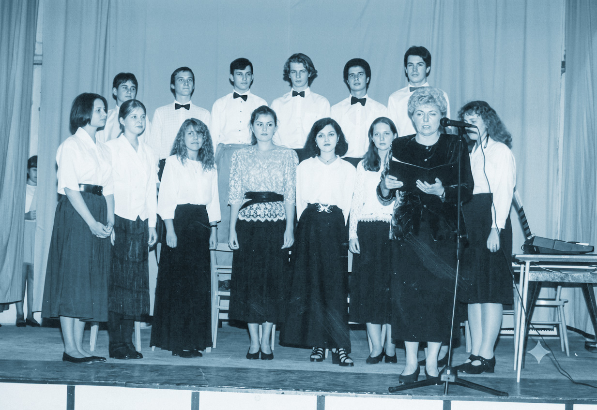
škole. Jakýmsi „stavbyvedoucím“ celého projektu se stal kolega Jiří Dybal.
Nezdařil Aha, teď už chápu, co znamená, když se řekne „Dybalovo hřiště“. Předpokládám ale, že seznam těch stavebních a jiných proměn v éře Jaroslavy Fischerové zdaleka neskončil. Vzpomínáte si ještě na naši tajnou prohlídku školy v roce 1980? Rozesmál jsem vás svým zjištěním, že kabinet, v němž naše povídání píšeme, ještě neexistoval, vzpomínáte? Prozradil jste mi, že vznikl přepažením rohové třídy. Kdy se to přesně stalo?
Měrka Kabinety s čísly 310 (matematika), 211 (ČJ 2) a 113 (ČJ 1) vznikly v roce 1994. Jsou pravda poněkud menší, ale čtyři vyučující a asi 2000 knížek se tu celkem pohodlně vejde.
Nezdařil Kdybychom se s kolegy neměli rádi a netužili občas o volných hodinách vztahy online hraním slovního fotbalu, mohlo by se to tu snadno změnit v „ponorku“. Protože mezi námi ale funguje porozumění, je toto místo naopak zdrojem inspirace tolik potřebné pro naše povídání. Poslyšte, nechcete si dát chvilku pauzu, že bychom si rovnou rychle střihli tak dva nebo tři mače?
Měrka Chci, ale nemáme čas. Napřed totiž musíme dokončit seznam zakladatelských aktivit za dob Jaroslavy Fischerové. Od poloviny 90. let se běžné třídy přeměňují na odborné učebny. V roce 1995 je zprovozněna literární učebna, vzápětí následuje učebna IVT, v roce 2004 multimediální učebna a o rok později i učebna zeměpisu. Je to poněkud dlouhý výčet, nicméně považuji za nutné podotknout, že tyto odborné učebny nejsou součástí mobiliáře naší školy od nepaměti, jak by se mohlo mladším zdát.
Nezdařil Taky to muselo stát pořádný balík peněz. Je vlastně obdivuhodné, že se na podobné akce dařilo shánět prostředky, protože jak už jsem zmínil, zvláště v devadesátých letech byla situace v tomto ohledu zoufalá.
Měrka To máte úplnou pravdu. Ovšem byl to problém dlouhodobý, protože přehlížení gymnaziálního školství rozhodně nebyla záležitost exkluzivně porevoluční, nýbrž se táhlo dlouhá léta nazpět.
Nezdařil No dobře, ale že nebyly ani prostředky na nákup papíru a studenti byli někdy v devadesátém šestém vyzýváni, aby si na písemky nosili papíry vlastní?
Měrka Musím potvrdit, že si nevymýšlíte, také jsem to v zápisech z pedagogických porad z devadesátek četl. Víte, co je ale pro ředitelku školy úplně nejhorší?
Nezdařil Co by tak… Vzpoura na Domečku?
Měrka To nebylo vtipné a nic takového se nikdy nestalo. Nejhorší je, když ředitel nemůže dobře zaplatit ani své nejlepší pedagogy, srdcaře. Což se stalo v roce 1997 a ředitelka v tom byla zcela nevinně.
Nezdařil Já tedy sice vím, že na konci toho roku proběhl tzv. sarajevský atentát na Václava Klause, ale to s tím asi nebude mít moc co společného, že?
Měrka No, nějaká malá souvislost by tam byla. V tomto roce totiž tzv. „bankovní socialismus“ způsobil výrazný schodek v příjmech státního rozpočtu.
Nezdařil Na to si sice nepamatuju, ale přesto vím, že to způsobilo hluboké rozčarování i v řadách pravicových voličů. Úsporná opatření, úsporné balíčky a utahování opasků. Předpokládám, že ani školství nebylo škrtů ušetřeno. Dohledal jste o tom něco?
Měrka To víte že ano. Na poradě v červnu 1997 ředitelka oznámila, že v rámci úsporných balíčků budou zaměstnancům kráceny mzdy o 1,6 %, bude zastaveno vyplácení 14. platů, provozní výdaje budou kráceny o 15 %, nebudou propláceny cestovní náklady vyučujících na školní akce, ani výlety.
Nezdařil No to je pěkné. Pro vyučující i ředitele muselo toto opatření Klausovy vlády znamenat pořádnou frustraci.
Měrka To nepochybně. Zakončeme ale naše vypravování o paní Fischerové něčím příjemnějším. Asi víte, že naše škola nese čestný název Wichterlovo gymnázium od roku 2006. Zajímalo by vás, jak jsme k tomuto názvu přišli?
Nezdařil No že váháte. Jenom povídejte.
Měrka Jistě si vybavíte ty onomastické zmatky, které provázely existenci dvou porubských gymnázií sídlících na ulici pojmenované po německém komunistovi.
Nezdařil Jasně, Velká a Malá Thälmannka.
Měrka V 90. letech minulého století začala v Porubě vznikat gymnázia další. Protože by to bylo samostatnou kapitolu, spokojme se s konstatováním, že sousloví „porubské gymnázium“ už v devadesátkách ztratilo ten správný rozlišovací význam. První pokus o získání čestného názvu tak byl učiněn již v roce 1995. Jenom připomenu, že tenkrát ještě neexistovaly krajské úřady a my jsme stále byli státní organizací zřízenou MŠMT.
Nezdařil Dobrá, dobrá, ale o jaký název jsme žádali? Vzhledem k tomu, že se od nás hlásí velký počet absolventů na medicínu, tak mě napadá třeba gymnázium Rajka Dolečka.
Měrka No to ani náhodou. Původní záměr byl pojmenovat naši školu jako 1. porubské gymnázium.
Nezdařil Tedy pane kolego, jsem rád, že tento návrh nakonec neprošel. Nezlobte se na mne, ale mi ten název připomíná divoké devadesátky a všelijaké záložny, jejichž základním a jediným účelem bylo vytunelovat nějaké peníze. První moravskoslezská záložna Jis tota, nebo První porubský investiční holding.
Měrka Pane kolego, škoda jen, že vám v té době bylo jen jedenáct let. Mohl byste názvy těch firem vymýšlet pro Viktora Koženého nebo kmotra Mrázka. Ale souhlasím s vámi.
Nezdařil Takže se rychle přesuňme do roku 2006. V tom roce jsme slavili padesátku…
Měrka Oslavy to byly opravdu grandiózní, ale pokračujme v našem vypravování o zisku čestného názvu.
Nezdařil Předpokládám, že Otto Wichterle nebyl jediným kandidátem, nebo se mýlím?
Měrka Předpokládáte správně. My jsme nejdříve uvažovali o výrazné osobnosti spjaté s naší obcí. Takovou postavou byl například Josef Hurník, řídící učitel, který působil na staré porubské škole v časech předválečných. Je možná méně známý než jeho syn a hudební skladatel Ilja Hurník, ale i tak se zpočátku dostal na seznam možných kandidátů. Jenom pro zajímavost měl také dceru Šárku. Ta se vdala za pana Ebena, aby spolu postupně zplodili syny Kryštofa, Marka a Davida. Nejznámější z nich je pochopitelně Marek Eben, ale ani ostatní si v životě nevedli vůbec špatně. Tak například Kryštof…
Nezdařil Pane kolego, důrazně vás žádám, abyste si své obvyklé odbočky nechal na jindy. Uvědomte si, že tyto řádky píšeme v období letních prázdnin a pan editor již začal posílat nervózní maily.
Měrka Promiňte, promiňte, už jsem zase na kolejích. Jenom kdybych věděl, kde jsem to zrovna…
Nezdařil Zrovna jste se chystal říci, že z plánu pojmenovat naše gymnázium po Josefu Hurníkovi zřejmě sešlo.
Měrka Ach no, máte pravdu. Museli jsme zkrátka hledat dál. Po nějakém čase padly naše zraky na VŠB–TUO, kde působil jeden z potomků rodiny Wichterlových. Paní ředitelka neváhala a vstoupila s ním do kontaktu.
Nezdařil A ukázalo se, že profesor Kamil Wichterle, tedy syn Otty Wichterleho, nebyl proti. To byl první k rok k tomu, aby naše škola získala svůj současný čestný název.
Měrka Právo veta ovšem měla paní Linda Wichterlová. V roce 2006 byla již osmým rokem vdovou a svědomitě plnila roli strážkyně manželova odkazu. Na náš návrh a prosbu zareagovala velmi milým dopisem, ze kterého vám odcituju: „Můj manžel byl skromný a sám nestál o vyznamenání, ani medaile, pomníky dokonce odsuzoval.“
Nezdařil Dokážu si představit, že paní ředitelka po obdržení tohoto listu zrovna dvakrát neskákala radostí.
Měrka Nečiňte předčasné závěry kolego. Ocitoval jsem vám totiž jenom část dopisu. Paní Wichterlová dále konstatovala, že v roce 2006 už stojí pomníček jejího manžela před Makromolekulárním ústavem a naše škola by tak byla druhou institucí v republice připomínající Ottu Wichterleho. Nakonec se ukázalo, že nemá nic proti a všechno dobře dopadlo. V roce 2006 jsme se stali Wichterlovým gymnáziem. Dovolíte mi ještě jdenu malou odbočku?
Nezdařil Ale jenom opravdu malinkou. Máte na to přesně jednu minutu!
Měrka Linda Wichterlová byla Dáma s velkým D. Dožila se 106 let a byla až do podzimu svého života velmi aktivní. Byla také nevyčerpatelnou studnicí vzpomínek. Ty se často stáčely k rodném Prostějovu, s nímž byla spojena i rodina Wichterlova. Ona si ještě pamatovala na Zdenu Wolkerovou, matku slavného básníka Jiřího, kterou osobně znala.
Nezdařil „Antoníne, topiči elektrárenský, do kotle přilož!“ Teď mě napadlo, jak se vlastně to příjmení Wichterle skloňuje?
Měrka To mi nahráváte na úsměvnou historku, kterou bychom naše povídání o Jaroslavě Fischerové mohli završit. Pokud byste z propria Wichterle měl vytvořit pronomen possessivum, dostáváme se k vážnému problému.
Nezdařil Mluvte na mě česky!
Měrka Pokud máte z příjmení
Wichterle měl vytvořit zájmeno přivlastňovací, může mít dva tvary. Wichterlovo, nebo Wichterleho. Ředitelka se v této záležitosti obrátila na češtináře svého ústavu.
Nezdařil A co jste jí jako češtináři jako doporučili?
Měrka Dali jsme hlavy dohromady a nakonec konstatovali, že jazykově správné jsou obě varianty. Nejlepší by proto bylo obrátit se přímo na rodinu Wichterlovu a zjistit, jaký tvar je bližší jejich srdci a uchu. Pan profesor Kamil Wichterle se ale nechal slyšet, že je to celkem jedno a ponechává rozhodnutí o tomto dilematu v rukou paní ředitelky.
Nezdařil A co na to paní ředitelka? Hodila si korunou nebo snad nechala o konečné podobě názvu hlasovat školskou radu?
Měrka Z toho je vidět, že jste ji neznal osobně. Kolegyně Fischerová ztělesňovala svět přírodních věd. Je to svět, ve kterém se kulička nemůže vydat cestou nahoru, nebo dolu podle vlastního uvážení. To je svět determinovaný přírodními zákony. A najednou byla vržena do světa dvojtvarů. Víte, k čemu nakonec došla?
Nezdařil Že je načase dodělat si filozofickou fakultu?
Měrka Ale kdež. Proč plýtvat svým časem, když ne to máte odborníky? Obrátila se zkrátka na Ústav pro jazyk český České akademie věd. A odtamtud dostala odpověď…
Nezdařil …která vůbec nic neřešila. Předpokládám totiž, že se naše kolegium češtinářů nemýlilo, a přední jazykovědci potvrdily, že jsou možné obě varianty. Wichterlovo i Wichterleho.
Měrka Přesně tak. Nápad obrátit se před konečným rozhodnutím k nejvyššímu arbitrovi jazykových sporů v zemi, se může vzhledem k nejednoznačnému výsledku jevit na první pohled jako ztráta času, ale nebylo tomu tak. Když jsme totiž roku 2006 oficiálně přijali název Wichterlovo gymnázium, okamžitě se začali rojit odborníci z gauče.
Nezdařil Jéje, moji oblíbenci. Facebook byl sice ještě v plenkách, ale diskuze na Novinkách měly již tehdy své specifické kouzlo, Dodnes ostatně platí, že jakmile se na internetu vyskytne článek jakéhokoliv druhu, objeví se pod ním vmžiku celé čety na slovo vzatých odborníků. Přistát s Airbusem 380 a předejít tak letecké katastrofě? Paninko, na tohle vám stačí fyzika páté třídy a troška toho fištrónu! Ekonomická krize v Hondurasu? Každý jenom trošku vzdělaná člověk přece ví, že stačilo více investovat do sóji a vykašlat se na státní subvence lidovým tancům. Rozumí hokeji, fotbalu, zdravotnictví i školství. Mám v plánu, že o tomto jevu jednou napíšu vědeckou studii. Ale zpátky k tématu. Předpokládám, že jakmile byl zveřejněn čestný název našeho gymnázia, obránci jazyka českého povstali z gauče a požadovali upálení paní Fischerové. Úplně vidím ty příspěvky, nebo možná i dopisy před očima: „Vážená paní ředytelko, máte chibu v tom názvu gimnásia. Správně má bít Wichterleho a né Wichterlovo. Octupte.“
Měrka Přesně jste to trefil. Naštěstí mohla paní Fischerová jen v klidu sáhnout do šuplíku, vytáhnout onen glejt Ústavu pro jazyk český a nebohý gaučák musel jít nadávat o dům dál.
Nezdařil To je příjemná a úsměvná tečka za ředitelováním Jaroslavy Fischerové.
Měrka A myslím, že i důstojná.
Nezdařil Zase někdo klepe na dveře, jak tady máme pracovat?
Měrka Příchozí Vejda bude nejspíš reklamovat známku z písemky. Ale ne, vždyť to je kolega Krchňák. Nazdar, Ferdinande Vaňku! Už jste byl na svačině?
Krchňák Ještě ne! A to číslo na Bohdalku jsem taky ještě nesehnal.
Nezdařil Nazdar, Tome.
Krchňák Poslouchal jsem za dveřmi a myslím, že ten Havlův dopis, to je jedna z nejlepších věcí, co se tu kdy staly.
Měrka a
Nezdařil Souhlas!
Měrka Myslím, že se naše vypravování pomalu blíží ke konci.
Nezdařil Jak to? Vždyť jsme se dostali jen k roku 2007 a musíme prozkoumat ještě další dvě decen nia. Nechce se mi věřit, že byste si dál už nic nepamatoval.
Měrka Právě že si to pamatuji, a v tom vidím základní problém. Práce historika totiž vyžaduje určitý odstup a ten my nemáme. Ostatně, jak říkával velký český historik Josef Pekař: „Historie končí v roce 1848, vše ostatní je už jen publicistika.“
Nezdařil Kdybychom se této zásady drželi, museli bychom skončit v dobách, kdy Poruba disponovala jedinou farní školou. Ale myslím, že rozumím, co jste chtěl sdělit.
Měrka Koneckonců ani František Palacký, „Otec národa“ nedotáhl ty své Dějiny národa českého v Čechách a na Moravě do konce.
Nezdařil Tak jako my, i on musel konstatovat: „Dál už to nedám. Končím rokem 1526 a půjdu k Pinkasům na pivo.“
Měrka Rád bych poděkoval všem, kteří nám byli při sepisování našeho povídání nápomocni. Archivu města Ostravy, zvláště pak panu Jozefu Šerkovi. Dále řediteli současnému i ředitelům bývalým. Jmenovitě Netoličkovi, Balnarovi a Štěpánovi, ředitelkám Šmajstrlové a Fischerové, kolegům a kolegyním Kulveitovi, Nečasovi, Lipčíkové, Pavloskovi, Bukovanské, Kučové, Davidové, Zaorálkové, Indrové, Krchňákovi, Smolákovi, Poláškovi i Ferdinandu Vaňkovi. Děkujeme také všem absolventům,
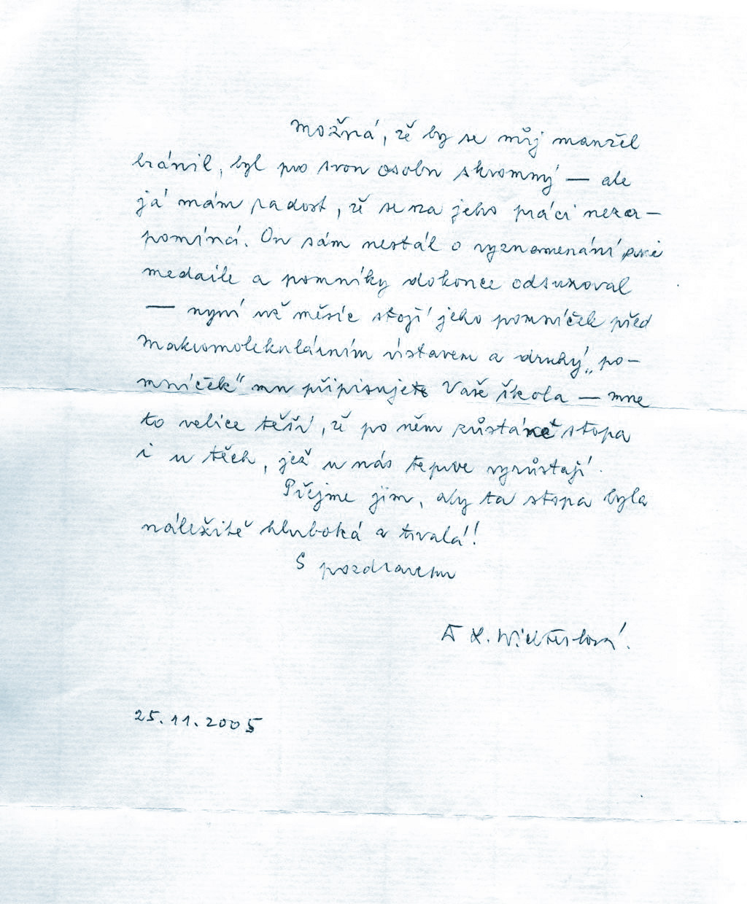
kteří se s námi podělili o své vzpomínky. Ty vzpomínky pro nás, řečeno slovy Ondřeje Gocmana takovým „malým ohřejváčkem“. A všichni jste nám poskytli neocenitelný vhled do časů dávno minulých.
Nezdařil Hlavně, že jsme dobrá parta. K poděkování se připojuji i já, neboť bez vaší pomoci by náš text nemohl vzniknout.
Krchňák A neděkujte pořád.
Nepůjdeme na pivo?
Měrka Jděte napřed, my vás doženem. Ještě si totiž musíme zahrát slovní fotbal. To už je u nás taková tradice, víte?
Krchňák No, jak chcete, ale zase se nám tady otevřela škvíra ve stázi. V pivnici Morava sedí Kozel, Balcar, Lubojacký, Moravec, Petro, Pinkas a další se scházejí. Šavrda s Liberdou, Ctibor Nečas.
Nezdařil A co Smolacius?
Přijde?
Krchňák Ten? Ten tam sedí od osmi od rána, a ještě nikoho nepustil ke slovu.
Měrka a
Nezdařil Tak my jdeme. Slovní fotbal ještě chvilku počká.